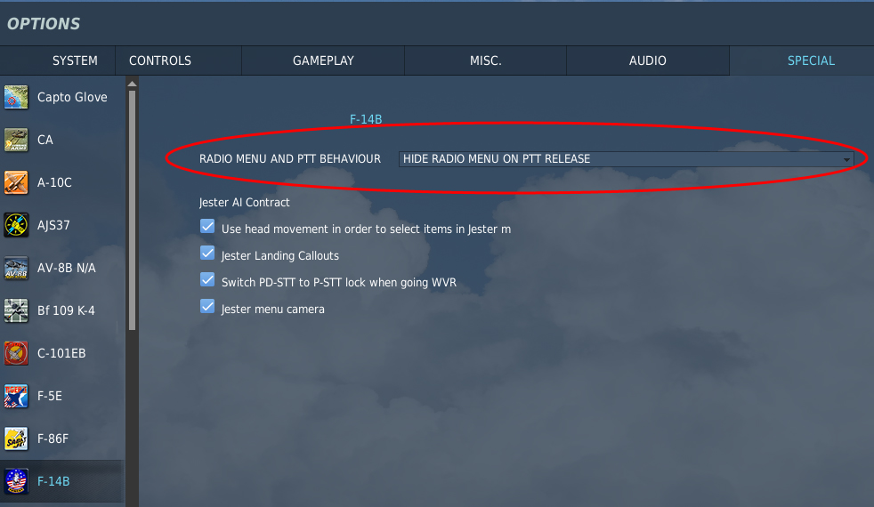
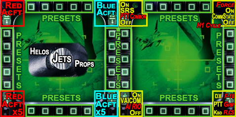

When I decided to do a DCS World script for the Cougar, I wanted to do one that would maximize the use of DirectX buttons and DCS in-game modifiers to maximize its use across multiple aircraft. I realized that TARGET was my solution to have multiple aircraft profiles within a single script and be able to change aircraft profiles on the fly. Eventually, despite every attempt to do so, I added many controller-level routines to do things that just can’t be customized from within DCS. Once this script was converted for use with the Warthog and its additional switches and buttons, DirectX commands were often infeasible due to Windows 32 button limitations. However, the script uses DirectX commands for maximum flexibility whenever possible.
My design philosophy is to mimic the original aircraft controls as closely as possible, and I will often do this at the expense of ergonomic convenience. This includes both HOTAS mapping as well as MFD button placement (where I try to make the button locations at least close to their relative cockpit positions). You will also notice that this includes different communications/push-to-talk buttons with different profiles, as well as different landing gear/flaps implementations for aircraft like the Fw190 and MiG-21. In instances where the controls cannot be mapped to their real-world counterparts, I have tried to keep with the A-10C type mapping for attack aircraft and F-16C type mapping for fighters in order to maintain consistency with the TMS/DMS/CMS oriented stick.
I have attempted to create a TARGET script that is modular, flexible, powerful, and as intuitive as possible. The Default DirectX profile was designed for flexible use with existing aircraft that do not yet have dedicated profiles, with enhancements such as the Communications State (CommState) routine, a FOV zoom routine when the first trigger stage is pressed (inspired by PeterP and ivanwfr), HOTAS mapped gear and flaps, and LED indications for Gear and Airbrake.
Please let me know whether I have succeeded.
This TARGET script requires a lot of customization up front, but the payoff is that the profile is flexible to your personal preferences, and all tweaks and adjustments can be made from a single file (DCS_World.tmc). Fortunately, Version 2.0 of this script introduced a GUI to assist with customization and automate the creation of the proper files for launching the profile.
Customizable Features include:
This guide will provide you with key and function mappings for the DCS aircraft for which I have created profiles. I will also thoroughly explain some of my custom routines. For a complete control layout, see the Layouts and MFD Inserts for Cougar and Warthog, as well as in the Docs\Profile JPGs folder of this package.
[*] H/T PeterP and ivanwfr for the code baseline from PACZoom
Before describing the following routines, naming conventions need to be addressed. For starters, “shift” or “shifted state” refers to the S3 button being held, and corresponds to the /I state in TARGET/Foxy programming. States referring to the Dogfight Switch (Cougar) or Boat Switch (Warthog)[*] are /U for the Up/back position, /D for Down/forward, and /M for Middle. This allows six possible assignments for each button, and combinations will be compound references (e.g. /UM for both Dogfight Up and Middle states and /DI for S3 in and Dogfight Switch down). All buttons will be referred to using standard TARGET/Foxy terminology (e.g. T1, S2, H3D, SPDF), where S buttons are on the stick, T buttons are on the Cougar TQS (throttle), and other notation that does not fit these specific patterns likely refer to buttons/switches on the Warthog Throttle. MFDs buttons are referred to as OSB#, and cycle clockwise (e.g. OSB1 is the left-most button on the top row, counts to OSB5 to the right across the top, down the right side to OSB10, left across the bottom to OSB15, and finally up the left column to OSB20). MFD LEDs are LED1 and LED2 (left to right). MFD naming may also be compounded for brevity, with LLED1 representing the LMFD LED1 and ROSB13 representing RMFD OSB13. Note that this convention remains consistent even with modules that use an alternate nomenclature for the OSBs. For example, McDonnell-Douglas/Boeing aircraft (AV-8B, F/A-18C) normally start counting OSB1 at the lower left instead of the upper left and has its OSB numbers offset by five from the Thrustmaster convention. However, the Thrustmaster convention is still used for consistency.
Additional states that are not standard to TARGET/Foxy include the position of an axis (e.g. Cougar RNG knob for helicopter throttle), where /N is MiNimum, /M is Middle and /X is MaXimum axis value. These are highlighted in Blue. Of note, the Cougar TQS axis uses TI (not to be confused with T1) for Idle and TS for Throttle Stop (i.e. fuel cut-off). The Warthog already has a discrete Idle Detent for each throttle axis, so no custom terminology is required. On HOTAS graphics, Landing Gear State is represented for GSU/GSD for logical Gear State Up/Down respectively; see Gear, Flaps, Rudder and Brakes (with LED Indications) for more details.
DirectX outputs will be referred to as DX# (e.g. DX21) and reference the output seen by DCS (and not necessarily the controller button itself). For example, TG2 normally sends the DX6 command, but if I were to use this for communications (as in the UH-1) I would map it to the DX21 output. Therefore, DX6 doesn’t necessarily mean TG2, and DX21 doesn’t necessarily mean T3 or LDGH.
TEMPO refers to buttons that have separate functions determined by how long they are held. TEMPO Short is a button or hat pressed for less time than the TEMPO threshold (normal default is 500ms), while TEMPO Long refers to the button that is held for a time longer than the TEMPO threshold. “Short” and “Long” can also be used without “TEMPO” if mentioned with a button or hat (e.g. H2U Short implies H2U TEMPO Short). The terms “tap” for TEMPO Short or “hold” for TEMPO Long may also be used as well. TEMPO Long commands are normally listed in italics on the HOTAS summary. TEMPO commands are normally displayed in Italics on the control map graphics, with Red Italics denoting that the function can be activated either by TEMPO Long or by S3+TEMPO Short, /I Red Italics indicating that S3+TEMPO Long is required, and Italics sans special color to denote that the function can only be activated by TEMPO Long. /I unitalicized indicates that the function isn't TEMPO'd (i.e. S3+button is required to activate the function),
Finally, some profiles make use of the U/M/D layers, assigning the Dogfight Switch (Cougar) or either the Boat or Flaps switch (Warthog) to the different states. In particular the Flaming Cliffs 3 profile uses the Dogfight Switch (Cougar) or Boat Switch (Warthog) to the different tactical modes. Dogfight/Boat Up defaults to Within Visual Range (WVR) air combat (or air to air mode for attack jets) and Dogfight/Boat Down defaults to Beyond Visual Range (BVR) air combat (air to ground mode for attack jets). Each mode modifies the joystick buttons to tasks related to their respective modes. Dogfight Middle returns to Navigation mode. Note that use of the Dogfight Switch as a shifter is currenlty only in the FC3 profile. Other uses in other profiles are for localized functionality only and these functions are discussed in their individual sections.[*] References to the Dogfight Switch will also apply to the Warthog Boat Switch unless specifically noted.
This TARGET script makes heavy use of shifted modes, both at the controller level and within DCS itself through the use of modifiers. The difference to you while using the script should be transparent, but knowing this will hopefully help you report any issues you come across while using this script. I have tried to make as much use as possible of the DirectX modifiers in DCS, because doing something in-game has the advantage of the game itself performing the operation (as opposed to key commands, which affect input independently of the game), and because this also reduces the complexity of the TARGET script itself. To this end, the S3 button has been assigned to press the JOY_BTN30 (DX30), which (in addition to TARGET level I/O shift commands) acts as a modifier in DCS World as well. What this also means is that any keystrokes generated in a shifted state within TARGET must have the JOY_BTN30 modifier added to their entry in keyboard.lua. This should already be done, but if I missed an assignment please let me know. Additionally, the MFDs are incorporated into the profile by having their buttons press the DX31 or DX32 modifier (LMFD or RMFD respectively) along with DX1-28 for each of the buttons. This gets around the 32 button limit of a single virtual controller, and allows use of the MFDs for on-the-fly profile switching and custom LED indications.
A differential braking routine makes use of DX29 for the wheel brake command, with DX31 and DX32 as modifiers for left and right differential braking respectively. For full brakes, both DX31 and DX32 modifiers are active. DX31 and DX32 are also used in concert with SnapView Direct Entry mode (as utilized with the A-10C CDU SnapView). While in a SnapView that uses Direct Entry, both DX31 and DX32 are active. In both of these cases, concurrent use of MFDs is not recommended unless there is specific MFD functionality (e.g. OSBs 7-19 in the A-10C CDU SnapView). Note that “normal” SnapViews that don’t have direct entry don’t activate DX31 and DX32, so your HOTAS/MFD functionality should work normally.
As configured in CTS, your HAT1 can be set for Point of View (POV), or for trim (for head tracker users). Head-tracking users who choose the trim hat also have the option of disabling some of the padlock views, which is nice if 1) you don’t use them, and 2) you would rather do your rudder trimming without the initial TEMPO delay.
Note that Trim with Padlock is the setting displayed on the HOTAS references included in this document.
The hat switch configurations are as follows:
Unshifted HAT1 will cycle the POV per standard convention. To center the view, double-tap H1U, just like a double click.
POV users can still trim the primary control surfaces (aileron and elevator) by using the HOTAS “shift” key (S3) and moving H1. Centering Trim involves double tapping H1D while in the shifted state. Note that trim commands (exception: center trim) are TEMPO’d with the padlock commands, so the hat switch must be held down and will begin to trim at the S3 Function/Modifier TEMPO value set in CTS (default 300ms).
This means that the padlock views are the short part of the TEMPO command. All padlock commands are shifted. Tapping H1U will cycle padlock, H1L will Padlock Ground, H1R will Padlock Missile Threat, and H1D will cancel padlock.
The main difference between this setting and the POV setting is that with no need to map POV, the primary control surfaces are trimmed unshifted and without TEMPO. Additionally, rudder trim can be applied on select aircraft by holding a shifted H1L and H1R. Since the rudder trim is TEMPO’d with the padlock views, the shifted H1L/H1R must be held for the S3 Function/Modifier TEMPO value (default 300ms), and trim activation is delayed.
Padlock is mapped (without TEMPO) as described in the POV section, except that Cycle Padlock and Cancel Padlock are TEMPO’d on H1U. Tap H1U to cycle padlock, hold H1U to cancel padlock.
Should you wish to keep your view fixated on a spot regardless of your head position, you can hold S3+H1D Long to pause TrackIR[*] and remap H1 to the POV commands as specified in the section above. This is particularly useful if you wish to keep your viewpoint on a console to manipulate switches using the mouse. With the POV mapped to H1, Hat1 can be used to look around the cockpit, which is quite useful during a cold start. S3+H1 is mapped to trim and padlock views. Note that Trim and Padlock are still available via TEMPO commands while holding S3.
To restore TrackIR and map H1 to trim, Double-Tap S3+H1D. Note that the TrackIR Restore command must be a double tap instead o f a TEMPO long (which is the Trim Up command).
In the event you use the HOTAS to perform an Ejection (S3+S4+T6/LDGH) or load another aircraft profile, if the TrackIR is paused it will be restored.
Important: The TrackIR Pause routine uses logic flags to determine whether to toggle the TrackIR Pause command. If the profile is “out of sync” (e.g. TrackIR paused while H1 mapped to trim), you will need to manually need to toggle the TrackIR Pause keyboard command to re-sync the profile.
[*] The TrackIR Pause command in this script must match the command specified in the head tracking software. This command defaults to CTRL+SHIFT+F9, and can be changed on the Settings page of the CTS GUI.
This setting is for people who value rudder trim over padlock views. While the Threat Missile Padlock view is maintained (a nod to monitor resolution/FOV limitations), no other padlock views are mapped.
Rudder Trim is no longer TEMPO’d, so applying shift and H1R/L will cause rudder trim to occur immediately. Padlock views are TEMPO’d on H1U with shifted hold for Threat Missile Padlock and shifted tap for cancel padlock.
If you have Head TRacking Hardware set to 2, then Hat1 is used for trim, mouse buttons, and VR Zoom. This is a basic framework for people with VR devices such as the Oculus Rift and HTC Vive. If POV Hat function in VR is set to 1, then Hat1 defaults as trim while unshifted and mouse buttons while shifted; vice versa if POV Hat function in VR = 0. In both cases, rudder trim is no longer mapped unless there is no aileron trim present (e.g. Spitfire LF Mk. IX). Additionally, VR profiles don't use Padlock or Snap Views.
The mouse commands are mapped as follows: H1L/R for left and right mouse buttons respectively, and H1U/D for mousewheel up/down respectively. The mousewheel commands are TEMPO based, so a short command (less than the S3 Function/Modifier TEMPO value, default 300ms) moves the mousewheel one increment, while holding H1U/D repeats the mousewheel commands at 100ms intervals (or whatever you set for VR MouseWheel Rate). To Enable VR Zoom, double-tap H1U; single-tap H1U to release VR Zoom. If POV Hat function in VR = 1, then you must hold down S3 in conjunction with HAT1 to execute these commands.
For two-seat aircraft, double-tapping H1L/R places you in the copilot or pilot seats respectively. Seat swapping is tied to the Trim function, so if POV Hat function in VR = 0, double-tapping S3+H1L/R will swap seats. The exception to this is any multi-crew helicopter that does not use the hat for trim (e.g. UH-1, Mi-8). Since there is no lateral trim function, simply pressing S3+H1L/R Short will change between left and right seats. Double-tapping S3+H1L/R will place you in additional seats (e.g. flight engineer or door gunner).
Normal Aircraft (assuming POV Hat function in VR set to 0) have Hat1 mapped as follows:
| Mouse Scroll Up (single) Mouse Scroll Up (repeated) /I Trim Hat Up |
||
| Left Mouse Button /I Trim Hat Left /I Double-Tap: Co-Pilot/Station 2 |
VR Mouse /I Trim Hat |
Right Mouse Button /I Trim Hat Right /I Double-Tap: Pilot/Station 1 |
| Mouse Scroll Down (single) Mouse Scroll Down (repeated) /I Trim Hat Down |
Multi-Station Helicopters that don't use a hat switch for trimming (e.g. UH-1, Mi-8) use the following convention:
| Mouse Scroll Up (single) Mouse Scroll Up (repeated) /I H1U Function |
||
| Left Mouse Button /I Station 2 /I Double-Tap: Station 4 |
VR Mouse |
Right Mouse Button /I Station 1 /I Double-Tap: Station 3 |
| Mouse Scroll Down (single) Mouse Scroll Down (repeated) /I H1D Function |
If you have POV Hat function in VR set to 1, These mappings are inverted. This means that trim and station selection are unshifted, including double-taps, and mouse functionality is shifted.
For HOTAS Warthog Throttle users, the Throttle Friction Lever (THR_FC) is remapped from Field of View Zoom to module-specific functionality (e.g. Antenna Elevation). Non-VR users can optionally remap THR_FC to these functions by disabling the Throttle Friction Lever As Field of View Zoom option in CTS.
Note:VR has not yet been integrated with automatic TrackIR pausing. Be sure to set Pause Head Tracking at Gunner Station to 0 in the CTS GUI.
Important: using VR requires additional configuration steps. Please consult Appendix D in the Setup Guide PDF for detailed instructions.
Since SnapViews have no use in VR, most SnapViews have been replaced with either Rudder Trim or VR Zoom and Spyglass Zoom views, depending on aircraft capability and SnapView orientation. Unless otherwise specified on the HOTAS graphic itself, SnapViews will be remapped to the following functions as follows for any substituted SnapView. Unshifted SnapViews will remap to unshifted functions, and shifted SnapViews will remap to shifted functions. All functions are held (not toggled). If an entire hat is remapped it will map as the table below. Otherwise, individual axes may be remapped to rudder trim or zoom functionality based on orientation.
| VR Zoom (Hold) | ||
| Rudder Trim Left | Substitute SnapView Functions | Rudder Trim Right |
| Spyglass Zoom (Hold) |
Example 1: The JF-17 Thunder uses S3+H4 for SnapViews. S3+H4U/D is used for VR Zoom and Spyglass Zoom respectively, and S3+H4L/R is used for Left and Right Rudder Trim.
Example 2: The MiG-15 uses H3 for SnapViews, so H3U/D is mapped to VR Zoom and Spyglass Zoom. Rudder trim is mapped to H3L/R.
Example 3: The SA342 Gazelle uses S3+H3 for SnapViews, and does not use S3+H3U/D for gear/flap cycle with the HOTAS Cougar. Therefore, S3+H3U/D is mapped to VR Zoom and Spyglass Zoom respectively. Since the SA342 does not have conventional rudder trim, S3+H3L/R is not remapped.
CommState is my routine for allowing you to navigate the AI Communication Menu from your HOTAS controller. The simple explanation for this routine is that while you hold down your CommSwitch[*] (e.g. T3 or MSD for Flaming Cliffs 3), Hats 2-4 map to Function Keys F1-F12, starting with H2U and going clockwise. Once you get to H4L, this button is actually TEMPO’d so you need to hold it in order to get F12. Since F12 normally closes the menu, this shouldn’t be a big deal. However, tapping H4L will cycle the active communications menu. This can be useful if you “turn off” the menu by entering CommState (this happens with communications initiated by AI), and you want to get the menu back in order to respond.
As of version 2.54 of this script, H2U Long will actuate the Space Bar. Since the Space Bar is used as a mission progression trigger in many missions, this is a way to add this function to the HOTAS. F1 must be selected with H2U Short.
When you enter CommState, the RLED2 will illuminate to remind you of this. Exiting CommState will turn off the LED. Likewise, while you are transmitting on Teamspeak (i.e. if DX21 is active) the RLED1 will illuminate.
Note: regardless of whether you intend to use the AI Communications Menu (e.g. using T2-T4 in the A-10C with Aries Airborne Radio/TARS/Univers Radio), entering CommState will cycle this menu anyway. This is to prevent inadvertent view changing with Hats 2-4 while transmitting on Teamspeak using a button common to VOX and AI Communications.
[*] When discussing communications, reference to the Cougar CommSwitch is analogous to the Warthog Mic Switch, with up/down/left/right applying to the same mappings. Mic Switch pressed (MSP) is always Teamspeak 3 PTT.
VAICOM Pro is a plugin for the VoiceAttack voice recognition software. Going above and beyond standard voice recognition and macro execution, VAICOM Pro uses the DCS export function to determine existing callsigns in a mission, the nearest airfield, the current aircraft (and radio stack), and executes communications without even using the communications menu and function keys! Much more than simply voice recognition software, VAICOM Pro takes immersion to another level.
CommState is disabled by default if VAICOM Pro is enabled. Please see the Setup Guide for instructions on configuring SimpleRadio and VAICOM Pro.DCS-SimpleRadio Standalone (SRS) by Ciribob is the de facto standard for DCS World multiplayer sessions. SimpleRadio is consistently updated, does not require Teamspeak (avoiding any TS3 permission issues), and has a comparatively small CPU/RAM footprint. Despite SRS being a standalone program, the program values and many descriptions still refer to TS3. This is strictly a naming convention and does not impact the functionality of SimpleRadio.
SimpleRadio provides the option of a Common PTT button, with other buttons selecting the radio. Since nothing needs to be mapped in TS3, Common PTT is used only if it is mapped; otherwise, the radio selectors are pressed to communicate on that particular radio.
Additionally, SimpleRadio includes an intercom channel for multicrew aircraft such as the L-39 and SA342. Intercom is a separate channel that is selected just like any radio channels. If you do not use PTT Common, then DX20 (button 19 in SimpleRadio) is the recommended assignment for Intercom (just like regular PTT in Teamspeak). However, if you do use PTT Common, then DX20 with DX30 (button 29 in SimpleRadio) as a modifier is recommended. This way, you need only press S3 and Comm/Mic Switch Up long enough to select the intercom, then release S3 and continue speaking. This sounds complicated, but it is actually quite intuitive. Additionally, Warthog users can press the Mic Switch In to automatically select intercom and speak (assuming DX20 and DX30 are mapped appropriately in SimpleRadio). Be sure to set SimpleRadio Standalone (SRS) = 1 to incorporate this functionality into your profile, or press RBRT Up while in the module selection mode of the script.
When SRS is enabled, the option exists to press a MFD combination to cycle or toggle the SRS Overlay. This key is normally S3+ROSB20 Long, with the following exceptions:
| Profile | MFD Combination |
| A-10C | S3+ROSB06 Long |
| AJS-37 | S3+ROSB07 |
| F-15E F/A-18C |
S3+ROSB06 Long |
| JF-17 | S3+ROSB06 Long |
| AWACS | T9/SPDB/H4P* |
Note: Support for TARS, UniversRadio and Aries Radio has been removed in favor of an integrated SRS/VAICOM Pro solution.
If both VAICOM Pro and SimpleRadio Standalone are enabled, this profile is designed to have these programs work together. Mic switches that key a specific radio with SRS also key the VAICOM Pro monitoring for the same radio. To ensure that SRS and VAICOM Pro are synchronized, select SRS PTT mapping on the Preferences tab as shown in the following figure:
The following tables illustrate the radio interfaces for each module, with separate tables for fixed wing and rotary wing aircraft. Controller terminology is that of the HOTAS Warthog Mic Switch; Cougar users should apply their Comm Switch mapping as it applies to the Mic Switch. There is no direct substitute for the MSP unless the Cougar T1 is mapped to PTT, which will be designated in the MSP column as applicable.
| Fixed-Wing Aircraft | MSU | MSR | MSD | MSL | MSP |
| MiG-15 MiG-19 MiG-21 |
PTT Auto/Common | PTT
CommState |
PTT
(also T1) Toggle VAICOM Chatter |
||
| Su-25A/T
Frogfoot (FC3) Su-27/33 Flanker (FC3) MiG-29 Fulcrum (FC3) |
PTT Auto (VAICOM) CommState (SRS/VC) |
UHF (SRS) | VHF (SRS) CommState (VC Only) |
PTT Toggle VAICOM Chatter |
|
| L-39 Albatross | PTT
Auto/Common PTT Intercom |
PTT CommState (Warthog) PTT+Intercom (Cougar) |
PTT
Intercom PTT (T1) Toggle VAICOM Chatter |
||
| A-4E Skyhawk (Community) | PTT Auto/Common | UHF (SRS) | UHF (SRS) CommState |
UHF (SRS) | PTT/UHF (SRS) Toggle VAICOM Chatter |
| F-5E Tiger II | PTT Auto/Common | PTT CommState |
PTT Toggle VAICOM Chatter |
||
| AV-8B
Harrier II F/A-18C Hornet |
PTT Auto/Common | Comm1 | PTT
CommState |
Comm2 | PTT Toggle VAICOM Chatter |
| A-10A
Warthog (FC3) Combined Arms |
PTT Auto (VAICOM) CommState (SRS/VC) |
VHF1 AM (SRS) | UHF (SRS) CommState (VC Only) |
VHF2 FM (SRS) | PTT Toggle VAICOM Chatter |
| A-10C Warthog | PTT Auto/Common | VHF1
AM VHF1 CommState |
UHF UHF CommState |
VHF2
FM VHF2 CommState |
PTT Toggle VAICOM Chatter |
| F-14 Tomcat | PTT Auto/ICS Walkman Stop / Play |
Comm1 Walkman FF |
Jester/ICS (DX18) ICS CommState |
Comm2 Walkman Rewind |
Jester/ICS Toggle VAICOM Chatter |
| F-15C Eagle (FC3) | PTT
Auto (VAICOM) CommState (SRS/VC) |
UHF1 | UHF2 CommState (VC Only) |
PTT Toggle VAICOM Chatter |
|
| F-15E Strike Eagle | PTT Auto/ICS | Comm1 | SRS ICS (DX18) | Comm2 | SRS ICS Toggle VAICOM Chatter |
| AJS-37 Viggen | PTT
Auto/Common Walkman Play |
FR22 Walkman FF |
PTT
Walkman Stop |
FR24 Walkman Rewind |
PTT Toggle VAICOM Chatter |
| F-86 Sabre | PTT Auto/Common | PTT
CommState |
PTT
(also T1) Toggle VAICOM Chatter |
||
| M-2000C | PTT Auto/Common | V/UHF
Com1 Preset Mode |
PTT
CommState |
UHF
Com2 Manual Mode |
PTT Guard Mode Toggle VAICOM Chatter |
| Bf-109 Kurfürst Fw-190 Dora P-51D Mustang Spitfire LF MkIX I-16 Ishak |
PTT Auto/Common | PTT
CommState |
PTT
(also T1) Toggle VAICOM Chatter |
||
| Hawk T.1A | PTT Auto/Common | UHF | PTT
CommState |
VHF AM | PTT Toggle VAICOM Chatter |
Because the Helicopters are normally mapped differently then fixed wing aircraft, they are listed in a separate table by function instead of button. The contents of each cell indicate the button assigned to the designated function.
| Helicopter | PTT Common | PTT+CommState | VHF AM (SRS) | UHF (SRS) | VHF FM (SRS) | Intercom (SRS) |
| Mi-8 Mi-24 UH-1 |
TG1 MSU/D (Warthog) CommSw L/R (Cougar) |
S3+TG2 TG2 (CommState forced) |
||||
| Ka-50 | S2 MSP |
S3+S2 | S2 | |||
| AH-64 | MSU MSP |
MSD | MSR | MSL | ||
| SA342 | MSU | S3+MSD | MSR | MSD | MSL | MSP S3+MSU |
This script supports the incorporation of the 2D NS340 GPS module for all compatible aircraft, though the functionality is not integrated unless you have a third MFD connected to your PC. For NS430 owners with two MFDs, a MFD button (usually S3+LOSB1) toggles the 2D display, at which point you may use the mouse to control the GPS. If you have a third MFD, S3+LOSB1 does not toggle the NS430. Rather, OSB17 on MFD3 toggles the NS430 2D display, and the other OSBs and rocker switches each correspond to a button on the NS430. For knobs with both inner and outer movement (i.e. the lower two knobs), the rocker switch controls the outer knob, while S3 with the rocker switch modifies the inner knob. S3+GAIN controls the VLOC knob with S3+OSB20 controlling the VLOC pushbutton on the knob. Unshifted GAIN and OSB20 control the Comms volume and pushbutton. Please see the NS430 MFD3 Insert for more details.
To disable the NS430 for a specific module, simply set the NS430 Enabled for <Selected Aircraft> to 0 in CTS.Note: Be sure to apply the TARGET NS430 kb v2xx.diff.lua file and make sure that JOY_BTN30 is a modifier for the NS430 module. If you have three or more MFDs attached to your PC, be sure to apply the TARGET NS430 MFD3 v2xx.diff.lua file to your third MFD. Even though the third MFD is not part of the TARGET profile, this diff.lua integrates with the profile. See the Setup Guide for instructions on applying joystick configuration files.
Additional Note: Chic's GPS Rotary Encoder Fix is highly recommended when using MFD3 for the knobs.
The DCS Scratchpad plug-in allows you to press a hotkey (default CTL+SHIFT+X) to toggle a scratchpad overlay in DCS, into which you can type notes such as coordinates, frequencies, procedures, etc. Enabling DCS Scratchpad in CTS will replace the NS430 toggle function with the DCS Scratchpad Hotkey if the following criteria is met:
The following table indicates how DCS Scratchpad is mapped to the MFDs. In cases where DCS Scratchpad supersedes the NS430 Toggle, this will not be marked on the MFD graphics. You will need to mentally make this substitution.
| Module | MFD Assignment | Notes |
| AV-8B | ROSB20 Long S3+ROSB20 |
AV-8B NS430 mapped to ROSB20 because LOSB1 maps to UFC. |
| A-10C | S3+ROSB20 Long | A-10C does not use NS430. S3+ROSB20 Short is NVG Toggle. |
| F-14 | ROSB20 Long S3+ROSB20 |
F-14 NS430 mapped to ROSB20 because LOSB1 maps to ACM (Pilot) and TCS/FLIR (RIO). |
| F-15E F/A-18C |
S3+ROSB20 Long | F/A-18C does not use NS430. S3+ROSB20 Short is AMPCD OSB5. If Number of Thrustmaster MFDs exceeds 2, then S3+ROSB20 toggles DCS Scratchpad. |
| P-51D | ROSB20 Long S3+ROSB20 |
P-51D NS430 mapped to ROSB20 because LOSB1 maps to a guarded switch. |
| UH-1 Mi-8 |
LOSB1 Long | UH-1/Mi-8 NS430 mapped to LOSB1 Long. |
| Ka-50 | ROSB10 Long S3+ROSB10 Short |
Ka-50 does not use NS430. If DCS Scratchpad is Enabled, ABRIS Power will be toggled with S3+ROSB10 Long. Otherwise ABRIS Power is S3+ROSB10. |
| All Others | S3+LOSB1 Short | Supersedes the default NS430 assignment. For Combined Arms (which doesnt use NS430), Jump in Vehicle command on LMFD is forced to LOSB1 Long. |
Note: if you have changed the default DCS Scratchpad Hotkey from CTL+SHIFT+X, you must also reassign this value in the Macros for Third-Party Utilities section of the Settings page in CTS.
For Cougar users, Gear and Flaps can both be accessed on the Cougar stick with shifted H3U and H3D switches[*] (H2U/H2D for the A-10C). These switches are TEMPO’d, so holding them down will deploy or retract landing gear, and tapping them will deploy or retract flaps. TEMPO durations necessary to deploy or retract gear can be set in CTS.
Warthog users utilize the Throttle for gear and flaps. Unless otherwise specified, the flaps switch is naturally mapped for flap settings, and the landing gear has been mapped to the shifted China Hat (S3+CHF Long for gear down, S3+CHB Long for gear up) by default.
This script keeps track of the logical Gear State for S4 context sensitive functionality, and also uses the LMFD LEDs to indicate your Airbrake and Landing Gear states. LLED1 flashes while your airbrake is extended, and turns off when it is retracted. Likewise, LLED2 will illuminate when you hold S3+H3D/CHF to deploy the landing gear, and LED2 will turn off when you hold S3+H3U/CHB to retract the gear. In both cases, there is a transit time between switch/command activation and the steady LED signal, during which time the LED will flash. This is just to add some atmosphere, as the gear or brake won’t be fully extended or retracted instantaneously either.
Thelogical Gear State is important because it determines the function of the Paddle Switch (S4), as well as other profile-dependent functions. If the logical Gear State is down, then the paddle switch maps to wheel brakes, while if the logical Gear State is up, then the standard S4 function (e.g. autopilot override, laser designator) will be used instead.
You can toggle the logical Gear State by holding S3+T6 (S3+LDGH for Warthog) for 0.5 seconds. This is useful if you get shot down and respawn on the ground, or if you default the gear to be extended and the mission starts in the air.
Note: the LEDs and logical Gear State do not necessarily represent what is going on in DCS World! The LEDs only respond to the key commands. They are another tool for situational awareness regarding the profile state, but without 2 way feedback from DCS World they should not be used as a primary indicator. If you do find that your HOTAS Gear State (as displayed on LLED2) does not match your in-game state, simply hold S3+T6/LDGH for 0.5 seconds to toggle the logical Gear State. For example, if the LLED2 is lit (indicating gear down), but your gear is up in-game, then hold S3+T6/LDGH Long, which will toggle the logical Gear State to “up” in the profile without cycling the gear in-game.
[*] The Fw-190 and MiG-21bis have special gear/flaps functionality and do not use H3U/D. See each individual aircraft section for details.
If you are using the HOTAS Cougar[*], the rudder axis can be mapped to the ANT ELEV knob by setting Rudder Pedals = 2 in CTS. This allows for ground steering and differential braking using ANT ELEV if you don’t have any rudder pedals; if you have external USB pedals you are better off using those. While ANT ELEV as rudder applies globally to helicopters, for fixed wing aircraft the ANT ELEV knob is only mapped to the rudder axis while the logical Gear State is down. While the logical Gear State is up, the ANT ELEV knob maps to its default function (likely Antenna Elevation, propeller pitch, or FOV Zoom). If you have Rudder Pedals set to 2, then the LLED1 will illuminate to indicate when rudder/ground steering is enabled. The differential braking routine in this profile is compatible with the ANT ELEV knob as rudder axis.
If you don’t like the orientation of the ANT ELEV as it pertains to the rudder, then change the Reverse ANT Knob as Rudder value in the CTS GUI to suit your desired orientation.
It is still possible to use ANT ELEV for FOV Zoom while on the ground. By holding down S3, you can remap ANT ELEV to its normal axis. Since there is a short delay between pressing S3 and switching the axis, be sure to wait until the LLED1 goes out before using ANT ELEV, else your rudder will likely be locked in a position off-center. Releasing S3 will return ANT ELEV to the rudder axis, and LLED1 will once again be lit.
[*] With only one rotary axis on the Warthog, the assumption here is that people who own a HOTAS Warthog also invested in USB Rudder Pedals.
There are two types of airbrakes in DCS World: the type that can be deployed partially to add only the desired amount of drag (e.g. A-10C), and the brakes that deploy only fully in an on/off state (e.g. FC3[*]). The script accounts for both types of airbrakes, with the A-10C type brake referred to as “analog” and FC3 type brake referred to as “binary”. In addition, this script implements each brake type two different ways, making for four different brake implementation types, cycle able in the following order for enabled profiles:
[*] Yes, the F-15C airbrake is also analog, but this is the exception to the FC3 aircraft.
For the Binary-Momentary type brake,Cougar T9 and T10 (or Warthog SPDB/SPDF) both deploy the airbrake for the duration the button is held. Since T9/SPDB is spring loaded and T10/SPDF is a locking switch, you can choose to either deploy the button in short intervals (T9/SPDB) or for a longer term (T10/SPDF). In either case, releasing the button will retract the air brake. If your airbrake toggles out of cycle (e.g. airbrake is deployed when your switch is released), tap S3+T9/SPDB Short to toggle the airbrake again. While the airbrake is deployed, LLED1 will flash, and LLED1 will extinguish once the brake is retracted.
When using the Analog-Momentary type brake, T9/SPDB (Speedbrake switch aft) extends the brake for the duration you hold T9/SPDB, and when you release T9/SPDB the brake remains in that state (i.e. either partially or fully extended). To retract the airbrake, press and hold T10/SPDF (Speedbrake switch forward) and the brake will retract for the duration T10/SPDF is held. When the brake is fully deployed, LLED1 will illuminate steady, and will extinguish when the brake is fully retracted. When the brake is in transition or stopped in an intermediate stage, LLED1 will flash.
The release of the F-15C Advanced Flight Model added a new implementation of the analog brake, where instead of the brake cycling while the button is held, the brake cycles on button press (like binary) and stops cycling when the same button is pressed again. This brake type is Analog-Pulse. For purposes of the profile, you operate the Analog-Pulse brake as you would the Analog-Momentary brake, and the LED1 indications are identical.
To the end user, the Binary-Discrete brake works exactly the same way as the analog brake types, except that the brake is fully extended or retracted with T9/SPDB or T10/SPDF pressed respectively and regardless of the duration the button is held. This was added for the MiG-21bis, and the only difference to the end user is the amount of time the brake light (LLED1) flashes.
Note that you can change between all four brake types on the fly in the Standard DirectX profile by holding S3+T9/SPDB for 1 second. LLED1 will illuminate to indicate which brake is selected. The LED will flash 8 times over 2 seconds for a binary-discrete airbrake, 4 times over 2 seconds for binary-momentary, twice over 2 seconds for analog-pulse, and will be steadily lit for 2 seconds for analog-momentary.
When the logical Gear State indicates “down” (i.e. the LLED2 is lit), then S4[*] controls the wheel brakes. Your combined Rudder Pedals and Differential Braking Logic settings determine how your brakes work; see the Advanced Configuration Guide for more details.
[*] For fixed wing aircraft that may benefit from force feedback instead of HOTAS, T6 will also enable wheelbrakes. This is only for the Cougar, and currently applies to the F-86 and WW2 warbirds like the P-51D, Spitfire, Bf109 and Fw-190.
If you have rudder pedals attached to your Cougar (or use ANT knob as rudder), then you have the option to use differential braking. Rather than requiring toe brakes (which would exceed the number of axes available on a DirectX controller), this script emulates some WWII style brakes in which the wheel brake was attached to the stick (as a handbrake), and the amount of differential braking was directly related to the position of the rudder pedals.
For example, if you are taxiing your A-10C with neutral rudder, pressing S4 will enable both wheelbrakes equally. If you have right rudder enabled, then pressing S4 will enable the right wheel brake. Same applies to the left. Note that these are still digital brakes, so unfortunately there is no analog graduation based on actual rudder pedal position. Rather, the rudder range was divided into three equal sections, and the differential brakes are assigned by which section the rudder is currently in. This level of digital braking is fine for taxiing, but if you use the brakes at high speeds, be sure to keep the rudder near center to prevent the aircraft from tipping.
Analog wheel brakes are available on aircraft modules that have wheelbrake axes[*]. If you use gameport rudders or the ANT Knob, then you can still use the rudder position for analog braking similar to the digital braking routine described above. In this case, holding down S4 will apply modifiers to the Y axis and pulling back on the stick will gradually apply brake force until you pull the stick all the way back (maximum force).
If you use USB Rudder Pedals without toe brakes, you have the option to use the joystick X axis for differential braking, while the Y axis will continue to act as both brakes in concert. If you choose to use the X axis for differential braking, you will need to make changes to your controller axis settings in DCS World; see the Advanced Configuration Guide for details. This method is really a last resort (personally, I would recommend purchasing gameport rudders or USB rudders with toe brakes before enabling this option), but it is available if required.
Important: if you have S4 depressed, then the in-game Y axis of the controller (and X if so configured) remains where it was when you pressed S4. Likewise, pitch adjustments (and roll if so configured) cannot be made while S4 is pressed, so be sure not to apply brakes where you might need pitch authority.
Note: H/T to Scrim for inspiring the idea of analog braking with is analog paddle brake idea for the MiG-21.
[*] The exception is the Bf-109K-4, which does not have a full wheel brake axis (only separate left and right axes). As such, it is not possible to map both axes to the joystick so that they could perform together, so this script only supports digital braking for the Bf-109. If there is ever an axis for both brakes included on the Bf-109, analog braking will be added.
In the event you are in an aircraft with momentary NWS (F-15C/F-86F) and you have Joystick Y Axis as Analog Brake with NWS Enabled, pressing S4 and pushing the joystick forward of center enables braking with NWS. Like standard braking, pushing the stick further forward increases the brake pressure, and applying rudder (or JoyX with forward pressure) applies the set pressure to the applicable wheel brake. Pulling the stick back aft of center operates the brakes without NWS (e.g. for slowing down on the runway). Regardless of your Analog Brake with NWS setting, S3 will always act as NWS (without braking) in aircraft with momentary NWS.
Note: Because it is the only way within this profile to brake with NWS engaged, Analog Brake with NWS operates independently of your Differential Braking Logic setting. This way, people who normally prefer digital braking have the option available when taxiing with an aircraft with momentary NWS.
Note: This feature is deprecated until there is sufficient demand for its reintroduction. The recommended configuration is setting Rudder Pedals = 0, which in conjunction with the HOTAS Warthog will remove the HOTAS Cougar from the profile and list it as a separate controller.
If you have both a HOTAS Cougar and Warthog, as well as toe brakes on the gameport rudders attached to the Cougar[*], then you can enable the toe brakes by setting Differential Braking Logic = 3. Note that you must also set your left and right toe brake axes to JoyX and JoyY in the Cougar Control Panel for this to work.
With this option enabled, aircraft that have analog toe brakes in the DCS World Axis Assignments will be able to use the toe brakes on your gameport rudders by mapping them to Rx/Ry. Aircraft that have this option available will have whc instead of wh as the controller ID in the diff.lua filename.
To prevent possible conflicts with other axes (especially if the Rx and Ry are already used for cursor control, such as in the F-15C or A-10C), the toe brakes are only available when the logical Gear State indicates down (LMFD LED 2 is lit), so you should always use the HOTAS to cycle your landing gear.
By necessity, this script uses Rx and Ry for the toe axes, and will use modifiers (JOY_BTN31, JOY_BTN32) when Rx and Ry are shared with another function. This is because Windows has a limitation of 8 axes per controller, and TARGET creates a single virtual controller with only 8 axes. To use more than 8 total axes, I have to add modifiers with the use of one physical axis and no modifier on another. With sharing of the Rx/Ry axes, you may see some cursor drift on the A-10C and F-15C.
With the sharing of the Rx/Ry axes on some aircraft (e.g. A-10C, F-15C), a complicated mapping algorithm is necessary to both allow curser slew while the logical Gear State is down and prevent cursor drift during braking. This routine involves the dynamic locking and unlocking of axes, so if you get unresponsive brakes or cursor control, try manipulating both brakes and cursor to unlock the axes. If this fails, press a button on each MFD to reset DX31/DX32.
[*] Thrustmaster T-Flight Rudder Pedals (TFRP) are excluded from this profile to allow for extra axes as toe brakes. There is very little to be gained in adding the TFRP to the profile, so this section applies only to gameport rudders with analog toe brakes.
If enabled, holding the joystick all the way aft and releasing S4 will set the parking brake, or alternatively lock the axis in place if no specific parking brake command exists (e.g. FC3). Releasing S4 with the joystick near center will release the brake (though you may need to move the stick slightly to register a response on the modified axis).
The exceptions are the MiG-21 and the P-51D (and TF-51D). The feature was not applied to the MiG-21 because it is much too easy to inadvertently set the parking brake while using the stick as the paddle brake. You can still use S3+T9/T10 to engage/disengage the parking brake on the MiG-21. The P-51 was omitted because activating and releasing the parking brake is a two-step process. To activate the parking brake in the P-51, hold S4, pull the stick back, press and release T9 (brake switch aft), then release S4.
Note: setting the analog parking brake will work even if digital braking is selected.
Aircraft with a paddle brake (e.g. Ka-50, MiG-21) use the Joystick Y axis for analog braking, and the in-game rudder position to determine the amount of differential braking applied. This works the same way as the normal Analog Braking routine, but with in-game rudder position detection for smoother braking transitions.
Note: because the analog paddle brake uses in-game rudder position, it is fully compatible with external rudder pedals.
TriggerZoom is based on a Foxy routine called “PAC 1 Zoom”, which was written by PeterP for Foxy and refined for TARGET by ivanwfr. The function zooms your FOV while TG1 is depressed, allowing you to see your intended gun target more clearly before pressing TG2 to fire your cannon. Releasing TG1 will revert your FOV to either the pre-zoom settings or the default FOV setting. Whereas PAC1 Zoom implies use with the A-10C (its original implementation), TriggerZoom can be used across all existing profiles unless noted otherwise. TriggerZoom is hot-selectable by pressing S3+TG1, at which point the LLED2 flashes at quarter-second intervals when TriggerZoom is toggled on.
Important: If your TrackIR Z axis is set to "Zoom View" instead of "Cockpit Camera Move Forward/Backward," then TrackIR will supersede all other zoom inputs, including TriggerZoom or the ANT ELEV knob. Best bet is to set your Z axis to “Camera Move Fwd/Backward” in the DCS World Options Menu.
Note: TriggerZoom is enhanced by using Boresight Views in Snapviews.lua.
Important: TriggerZoom in VR is a fixed value (VR Zoom) instead of a timed zoom value. If you set Head Tracking Hardware to 2 and wish to enable TriggerZoom, set the TriggerZoom Length to any positive value such as the default value.
Note: since the Warthog Throttle has discrete Idle Detents for each throttle axis, the buttonology described in this section applies only to the Cougar.
This script includes the ability to start up or shut down engines using the Throttle’s Idle Detent. The routine is designed for one or two engines.
When S3 is held and the throttle is moved from behind the Idle Detent to just forward of the detent, the startup routine is initiated. Since the Cougar throttle has only one axis, the timing between engines (on two-engine aircraft) must set in CTS. First the left engine start command is given, followed by the right engine after the assigned interval. During this time, the RLEDs 1 and 2 illuminate for a fixed time to indicate left and right engine starts respectively. These are meant to mimic the Engine Start lamps in the Russian FC3 aircraft.
If your throttle is aft of the Idle Detent and you wish to bypass the startup sequence (i.e. you’re starting in a warm aircraft), you can push the throttle forward to avoid the routine entirely.
To initiate the shutdown sequence, you need to pull the throttle aft of the Idle Detent while in a shifted state, then keep the throttle full aft with S3 held for the duration specified by the Cougar Throttle Shutdown Delay (default 2 seconds). This is to guard against an inadvertent shutdown. RLEDs 1 and 2 will flash to indicate that the engines 1 and 2 are respectively shutting down; RLED1 flashes for single engine aircraft.
This routine can be disabled completely by setting Idle Detent to 0, or only the startup or shutdown can be disabled as an option. For example, somebody who doesn’t want to risk an inadvertent engine shutdown in flight can opt to disable the shutdown routine (Time Between Engine Shutdowns = 0), while still leaving Time Between Engine Starts as a positive value.
Important: Central Position Trimmer Mode must be
disabled in the DCS World Options menu for each helicopter.
The
TARGET-based Central Position
Trimmer Mode (TCPTM) for helicopters is a
flexible, substantial improvement on both the Eagle Dynamics Central
Position Trimmer Mode, and it also incorporates the benefits of the
“classic” trimmer mode (i.e. when Central Position Trimmer Mode is
disabled in the DCS World Options menu). Applied to all
helicopter profiles, TCPTM incorporates the advantages of each ED
helicopter trimmer mode, and minimizes the disadvantages of
each.
TCPTM is the best option for helicopter trimming short of force
feedback.
TCPTM works the same way in all helicopters. The
Trim Function is mapped to H4U
(H4P for
Warthog), but how it is applied
is based on TEMPO. A short tap of the trimmer will enable
trim
like the “classic” ED trimmer function, where the trim will activate
immediately and your current joystick position will “spike” on the
deflection applied (i.e. trim + joystick deflection =
2*deflection). This is useful for small corrections (which is
why
it is set to TEMPO short).
Holding down the trimmer (TEMPO
Long)
will enable the full functionality of TCPTM, but differently from ED’s
Central Position Trimmer Mode. When you release the trimmer,
TARGET will immediately offset your stick deflection with stick trim in
the opposite direction, effectively centering your stick in the
sim. This removes any “doubling up” on trim release, and also
allows you to keep the stick in place to make fine-tuning adjustments
to your initial trim. You can tell that the trimmer is in
this
mode because the LLED1 will be flashing every 250ms[*].
Finally,
to prevent offsetting your desired control while re-centering the
stick, you can hold (TEMPO Long)
either H4D
(Cougar only) or S3
(Cougar
and Warthog), and while you move the stick to center TARGET will
continuously apply opposite trim so that DCS World sees a centered
stick. Once the stick is centered, you can release H4D or S3,
and
all TARGET-based stick trim will be zeroed out.
Alternatively, if
you don’t hold H4D
or S3, the
act of simply re-centering the stick[#]
will remove all TARGET-based trim (though while re-centering you will
incur in-game stick motion in the direction opposite of your in-game
trim). Once trim is reset, LLED1 is extinguished.
What
this gains you is flexibility, and the ability to trim and re-center
without loss of control or critical response time. TCPTM is
best
used by performing the following steps
Note that during this time, you have never lost stick input authority, nor have you had your stick “spike” upon trim (H4U/H4P) release. Also, note that TARGET-based trim is reset upon release of H4D or S3, regardless of whether the stick has been properly centered. This gives you immediate input authority if you need it.
Another advantage of TCPTM over the ED trimmer is that you can select the size of your own centering zone, so if you have a loose stick or spiking potentiometers, you can select a larger centering zone. Note that the centering zone is only if you re-center the stick without holding H4D or S3 (i.e. passive re-centering), and only after a TEMPO Long trim. As long as you use H4D or S3 when you re-center the stick, all TARGET-based trim will be reset once the button is released.
For Cougar users: instances of small corrections or large centering zones, passive re-centering may zero the trim before you get an opportunity to actively re-center the stick. For these situations, an optional delay between passive re-centering and H4D/S3 standard remapping was implemented. This is to prevent inadvertent actions (such as flare deployment) while attempting to actively re-center the stick. See the TARGET Central Position Trimmer Mode section in the Advanced Configuration Guide for details on setting up your own centering zone.
[*] If you use your ANT knob for rudder control (Rudder Pedals = 2), you will not receive any trim indication on LMFD LED1. Likewise, if Flashing MFD LEDs on Transitions is disabled, the trim indicator will be a solid LED indication.
[#] Important Note: if you have gameport rudders attached to your Cougar and enabled Rudder Polling for TCPTM Recentering, then you must also center your rudder pedals to automatically reset your TARGET-based trim.
Nosewheel Steering (NWS) in the F-15C and F-86 is not a toggle function (like the A-10C or M-2000C), but is rather a button that is held to momentarily increase the turning angle of the nosewheel from 12 degrees to 45 degrees. As such, NWS Engage by holding down S3 is only available when the logical Gear State of the profile indicates down (LLED2 is lit). Standard S3 functionality (TEMPO Long for shift, TEMPO Short for toggle function) is available when logical Gear State is Up.
This script has traditionally used the Paddle Switch (S4) as a wheelbrake key, a convention dating back to its Cougar/FC3 roots with limited axes and digital braking. The F/A-18C module has introduced a use for S4 that has equal utility both with the logical Gear State up or down, with S4 disengaging nosewheel steering once the aircraft picks up speed on the ground. The default functionality of S4 with the logical Gear State down is that wheelbrakes will be applied unless at least one of the throttles is in afterburner (or throttle above 70% for the Cougar TQS), at which point S4 will map to NWS disengage. The logic behind this is that a high throttle setting implies high speed and unsafe conditions for NWS, while reduced throttles imply the desire to slow down. Similarly, you can quickly tap S4 (at the S3 Function/Modifier TEMPO rate +50ms) and this will also disengage NWS. This functionality is expected to apply to some US Navy carrier aircraft (e.g. F/A-18C).
If you use a set of rudders with toe brakes and wish to disable S4 as wheelbrake entirely (i.e. forcing it to NWS disengage at all times), set Paddle Switch as Wheelbrake for USN Aircraft to 0 in CTS.
With NWS mapped to S3, you will be unable to perform Differential Braking using S4 simultaneously with NWS (you will end up recentering your TrackIR instead). You must enable Joystick Y Axis as Analog Brake with NWS Enabled in order to brake while using NWS. See Analog Braking With Nosewheel Steering (NWS) for more details.
Likewise, if you have Idle Detent set, then it is currently possible to inadvertently shut down your engine while using NWS if you hold S3 while your throttle is aft of idle. The likelihood of this has been alleviated with a delay before engine shutdown during which time if the throttle goes forward of idle the shutdown is cancelled. However, it is still a possibility. If you do find the engine shutting down during taxi, you can exercise any of the following options:

Warthog Control
Map
Cougar Control Map
High Contrast MFD
AWACS Mode is a special configuration that is selectable like Combined Arms or the DirectX profile. As the name implies, AWACS Mode is designed for people who wish to coordinate as AWACS, GCI, or ATC using either the F10 map view in DCS or with another program like LotATC. In AWACS Mode, the HOTAS and MFDs change primary functionality to managing the ten SRS radios used with the AWACS overlay. AWACS Mode requires additional setup in SRS (beyond what is covered in the Setup Guide), which is covered in Appendix F of the Advanced Configuration Guide.
AWACS Mode is cenetered around the use of either the stick or throttle as the primary radio selector and PTT actuator, allowing for the free use of either a right or left-handed mouse to control the onscreen action. To this end, the primary functions of radio selection and PTT are duplicated on both stick and throttle, and discrete radio selection and functions such as Guard toggle and Encryption toggle are duplicated on both MFDs. Additionally, for Warthog Throttle users, MSP acts as a shift function in addition to S3, again to allow for left-handed action. The four LEDs on the MFDs provide indication of the selected radio in binary (e.g. 0001 for Radio 1, 0100 for Radio 5, 1001 for Radio 9, etc.), though this feature can be disabled if profile stability becomes an issue. Additionally, the stick can optionally be mapped as a mouse controller, allowing you full HOTAS control of the AWACS/GCI scene.
While the primary functions are duplicated, there remain significant differences in how the stick and throttle are mapped. The following sections explain the design philosophy and execution of AWACS Mode. In all cases, MFD OSBs 1-5 and 11-15 will discretely select the radio of your choice.
For people with a left handed mouse (or an ambidextrous trackball located near the throttle), using the joystick as the primary radio controller allows you full use of the left-handed mouse. You can use either MFD or H4U/D to select your desired radio, then use the trigger as PTT. Similar to helicopter controls, TG1 activates PTT for your TeamSpeak or Discord channel, while TG2 activates PTT for the radio you selected with H4U/D or the MFDs. S3 activates the SRS Intercom channel. Hats 2-4 control specifc radio functionality (e.g. Guard, Encryption); see the appropriate Control Map for details.
Throttle as primary is useful for people with a standard right-handed mouse. You can use your Mic Switch (Comm Switch for Cougar TQS) to control your radio selection and PTT, freeing up your right hand for AWACS functionality with the mouse. Due to the more limited nature of the throttle, it doesn't have as many of the radio functions mapped as the joystick. Functions such as encryption and Guard will require either MFDs or the temporary use of the stick. SC (Warthog) and the Microstick (Cougar) are mapped to the mouse, with SCP/T1 mapped to the Left Mouse button and LTB/T6 mapped to the Right Mouse button. Additionally, the Dogfight/Boat switch and the Speedbrake Off switch (SPDF/T10) provide additional functionality and customization for the throttle.
The default setting for AWACS mode is that the Comm Switch (Cougar) or Mic Switch (Warthog) controls all ten AWACS radios. This is accomplished by having two switches select the active radio, having another switch activate the selected radio, and then having the last switch mapped to TS3/Discord PTT. However, in the event that you as the AWACS controller don't need all ten radios, setting SPDF/T10 on sets the Comm/Mic Switch to the setting similar to the A-10C, with Radios 1-3 assigned to their default positions. This allows you to talk on any of the first three radios without having to actually cycle to select it, just as if you were in an A-10C. Releasing SPDF/T10 reverts to the ten-radio configuration.
The three-position switch of both the Dogfight and Boat switches allows you to toggle a persistent PTT keying (or "Hot Mic"). T7/BSB keys the selected radio, while T8/BSF keys the Intercom. This functionality can be useful if you require both hands for an operation (such as control-clicking and item or conducting a debrief in TacView). Releasing the Dogfight/Boat Switch to center cuts the mic feed, reverting to momentary PTT functionality.
Cycling or toggling the SRS overlay can be done with T9/SPDB or with H4P for Warthog users. Unshifted actuation of either the speedbrake aft or H4P will cycle the default overlay specified in CTS, and shifted actuation using either S3 or MSP will cycle the alternate overlay. For example, if SimpleRadio Overlay Toggle Enabled is set to 1 in CTS, then T9/SPDB/H4P will cycle LShift+LCtl+ESC to cycle the in-game text overlay, and S3/MSP+T9/SPDB/H4P will cycle the 2D Windowed overlay. Vice versa if SimpleRadio Overlay Toggle Enabled is set to 2. If SimpleRadio Overlay Toggle Enabled is set to 0, then the function will default to the in-game overlay rather than disabling the feature entirely.
While the profile ideally uses either joystick or throttle with one hand to complement a mouse with the other hand, the option exists to emulate the mouse with the Joystick, Microstick/SC, or Hat1 and Coolie Switch. Analog mouse emulation using the Cougar Joystick or Microstick must be selected in CTS, while analog emulation with either the Warthog Joystick or Slew Controller can be selected on the fly using the ENG OPER switches on the Warthog Throttle base (left for throttle, right for joystick). S2/T1/SC maps to the Left Mouse Button, and S4/T6/LTB maps to the Right Mouse Button. Regardless of analog mouse emulation settings, Cougar users always have S3+H1U/D for scrollwheel movement and S3+H1L/R to press the middle mouse button (MB3). Warthog users have Hat1 for X/Y digital mouse movement, S3+H1U/D for scrollwheel movement, and S3+H1L/R to press the middle mouse button (MB3), along with identical functionality with the Coolie Switch. Additionally, Warthog users have the option to disable the digital mouse control on H1/CS, instead mapping the scrollwheel and MB3 to unshifted commands like the Cougar. Setting the Pinky Switch forward or aft will remap CS, and APUSTART will remap H1. This could be useful with a two-button mouse, or if the Joystick or Slew Controller are mapped as analog mouse.
Note: Warthog users may notice that remapping either SC or Joystick as analog mouse may remove the other controller's mouse mapping, sometimes leaving neither axes mapped to mouse even though the ENG OPER switches are in NORM. In these cases, setting the desired ENG OPER switch to IGN will map the mouse to the desired control. MOTOR will disable analog mouse control in favor of default joystick axes.
As currently implemented by the TARGET software, use of the HOTAS Warthog as mouse buttons forces the mouse cursor to recenter on the screen upon click. This makes use of the buttons counterproductive without using the stick as the analog mouse axis. Disabling digital slew fixed this issue on the Cougar, but a solution for the Warthog is still pending. If you do use a conventional mouse with the Warthog, then it is recommended that you use the mouse buttons and reserve use of the HOTAS for communications only.
LotATC Mode is a mode specifically for use with LotATC. Since LotATC uses Shift, Control, and Alt as modifiers with mouse clicks, the primary function of LotATC mode is to replace the mouse clicks on the joystick (and Warthog throttle) with the Shift and Control keys and S3 with the Alt key. While these modifiers are also present on S3 in standard AWACS mode, assigning them to primary stick buttons makes them more intuitive. Additionally, four LotATC keyboard shortcuts are mapped to the Hat3 shifted function (i.e. holding S3). Note that selecting LotATC Mode will not remap the mouse buttons on the TQS. This is intentional.
For Cougar users and Warthog stick users without a Warthog throttle, S3+S1 Long toggles LotATC Mode. For Warthog throttle users, there are separate controls for LotATC mode on either the stick or throttle. Separate controls allow you to choose which controller should be LotATC controller and which one (if any) should retain mouse functionality. The Left and Right Fuel Flow switches control LotATC Mode for the throttle and stick respectively, with the NORM position enabling LotATC Mode and OVERRIDE setting the selected controller to standard AWACS mode.
See your appropriate HOTAS Controller Graphic to better understand LotATC functionality.Note: If you have remapped your key commands in LotATC, you will need to update the commands on the CTS Settings menu. See the Advanced Configuration Guide for details.

The Combined Arms (CA) profile is a simple profile that maps all available functionality to the HOTAS and either MFD. The profile uses the Throttle to assign the accelerator, Joystick X/Y to moving the turret/cupola. The Rudder Pedals turn the vehicle left and right. If you use USB rudders, you will need to manually assign the rudder's JOY_RZ axis to Turn Left/Right in the DCS Controls menu for Combined Arms.
TriggerZoom has also been implemented for CA. Pressing S3+TG1 will enable TriggerZoom, which will be denoted by a flashing LLED2. With TriggerZoom enabled, pressing TG1 will zoom the current sight to the next magnification level (just prior to pressing TG2 to fire the main weapon), and releasing TG1 will return your sight to its original magnification. Note that if you use TriggerZoom and you're already at maximum magnification, pressing TG1 will cycle you to the lowest magnification (i.e. wraparound). This is due to CA's cycle function, and is a module-dependent fix.
Group Control Mode has also been made more ergonomic, with multiple options for assigning a waypoint. Holding down OSB03 on either MFD will enable Group Control Mode that will allow you to use either a left or right handed mouse to assign a waypoint via left click. Additionally, holding S3+S2 enables HOTAS-based Group Control Mode, where you can slew the waypoint marker with the joystick or mouse, then press the left mouse button, TG2, or T1/SC for Cougar/Warthog users respectively. The TG2 and T1/SC options allow you to assign group waypoints without taking your hands off the HOTAS! Also note that while holding down S3+S2, pressing TG1 will not enable or cycle TriggerZoom.
Additionally, there is a dedicated JTAC Mode, which you enter when you press either T10 (Cougar) or SPDF (Warthog). Once you are in JTAC Mode (which displays the binocular view), many of the commands automatically re-map due to the rigid nature of the controls in DCS Combined Arms. The slew functionality is moved to Hat1 (with S3+H1D toggling the TrackIR Pause function), and OSBs 6-8 operate the laser and IR designators. For Warthog Throttle users, the Coolie Switch (CS) also maps to slew with S3+CSU/D adjusting the zoom and the three-position Autopilot switch toggling the laser and IR designators. You can also slew the binoculars with the mouse once you use the TrackIR Pause function, and there's even an option to pause Head Tracking automatically upon entering JTAC Mode.
For communications, the Combined Arms profile uses the same routine as the Flaming Cliffs 3 profiles. The three mic switch positions that correspond to the A-10A apply to the SimpleRadio Standalone overlay assignments as shown in the VAICOM/SRS Fixed Wing table.
Note: For Combined Arms use, be sure to add the TARGET General kb v2xx.diff.lua file to the General tab of the Controls menu as well as the Combined Arms specific diff.lua files.
The script defaults to the Su-25/Su-25T profile (though this can be changed in CTS) because everybody who uses the profile has the Su-25T. The FC3 profile features a simple communications menu (CommSwitch Down) with CommState, TeamSpeak 3 PTT (CommSwitch Up), a context sensitive autopilot system, and consistent HOTAS and MFD commands across all FC3 aircraft in a single profile.
One setback of the FC3 aircraft is the need to cycle through airfields without necessarily knowing which airfield is currently selected or which one is next. The airfield list on the RMFD insert should assist to some extent in that it lists the airfields (in the Caucasus) in the order they are cycled, their IDs in the HUD, and the runway orientation of each airfield (with ILS equipped runways in white). If the HUD does not display the Airfield ID, then looking at the CDI orientation and comparing it to the airfields on the list may help in determining which airfield is currently selected and which airfields are next in queue.
As all FC3 aircraft are twin-engine aircraft, regardless of HOTAS in use you can always use ROSB14 and ROSB15 to start the right and left engines respectively, along with S3+ROSB14/15 to stop the engines. In addition to using ROSB14/15 to start or stop individual engines, each HOTAS throttle has an engine routine. The Warthog throttle is simple enough: move each throttle out of or into the throttle stop to start or stop each engine. Since the Cougar TQS is a single axis, a timing routine is required to start both engines. This routine works exactly as described in the Throttle Based Engine Startup/Shutdown section earlier in this document.
Since the FC3 profile for the Cougar uses the Dogfight Switch to great effect, use of H3 for gear and flaps differs from the standard S3+H3U/D Short/Long function mapping while the Dogfight Switch is Up or Down. While the Dogfight Switch is centered, S3+H3U/D Short continues to cycle flaps while S3+H3U/D Long continues to cycle the landing gear. However, when the Dogfight Switch is engaged (i.e. Up or Down in a combat mode), S3+H3U/D Short defaults to functions specific to that combat mode (usually toggling sensors). Therefore, Flaps must be mapped to S3+H3U/D Long. Landing Gear cannot be cycled using S3+H3U/D Long while the Dogfight Switch is engaged.
There are two methods of flap operation because there are two control methods for flaps in FC3 aircraft. The “classic” method is that S3+H3U/D moves flaps up and down, which works for the FC3 fighters and the A-10A. However, the Su-25 and Su-25T use the flap up command to toggle between flaps up and maneuvering flaps, and this has been captured in an array. Just be sure to select the correct FC3 aircraft profile in order to properly match the proper flap routine with the in-game controls.
The Warthog flap switch and gear mapping to the China Hat is not dependent on the state of the Boat Switch, so many of the complications with the Cougar profile are not a factor with the Warthog.
One notable exception is the difference in flap operation between the A-10A, Su-25A/T, and the other FC3 aircraft. As a result, there are three types of flap mappings on the flap lever. While the following sections describe the flap mappings to the flaps lever, this should hopefully all be transparent to you since flaps are now selected automatically with the individual aircraft selection.
With the Su-25 models, the Flaps Up command raises the flaps completely, while the Flaps Down command puts the flaps in a landing configuration. The only way to get maneuvering flaps is to press the Flaps Toggle key while in either the up or landing configuration. Putting the flaps switch in the center position commands Flaps Toggle (and should set maneuvering flaps), but if maneuvering flaps are not set, simply cycle the Flaps Switch to Up and then to Center again.
The A-10A has three discrete flap settings, and uses Flaps Up and Flaps Down to cycle each flap setting in sequence. Therefore, moving the Flap lever down from any position will command Flaps Down, and moving the flap lever up will send a Flaps Up signal.
All other FC3 aircraft have two flap settings (retracted and landing), so the flap lever in the up position will command Flaps Up, while the lever in the down position will command Flaps Down. The center position is merely a neutral setting.
The Autopilot system is not an “intelligent” autopilot, as I wanted to minimize how deterministic the routine would be. However, it integrates the HOTAS with the RMFD by applying the last selected autopilot mode from the RMFD as the default mode when toggling the autopilot using the HOTAS T6/APENG/LTB Short (hereafter T6). Selecting T6 Short defaults to Route Mode initially, but if Radar Altitude Hold is selected on the RMFD, then this will also be set to T6 Short as well. One notable exception is Wing Leveler; being an “emergency” mode, selecting this defaults T6 Short to Route Mode. Then mimicking the real Su-25T, you can use T6 to toggle Wing Leveler off, then select T6 a second time to enter Route Mode. The other exception is Barometric Altitude Hold, which is not considered a master autopilot mode because it is often used as a modifier for other autopilot modes. Barometric Altitude Hold is mapped to T6 Long. Selecting Barometric Altitude Hold on the RMFD will toggle the function, but will not map to T6 Short. If Barometric Altitude hold is selected from the Radar Altitude Hold master mode, then T6 Short will remap to Attitude (Pitch and Roll) mode.
The paddle switch (S4) is mapped to autopilot override on the Su-25T, Su-27, and Su-33 and autopilot disengage on the other FC3 aircraft. Using S4 to disengage autopilot on FC3 aircraft does not reset the default mode or center the trim.
Tapping S3+T6 Short disengages the autopilot. For the MiG-29, since Autopilot Reset must be held for 3 seconds to reset the Damper and Ground Collision Avoidance (GCAS) modes, the TEMPO Long for this command must be executed with ROSB18.
While Warthog users can use the RMFD for the intelligent autopilot, many of the same functions can be duplicated using the Autopilot 3-way switch and the Radar Altimeter switch on the Warthog Throttle Base.
A combination of the Radar Altimeter (RadAlt) and Autopilot 3-way switches select the Autopilot mode. This is a convenient feature that allows most modes (excepting Wing Leveler) to be selected from the throttle base, though the desired autopilot mode can still be selected from the RMFD. The last button or switch activated will determine the selected autopilot mode. For example, pressing ROSB20 will select Route Mode (Damper for MiG-29) regardless of the existing switch position, and changing a switch position will override the last autopilot mode selected from the MFD. The autopilot modes selected by the switch positions are illustrated in the following table:
Route Mode (Att for MiG-29) with Barometric Altitude Hold is actually a two-step macro that activates Route/Att Mode then immediately engages Barometric Altitude Hold. This allows the plane to follow the desired flight path while maintaining the current altitude (great for missions where the waypoint is set on the ground). Note that these switches by themselves will not change the autopilot mode; like the MFD buttons, they select the mode to be activated when the autopilot engage button is pressed (Autopilot button or Left Throttle Button[*]). Likewise, holding APENG/LTB Long will also activate the Barometric Altitude Hold regardless of the Radar Altimeter switch setting. Note that unlike the Cougar T6, pressing S3+APENG/LTB Short will disengage/reset the autopilot in-game, whereas S3+APENG/LTB Long will perform the “Emergency Disengage” that toggles the autopilot resets trim, and resets the values in the profile. Additionally, the MiG-29 profile does not differentiate between S3+APENG Short and Long because Long is already used to disable both the Damper and GCAS modes.
The MiG-29 GCAS mode also uses RCON to set the minimum radar altitude for terrain avoidance.
Since the A-10A and F-15C differ in their autopilot functionality from the normal FC3 autopilot, they are treated differently. The A-10A is used exactly like the real thing, which is to say that the 3 position Autopilot switch calls for Path, Alt/Hdg, or Alt Hold, which is toggled when the APENG/LTB is pressed. For the F-15C, which only has Attitude and Altitude Hold, Attitude is toggled with APENG/LTB Short, and APENG/LTB Long toggles Altitude Hold. I opted for cycling buttons instead of physical switches (e.g. EAC/RDRALTM) because the F-15C switches are spring loaded and can switch off at any time. I felt a button toggle was more appropriate.
LOSB18
Long or
S3+LOSB18 Short jettisons fuel tanks. S3+LOSB18
Long
jettisons weapons by pulsing the jettison command every second, so
holding down S3+LOSB18
will sequentially jettison stations without
having to repeat the jettison command.
Drag Chute
The drag chute can be enabled by pressing and holding either T6/LDGH or LOSB17 (TEMPO Long) while the logical Gear State indicates down. Likewise, if T10/SBDF is held down (i.e. Speed Brakes are toggled on), T6 and LOSB17 (TEMPO Short) will engage the drag chute as well (LDGH is always TEMPO Long to deconflict with Master Caution Reset). These safeguards are to prevent inadvertent chute deployment while in cruising flight, as well as to reduce the likelihood of Cougar users inadvertently toggling the autopilot at or near touchdown while still allowing for autopilot disengage on final approach (logic being that you won’t be using Speed Brakes if autopilot is on). While the drag chute is deployed, RLED1 will flash for a predetermined time (default 10 seconds) or until the chute is released by a second activation of the drag chute.
Note that the drag chute can be deployed with TEMPO Short without Speed Brakes if you hold down S3+T10/SPDF. With TEMPO Long this is of questionable utility, but it is nevertheless an option.
Since the Russian fighters have two additional axis functions unused by the F-15C (Target Wingspan and Manual Target Range), it was necessary to move the Target Wingspan function to the RNG knob and the Display Range and Target Range functions to the Microstick+S3. With absolute axes, a centered MicroStick will assign you a 64km Display and an 80km Target Range, and you would have to move the MicroStick very carefully to get to the position you want (like a slider). For this reason, in the FC3 profile I have assigned the MicroStick to relative axes while S3 is held, so you need only move the Microstick until you get to the value you want, then release the Microstick and S3. Releasing S3 will return the Microstick to an absolute axis for use with the TDC.
With
the release of the standalone A-10A module, the
A-10A was updated with an Advanced Flight Model (AFM+).
Introduction of the AFM+ made three major changes to the A-10A as far
as this profile is concerned.
As such, adjustments have been made to the standard FC3 mappings in order to accommodate these updates. The A-10A joystick/keyboard configuration LUAs that apply the EAC switch to the LMFD BRT rocker switch (up for on, down for off) and use the ROSBs 18-20 for the three positions of the autopilot switch.
Warthog users can use the EAC Switch, APENG/LTB, and the 3 position Autopilot Switch as is operated in the actual A-10A aircraft.
For Cougar users, T6 Short will still toggle the autopilot, but be sure to initially select a switch position with the RMFD for the toggle to properly work. Since the Barometric Altitude Hold is mapped to the three-position Autopilot switch, T6 Long engages EAC (while gear indication is up) instead. This allows you to quickly engage EAC (and use your autopilot) if you forgot to turn it on during start-up.
Release of the F-15C Standalone module added a Professional Flight Model (PFM), which added several commands to the controller LUA files and changed the way some of the existing systems work. Differential braking has also been added to the F-15C, and is enabled in the FC3 profile, though it still works to perform full brakes on other aircraft.
Also of note, since the F-15C carries no air to ground weapons, the initial Jettison Weapons command (S3+LOSB19 Long, CHF Long, or CTRL+W) serves to jettison the wing fuel tanks while leaving the belly tank attached. This gives you the option of maneuverability in Within Visual Range (WVR) combat while keeping some fuel for afterburner or a long trip back to home plate.
With the implementation of the Control Augmentation System (CAS) in the F-15C, the autopilot has gone from the Su-25T’s “intelligent” autopilot to the two-switch, 3 axis autopilot in the actual F-15C. As such, functions have been remapped on the RMFD to take this into account. OSBs 6 and 20 (top right/left) are assigned to the Attitude Hold switch, as is T6 Short. OSBs 7 and 19 (second from the top on right/left) are assigned to Altitude Hold (barometric), as is T6 Long. OSB 18 still works as autopilot disengage. OSBs 8, 9, and 10 are mapped to the CAS switches for Pitch, Roll, and Yaw respectively.
Another addition to the CAS is the Takeoff Trim button, which is mapped to S3+T1 for Cougar and S3+SC for Warthog while logical Gear State is down and Dogfight/Boat Switch is centered (NAV mode).
The F-15C with the PFM now utilizes an “analog-pulse” airbrake similar to the A-10C, as opposed to the “binary” or “toggle” airbrake used in the other FC3 aircraft. While the analog airbrake is in use, the F-15C deploy/retract times are used for the LLED1 status indication. See the section on Airbrake Types for more details.
Specific to the F-15C is the TWS Target Unlock function, which allows you to deselect one of many targets in Track While Scan mode (TWS) without reverting to Range While Search (RWS) mode. While the Dogfight Switch is in the /D position (BVR mode), H2D Short performs this function, and H2D Long or S3+H2D forces the radar back into RWS. For all other fighters, H2D will revert to RWS.
NWS Disengage is mapped to T1/SC with the same qualifiers as Nosewheel Steering (Momentary). S3+T1/SC in NAV mode with logical Gear State up still cycle weapons and dump fuel respectively. Fuel Dump in the F-15C is a toggle, not momentary command, and has other restrictions that are covered in the FC3/F-15C manual.
Since the F-15C has separate commands for the Navigation and Anti-collision lights, these have been combined into the Pinky Switch on the Warthog throttle for convenience. Setting the Pinky Switch aft engages both Navigation and Anti-collision lights, which is useful for ground operations (and possibly daytime). For airborne operations where flashing lights are distracting (especially at night), setting the Pinky Switch forward turns on the Navigation lights and turns off the Anti-collision lights. Placing the switch in the center position turns both lights off. Note that these switches are toggles, and can get out of sync with the game. To correct this, you can either hold S3 while putting the Pinky Switch in the position that matches the in-game state, or you can use LOSB15 to cycle both sets of lights to match the existing switch state.
The Su-25 models have been intuitively mapped using array commands (Cougar), or to the Flaps switch (Warthog). Please see the section titled Landing Gear and Flaps (Cougar or Warthog) for details. Additionally, the Pinky Switch on the Warthog Throttle maps discretely to the three Navigation Light modes, with the center position corresponding to Off, aft for On (Flashing) and forward for On (Solid). If the lights get out of sync with the switch position, merely hold down S3 and put the switch in the position that matches the current Navigation Light state.
The MiG-29 has controls for Estimated Radar Range, GCAS Altitude, and Altimeter Setting. Therefore, the FC3 MFD graphic does not speak the whole story. Since Estimated Radar Range defaults to LBRT and GCAS Altitude maps to RCON, Altimeter Setting is relegated to a shifted state. To adjust the barometric altimeter, hold S3+LBRT or S3+RCON.
The PFM for the Su-33 adds some features that are necessary for carrier operations. Chief among these features are the enhanced afterburner stage and the handbrake, both of which are crucial for short, unassisted takeoff from the carrier. This profile has added funtionality that allows Su-33 users to engage both features without having to use the S3 button, and without sacrificing any existing functionality. Additionally, the intelligent air-refueling routine manages both the refueling probe and the ASC Refueling mode using discrete function logic.
The key to this enhanced functionality is the handbrake, which is significantly stronger than the toe brakes. Since S4 is already used for toe brakes, holding down T6 (Cougar) or LDGH (Warthog) just prior to pressing S4 will activate the handbrake, which will remain active for as long as S4 is held (i.e. you can release T6/LDGH). Additionally, LLED1 will illuminate to indicate that the handbrake is active, which (as long as the Dogfight/Boat Switch is centered) also allows you to engage the special afterburner mode by running up the throttle and pressing T1 (Cougar) or LTB (Warthog). Note that without the handbrake engaged, you can still engage the special afterburner mode with S3+T1/LTB.
Once you are in takeoff configuration, the sequence for using the handbrake and special afterburner is as follows:
Not only does the Su-33 support air-refueling, but it has a special ASC mode that dampens responses, making operating around the basket more manageable. While S1 Long, LOSB17, and the Right Fuel Flow switch on the Warthog Throttle still control the refueling probe much like the refueling panel in the F-15C adn A-10A, the Su-33 takes it a step further by automatically activating the ACS Refueling mode. More than a simple toggle, the profile keeps track of the current status of both the probe and the ACS Refueling mode, and illuminates them on the Warthog Throttle (LEDs 5 and 4 respectively). This allows you to toggle the ACS Refueling mode at will, and upon retracting the refueling probe, the ACS will return to its default state.
There are two ways to toggle ACS Refueling mode without cycling the probe: double-tapping S1 while holding S3, or holding LOSB16 Long (or S3+LOSB16 Short). If the ASC switch gets out of sync with the profile, holding S3+LOSB17 Long will toggle the ASC Refueling mode logic without engaging the keystroke. Warthog Throttle LED 5 shows whether the logical state of the ASC Refueling mode is on or off.
See the Su-33 Control Map (Cougar or Warthog) for further details.
Selectable Modules have been sorted amongst helicopters, jets, and propeller aircraft, with additional sorting by traditional Eastern Bloc “red” and Western “blue” sided aircraft. This User Reference will follow suit, starting with “red” helicopters. Note: selection of red/blue aircraft has nothing to do with whether you play “red” or “blue” in a mission, but is just a means to sort between aircraft types.
Note: for some helicopters, the option exists to replace the throttle functionality on the Pinky Switch with External Lighting control. See the Advanced Configuration Guide for more details, including which helicopters substitute which functionality.

The guiding philosophy of the Mi-8 helicopter profile was to maximize the use of the throttle and MFDs in case the end user wishes to use a force feedback joystick instead of the Cougar/Warthog stick. Since force feedback is even more important in a helicopter than a fixd wing aircraft, I took things a step further and whenever possible made “shifted” commands on the MFD usable by holding the button (i.e. TEMPO Long)[*]. All functionality on the Collective has been duplicated on the throttle (both Cougar and Warthog), and T4/T5 (Cougar) and MSU/P (Warthog) are usable for Teamspeak 3.
You
will see on the MFDs that I opted to use the original Russian language
for the switches and panels represented. Since most people
using
this profile are rusty with their Cyrillic, here is a quick summary of
the layout.
The LMFD represents the pilot’s armament control
panel, with the top panel including master arm, PUS enable, and bomb
jettison/explode emergency switches. The left side is the
rocket
control panel, and the lower right side is the gunpod control
panel. The intercom panel is represented in the bottom row,
and
is covered later.
The RMFD mostly represents items on the
copilot’s side of the cockpit, except for the autopilot console which
resides on the bottom row and is covered later. Across the
top is
the copilot’s armament control panel, with his bomb switches, hardpoint
configuration rotary switch, and his bomb jettison/explode emergency
switches. To the left of that panel is ROSB1, which allows
you to
quick-flip all nine circuit breaker panels in the overhead (ROSB1 Short
for Weapons breaker panels 1-3, Long
for breaker panels 4-9).
Along either side of the RMFD is the UV-26 countermeasure control panel
(though in English because it was taken from my Black Shark MFD
insert), and the ESBR controller is on ROSB16.
Note that double-tapping the hat switch when changing crew stations between pilot and copilot in the Mi-8 affects which headlight is controlled by T6/Boat Switch, the Coolie Switch/Slew Control, and the TQS Microstick. Sitting at the pilot’s station controls the left headlight, while being in the copilot’s station controls the right headlight. Sitting in the Engineer’s seat will not change your assigned headlight. Additionally, assigning controls to the left seat allows H3 to control the autopilot system, while assigning controls to the right (CP) seat allows H3 to control the Doppler navigation system.
Note: you must double-tap the hat switch to change mappings. The first tap selects the station, and a second tap in rapid succession is required to change the control assignments.
[*] Adding TEMPO to shiftable MFD OSBs has been backfitted to other profiles wherever possible..
The
position of the Dogfight Switch (Cougar) or Flaps Switch (Warthog) is
designed to mirror the position of the Engine Select switch used for
engine starts. It uses discrete switch states, which
correspond
to the position of the Dogfight/Flaps Switch dictates which throttle or
fuel cut –off lever[*]
can be accessed with T4/T5
(Cougar) or Warthog
Pinky Switch.
Dogfight Up/Flaps Down
enables the left
throttle
and cut-off lever, Dogfight
Down/Flaps Up enables the right throttle
and cut-off lever, and Dogfight/Flaps
Center enables both throttles but
prevents access to either fuel cut-off lever.
For Warthog users, if Discrete
Throttle for Russian Helicopters is enabled,
then the Pinky Switch corresponds to the three discrete states of the
Mi-8 Throttle: Idle (PSF),
Auto (PSM)
and Max (PSB).
The
position
of the flap switch still determines which throttle is adjusted with the
Pinky Switch. However, if the throttles are set to different
positions and the flap lever is centered, using the Pinky Switch will
restore both throttles to the same setting. For example, the
left
throttle is set to Auto and the right throttle to Idle. If
the
flap switch is centered and the Pinky Switch is set to back (PSB), then
both throttles will be set to Max.
To deliberately maintain independent throttles while the FLAP lever is centered, simply hold down S3 and move the Pinky Switch to the position of either throttle and the throttles will maintain separate states. However, moving the Pinky Switch to the state not used by either throttle will logically set them both to that state. For example, if one throttle is at Max and the other at Idle, you can set the Pinky Switch to either forward or back and the throttles will maintain positions. However, recentering the Pinky Switch will set the logical state of both throttles back to Auto. This allows for quick action in emergencies while still allowing easy use of independent throttles.
[*] Since the Warthog uses separate ENG OPER switches for the Left and Right Fuel Cut-off Levers, use of these levers is not dependent on the position of the Flaps Switch.
Communications are modeled similar to the UH-1, and like the
UH-1 the Mi-8 utilizes the Multi-Crew
Helicopter Options.
The Mi-8 uses the same 2 stage trigger that is used by the
UH-1. Therefore, The Realistic
Two Stage Trigger and TG2
PTT
options both directly apply to the Mi-8 and are used in exactly the
same way. The only difference is that the Mi-8 does not use
communications menus specific to crew stations.
The Intercom
Hot Mic and Intercom
CommState
options are both used in the Mi-8 as well, as the intercom state is
toggled with the ICS/Radio switch (S1 Long
or LOSB11).
While
S1
toggles the ICS/Radio Switch (and any CommState or HotMic options you
have enabled), the switch can be set discretely using LOSB11.
LOSB11
Long will enable the ICS and HotMic/CommState, while LOSB11
Short will set the switch back to radio.
Note: The Mi-8 in DCS World defaults to the intercom setting. However, the profile does not automatically map the comm channel on initialization in order to prevent starting with a Hot Mic. Be sure to select a desired position on the Intercom Selector Switch using the HOTAS or the MFDs in order to properly configure your communication options prior to using the trigger for AI communications.
The
bottom row of the RMFD
represents the autopilot controls on the Mi-8
center console. The center button (OSB13) is the
Pitch/Roll
dampener, which should be turned on at the start of the
flight.
Whenever this button is pressed, RLED1 and 2 will flash momentarily to
let you know that Pitch/Roll is available on the BRT/CON rockers
(see
below). The buttons to either side of the Pitch/Roll button
enable the Heading (OSB14)
and Altitude (OSB12)
autopilot modes, and
the red buttons to their outside disable these respective
modes.
The Pitch/Roll autopilot can only be manually disengaged using the
Autopilot Off button on the cyclic (S3
short).
By default,
the BRT and CON rocker switches adjust the Roll and Pitch dials
respectively, and using BRT or CON while holding S3 enables the heading
dial or altitude knob respectively. However, if Context
Sensitive Autopilot Control
is enabled, then enabling Heading or Altitude Mode using the RMFD will
default the appropriate rocker to whichever mode is enabled, and
Roll/Pitch will be accessible by holding S3.
For example, if
Heading Mode is enabled, then the BRT
rocker will default to the
Heading dial, and you will need to hold down S3 with BRT
to access the
Roll dial. When either Heading or Altitude Mode is selected,
the
appropriate LED will illuminate solid for a short time (default 1
second) to indicate that the rocker switch assignment is
shifted.
Disabling either Heading or Altitude Mode will cause the appropriate
LED to flash for the same timeframe indicating that the rocker switch
assignment is back to default.
Should you wish to adjust
Pitch/Roll with Heading and/or Altitude modes engaged (and without
using S3), you can simply press the pitch/roll dampener (ROSB13 or T6
Short) again. The autopilot modes will still be active,
but the rockers
will default to roll and pitch again. To return the rockers
to
heading/altitude, simply press the Heading or Altitude Mode button
(ROSB14 or 12) again, and the
appropriate rocker will update its
default. This way, you can seamlessly go between
heading/altitude
and pitch/roll without ever using a shifted state.
Each time you press an autopilot button (T6 Short or ROSB11-15), the appropriate LED(s) will flash to indicate which channel is default on the corresponding rocker switch. The following table indicates the relationships between the autopilot buttons and the BRT/CON rockers, as well as the LED indications for each channel selected.
| Autopilot Switch | RLED1 Indication | RLED2 Indication | BRT Default Control | CON Default Control |
| Pitch/Roll (ROSB13/T6/LTB) | 250 ms flash (1st) | 250 ms flash (2nd) | Roll | Pitch |
| Heading On (ROSB14) | 1 sec flash | None | Heading | No Change |
| Heading Off (ROSB15) | 2 x 500 ms flashes | None | Roll | No Change |
| Altitude On (ROSB11) | None | 1 sec flash | No Change | Altitude |
| Altitude Off (ROSB12) | None | 2 x 500 ms flashes | No Change | Pitch |
Note that the Autopilot axes are also mapped to H3 (pilot), though these assignments are not shifted upon enabling Autopilot Modes. Pitch and Roll are always unshifted, while Heading and Altitude are always shifted.
Since the MicroStick for searchlight control is imprecise (especially if you use a reverse throttle collective) and there are no internal indications of searchlight position, I have optionally mapped the searchlight control to H1 while the searchlight is on. Implementation and functionality of this feature is similar to the UH-1 implementation with the following exceptions:
Note: for TrackIR users, moving the hat from one direction to another without re-centering the hat (e.g. moving from up to left directly) will likely prevent continued motion of the searchlight. Simply re-center the hat switch before moving the searchlight in a new direction. This issue will be fixed at a later date.
Like the Ka-50, cycling ROSB20 will cycle the “Side” switch for the UV-26 countermeasure system. However, Belsimtek changed the “Side” switch from a toggle function to discrete switch functions. As a result, the toggle function required adjustment, with the RLEDs mirroring the discrete state of the UV-26 in-game for short interval after the button press. Now, RMFD GAIN directly cycles the UV-26 “Side” switch in addition to ROSB20 for the toggle function. Much more than a cosmetic enhancement, it is necessary to keep the profile synchronized with the UV-26 in-game, especially since the UV-26 console is only visible from the copilot seat. Should you find yourself out of sync with the profile, S3+RMFD GAIN will directly cycle the logical state of the “Side” switch (as opposed to the in-game state without using S3). Just cycle S3+RMFD GAIN until the RLEDs match the in-game UV-26, then you will be in sync. Though there should be no problems re-synchronizing the “Side” switch using the mouse, the above method is recommended for synchronization due to how the toggle function is implemented.

The Mi-24P Hind profile is a work in progress with most functions applied to the HOTAS and some armament and autopilot functions mapped to the MFDs. The implementation is similar to the Mi-8, with the Trigger mapping to the ICS and Radio, but with Hat1 applying progressive trim in addition to the use of TCPTM on Hat4. The addition of the Petrovich AI to the Hind has added more context sensitive functionality to Hat3, with Petrovich mapping to Hat3 with S1 Long or while SC/T1 is held. S1 Short or releasing SC/T1 resets Hat3 to its default functionality. Since the Petrovich AI overlay is a toggle function, S3+SC/T1 will toggle the overlay without cycling the Petrovich functionality in the profile. This allows the operator to put the overlay in sync with the profile.
The same controls provide different functionality depending on whether the user is in the Commander (/C) or Copilot/Gunner (/G) station. This nomenclature is displayed on the HOTAS graphics. the Commander and CP/G stations have different MFD overlays.

For
the Ka-50 profile, I attempted to map the HOTAS functions to the actual
Ka-50 as closely as possible. However, I was forced to move
some
of the switches on the Ka-50 collective to the joystick (more for
Cougar than the Warthog). This is especially true since there
are
no analog axes for the landing light slew, so I had to map that to
H3.
I also mapped the SHKVAL target size and FOV zoom
functions
to H2.
The Shkval uncage and Target lock commands were also
swapped between stick/cyclic and throttle/collective, though this was a
playability decision to prevent inadvertent slew with the
SC/Microstick.
For Cougar users, Target Lock is also mapped
to T6
Long (when logical Gear
State is up) so that you can hold down
Target Lock with
your left hand while manipulating the slew and targeting gate with your
right hand. Target Lock is mapped to the LTB on the Warthog
for
the same reason.
Additionally, many of the major (yet not easy to reach with a mouse) systems panels are represented on the MFDs. I tried to keep the relative locations for the buttons as much as possible, but limitations forced me to take liberties. Systems represented include the targeting panel, the datalink keypad, the UV-26 countermeasures keypad, ABRIS, PVI-800, and the autopilot/flight director system. Additionally, interior and exterior lighting has been mapped to both MFDs, along with most of the switches on the Overhead Panel. See the MFD inserts for details.
The
actual cyclic in the Ka-50 uses a trigger for both weapon and cannon,
and the trigger in use is determined by physically flipping a trigger
guard up or down (creating an interlock). Since the Ka-50
Command
LUA file has separate buttons for cannon and weapon fire, these have
been mapped to TG1
(Weapon) and TG2
(Cannon), both of which are
depressed while TG2
is pulled. However, the previously
described
interlock only allows one fire button to be depressed, so firing
weapons using TG2
will always fire the selected mode (i.e. weapon or
cannon). S3+TG1
selects the weapon fire mode, while S3+TG2 selects
the cannon fire mode (simulating
flipping up/down the interlock on the cyclic).
Due to the discrete weapons select function in DCS 2.8.1, the
cannon snapshot feature was removed in version 2.65.
Note: Because S3+TG1 selects weapons, TriggerZoom is disabled in the Ka-50 profile.
In
keeping with the actual Ka-50 HOTAS layout, the Mic button is mapped to
S2. This is what defaults to either ScrollLock
or DX21 for
Teamspeak PTT.
However, holding down S2
precludes you from
using Hats 2-4
as function keys, so CommState
in the Ka-50 is a toggle
function using S3+S2.
Depending on how you have Discrete
CommState Activation set, this will either be a S3+S2 Short
to
toggle CommState (with S3+S2
Long to force CommState
off as a
contingency), or S3+S2
Long to enable CommState and S3+S2 Short
to
disable CommState.
S2 without
S3 enables Teamspeak
PTT. As
usual, the RLED2 indicates whether CommState
is active.
If Force
CommState Off on PTT is set to 1 (default), then S2 (PTT) and
S3
Long will also disable CommState.
This is to return the
hat
switches to default functionality when CommState
is not in
use.
Otherwise, be sure to toggle CommState
off after completing your AI
communication, or else you won’t be able to use some HOTAS commands.
SimpleRadio Standalone uses the SPU-9 to select the active radio, and with SRS enabled, S2 defaults to DX20 for Radio 1. If VAICOM Pro is in use, DX21 is also mapped to S2 (i.e. PTT DirectX is forced).
For Warthog Throttle users, if SRS is enabled, then S2 is used for SRS and MSP maps to PTT Common for TS3/Discord. If VAICOM Pro is also enabled, MSP is forced to DX21 for VAICOM, which may also simulcast on TS3/Discord. For Cougar TQS users, S2 will simulcast on VAICOM, SRS, and TS3/Discord depending on options selected. Warthog users wishing to map both SRS and VAICOM to S2 while both are enabled can do so by enabling Force VAICOM to S2 if SRS Enabled in CTS. Cougar TQS users always simulcast SRS/VAICOM/TS3/Discord with S2 as if Force VAICOM to S2 is set to 1.
Note: Force CommState Off on PTT is incompatible with VAICOM Pro. If VAICOM Pro is enabled, Force CommState Off on PTT is automatically disabled.
Since
the BS2 Controller LUA uses a landing gear toggle command instead of
discrete landing gear up/down commands, I made the landing gear routine
in the Ka-50 profile a discrete function. This means that the
S3+H3U/D Long commands (S3+CHF/CHB
Long for Warthog) still cycle the
landing gear, but only if the commanded gear state differs from the
existing gear state in the profile (logical Gear State),
which is indicated with
LLED2. For example, if LLED2 is lit (i.e. the profile thinks
that
the landing gear is down), then commanding the gear down (S3+H3D
Long)
will not do anything and commanding the gear up (S3+H3U
long) will
cycle the gear and put the profile’s logical Gear State
to “up” (also
extinguishing the LED). This also means that for the Ka-50,
you
must now use the logical Gear State
toggle function (S3+T6/LDGH
Long)
to cycle the profiles’ logical Gear State
without actually cycling the
gear in-game.
Functionality of S4
(the paddle switch) is
context sensitive based on the logical Gear State
of the profile. When the logical Gear State
indicates down (LLED2 lit), S4
acts as the wheelbrake and S3
Short
toggles Hover Mode. When the logical Gear State
indicates up (LLED2
unlit), S4
toggles Hover Mode and S3
Short sets zoom to
normal.
H4L/R
Long will always disengage the autopilot channels.
Since the Ka-50 does not have flaps, the S3+H3U/D Short have been mapped to the searchlight cycle and main/auxiliary selector respectively (including the Warthog). See the Ka-50 HOTAS graphic for details.
While
“Trim Reset” doesn’t exist in real helicopters, it is added to DCS to
accommodate centering joysticks such as the HOTAS Cougar and
Warthog. However, the Ka-50 “Neutral” setting used with trim
reset is a physical center which causes significant upward pitch when
reset in the air. This makes trim reset while flying a
hazardous
proposition, at least until now. While S3+H4U Short
will
reset
trim to the physical center (i.e. neutral),
S3+H4U Long
engages a fixed
amount of forward trim after reset. This has the effect of
resetting the cyclic position to accommodate a near stable hover
(though fine tuning is always required). Unlike the standard
Trim
command, Y-axis trim offset remains even after releasing H4U.
LLED1 will flash to remind you that the offset remains until
you
press the trimmer button again. This allows for fine tuning
in
the hover with the forward offset
applied, and once the desired trim setting is achieved, simply tap the
Trimmer (H4U
or H4P) to
apply the new trimmer settings.
Note: Because
the act of TARGET recentering the stick releases the S3
modifier, you
need to physically release and then hold S3 a
second time to use the
shift modifier again.
The amount of forward offset can be set by adjusting the Ka-50 Neutral Trim Offset value in CTS.
T2-T8 (CommSwitch, Uncage, and Dogfight Switch) are dynamically mapped based on whether the logical Gear State is up or down (i.e. whether LLED2 is illuminated) and the Range Knob (throttle) setting as shown in the next three tables. These tables use nomenclature like the included HOTAS graphic, with default (unshifted) commands in bold, TEMPO Long commands in italics, and shifted commands unbolded in red with the preceding /I annotation. As shown in the following table, when the logical Gear State is up, T6 acts to change the Shkval text between white and black (unshifted short), Weapons mode between Manual and Automatic (shifted short), and it also doubles as an alternative Target Lock button (unshifted long). In this state, the CommSwitch maps to the weapons selector switch on the Collective and the Dogfight Switch acts as the three-position autopilot switch (decent/route mode).
| T6 (Uncage) | T7 (Dogfight Up/Left) | T8 (Dogfight Down/Right) | |
| Logical Gear State Up | Shkval
Black/White Target Lock /I Weapons Auto/Manual /I Toggle Logical Gear State |
Autopilot
Descent Mode /I Null (for resync) |
Autopilot
Route Mode /I Null (for resync) |
When the logical Gear State is down, T6-T8 are dependent on the current throttle setting as seen in the following table.
| Range Knob Position | T6 (Uncage) | T7 (Dogfight Up/Left) | T8 (Dogfight Down/Right) |
| Minimum (Throttle Idle) | Shkval
Black/White Start Selected Engine /I Interrupt Selected Engine Start /I Toggle Logical Gear State |
Select
Left Engine Map Comm Switch to Left Engine /I None |
Select
Right Engine Map Comm Switch to Right Engine /I None |
| Center (Throttle Auto) | Shkval
Black/White Start Selected Engine /I APU Shutdown /I Toggle Logical Gear State |
Autopilot
Descent Mode /I Null (for resync) |
Autopilot
Route Mode /I Null (for resync) |
| Maximum (Throttle Max) | Shkval
Black/White Start Selected Engine /I Select APU (T7/T8 Release) /I Toggle Logical Gear State |
Autopilot
Descent Mode /I Select Left Engine /I Map Comm Sw to Left Engine on Engine Start |
Autopilot
Route Mode /I Select Right Engine /I Map Comm Sw to Right Engine on Engine Start |
Depending on the position of the Dogfight Switch as shown in the previous table, the CommSwitch is mapped as seen in the next table.
| Dogfight Switch Position | Comm Switch Down | Comm Switch Up | Comm Switch Right | Comm Switch Left |
| Middle
(DFM) Range Knob Minimum |
Release Rotor Brake | Engage Rotor Brake | /I Toggle Rotor Brake State | /I Toggle Rotor Brake State |
| Middle
(DFM) Range Knob Center/Maximum |
A/A
Weapons Select /I ADF Beacon Select |
All
Weapons Select /I ADF Ant/Compass /I R-800 ADF Sel |
Inboard
Weapons /I ADF Channel Next |
Outboard
Weapons /I ADF Channel Prev |
| Up/Left (T7) | Left Throttle Down | Left Throttle Up | None | Left Fuel Cut-Off Lever Toggle |
| Down/Right (T8) | Right Throttle Down | Right Throttle Up | Right Fuel Cut-Off Lever Toggle | None |
The mappings displayed above were originally designed for use with a cold engine start, which is why the engine select/start and fuel cut-off valve mappings are for the gear down and throttle at idle. While these functions are also available with the throttle at max for air starts (see the next section), the Rotor Brake is the only function that is mapped to the CommSwitch only when the logical Gear State is down, the Dogfight Switch is centered, and the throttle is at idle. Though the in-game rotor brake is a toggle function, I wished to map the brake settings discretely (much like I did with the landing gear state in this profile). To this end, T2 Long (down) releases the rotor brake and T3 Long (up) engages the rotor brake. With this being a discrete mapping of a toggle function, the Rotor Brake State (in the profile) must be different than the state you are commanding. For example, if the Rotor Brake State is “engaged” and you hold T3, nothing will happen. However, holding T2 will toggle the rotor brake in-game and the profile will believe that the rotor brake is now released. To synchronize the Rotor Brake State in the profile with the rotor brake in-game, you can toggle the state without commanding a change by pressing S3+T4/T5.
LLED1 will indicate the current Rotor Brake State when the logical Gear State is down[*]. If LLED1 is illuminated, this means that the profile thinks that the rotor brake is engaged, and the light out means that the profile believes the rotor brake to be disengaged. This has no real bearing on the operation of the profile, other than it will only allow a rotor brake toggle when holding T2 or T3 to either engage or release the rotor brake if the rotor brake state differs from the commanded action. To toggle the rotor brake state to sync with the game with the profile, press S3+T4/T5 with throttle at idle and the Dogfight Switch centered. Likewise, the first time you command the logical Gear State up (either the S3+H3U Long Gear Up command or S3+T6 Long logical Gear State Toggle), the Rotor Brake State will also be set to disengaged (off).
Because the use of Autopilot Route/Descent modes are unlikely with the gear down and throttles at idle, the Dogfight Switch in this case defaults to selecting either the right or left engine (APU if centered) and mapping the CommSwitch to that engine’s specific throttle (for run-up testing) and fuel cut-off lever. Note that the Engine Select Switch can be cycled using S3+LOSB13, but if the profile gets out of sync with the game (e.g. you have the Dogfight Switch up/left and the APU is selected) you will need to re-sync using the mouse or the “E” key.
At any time that the logical Gear State indicates down, T6 Long will start the selected engine. Four seconds after holding down the start button, you will see RLED1 illuminate. This simulates the Start Valve lamp on the Engine Start-up Panel, and will stay lit until a predetermined time has elapsed (default 40 seconds), or until the Engine Start is manually interrupted (S3+T6 Short for Engine Stop). During this 40 seconds (i.e. while the LED is illuminated), the Dogfight Switch automatically selects the proper engine and maps the specific throttle and fuel cut-off lever regardless of RNG knob (throttle) setting. Once the LED goes out, the Dogfight Switch and CommSwitch go back to their regular mappings.
[*] If you use the ANT knob for rudder, LMFD LED1 rudder state will override the Rotor Brake State indication.
The same engine-related mappings described in the previous section can also be used if a mid-air engine restart is necessary. As long as the logical Gear State is down and the throttle (RNG knob) is set to maximum (normally a contingency mode for single-engine flight), S3+T7/T8 will select the appropriate engine and map the CommSwitch to the appropriate throttle and Fuel Cut-off lever.
The functionality of the Ka-50 throttles with the Warthog Throttle is identical to that of the Mi-8. See Dogfight/Flaps Switch and Engine/Throttle Select in the Mi-8 section for details.
The APU and ENG OPER switches on the Warthog Throttle operate the APU Fuel Switch and the Left and Right Engine Fuel Switches (and switch covers) respectively. Engaging the APU START switch streamlines the process by opening the switch cover, then engaging the APU Fuel Switch. Similarly, APU OFF disengages the APU Fuel Switch, then closes the switch cover.
The Left and Right Engine Fuel Switches are also streamlined, but work differently because unlike the APU it is considered a best practice to close the switch covers while the switch is up. Additionally, the spring-loaded IGN switch position means that the ENG OPER switch must at least be in NORM (i.e. Engine Fuel Switch engaged) to cycle the Fuel Shut-off Valves using the Warthog. As such, there is a slightly more complicated logic (though intuitive in time) to the Engine Fuel Switches. Assuming a cold start with the switches in MOTOR, the state of the Engine Fuel Switches should be off with their respective covers closed. Setting one of the ENG OPER switches to NORM will open the respective switch cover, then engage the corresponding Engine Fuel Switch. Once you have started the engines and engaged the Fuel Shut-Off Valves (ENG OPER IGN Long), you can close the Fuel Switch covers while leaving the Fuel Switches in position by pressing S3+ENG OPER MOTOR. Note that setting ENG OPER to MOTOR without holding S3 will disengage the Engine Fuel Switch, so be aware of this when using the Warthog Throttle for engine start.
Since this logic requires the script to keep track of existing switch and cover positions, and it is possible for the game to become out of sync with the script, the LEDs on the Warthog Throttle base represent the positions of these switches and their covers, as shown in the following table:
| LED Number (Top to Bottom) | Switch | Switch Position when Lit |
| LED1 | APU Fuel (Switch + Cover) | On + Open (Flash) |
| LED2 | Right Engine Fuel Switch | On |
| LED3 | Right Engine Fuel Switch Cover | Open (Flash) |
| LED4 | Left Engine Fuel Switch | On |
| LED5 | Left Engine Fuel Switch Cover | Open (Flash) |
The following table addresses the possible combinations for switch manipulation based on desired action and required criteria.
| In-Game Action | Required Warthog Switch State | Required Warthog LED State | Warthog Throttle Action |
| Open APU Fuel Switch Cover and Engage APU Fuel Switch | APU OFF | LED1 Off | APU START |
| Disengage APU Fuel Switch and Close APU Fuel Switch Cover | APU START | LED1 Flash | APU OFF |
| Open Left/Right Engine Fuel Switch Cover and Engage Left/Right Engine Fuel Switch | L/R ENG OPER MOTOR | LEDs 4+5 (L) or 2+3 (R) Off | L/R ENG OPER NORM |
| Close Left/Right Engine Fuel Switch Cover (leaving Fuel Switch in position) | L/R ENG OPER NORM | LED 4 (L) or 2 (R) On LED 5 (L) or 3 (R) Flash |
S3+ L/R ENG OPER MOTOR |
| Disengage Left/Right Engine Fuel Switch (leaving Cover Open) | L/R ENG OPER NORM | LED 4 (L) or 2 (R) On LED 5 (L) or 3 (R) Flash |
L/R ENG OPER MOTOR |
| Close Left/Right Engine Fuel Switch Cover (Fuel Switch already Disengaged) | L/R ENG OPER MOTOR | LED 4 (L) or 2 (R) Off LED 5 (L) or 3 (R) Flash |
S3+ L/R ENG OPER
NORM then S3+ L/R ENG OPER MOTOR |
| Toggle Left/Right Fuel Shut-off Valve | L/R ENG OPER NORM | N/A | L/R ENG OPER IGN Long |
LLED1 will indicate the current Rotor Brake State when the logical Gear State is down. If LLED1 is illuminated, this means that the profile thinks that the rotor brake is engaged, and the light out means that the profile believes the rotor brake to be disengaged. This has no real bearing on the operation of the profile, other than it will only allow a rotor brake toggle when pressing S3+Flaps Up/Flaps Down to either engage or release the rotor brake if the rotor brake state differs from the commanded action. To toggle the rotor brake state to sync with the game with the profile, you should make the adjustment by clicking on the rotor brake in-game so that it matches the TARGET profile. Likewise, the first time you command the logical Gear State up (either the S3+CHB Long Gear Up command or S3+LDGH Long logical Gear State Toggle), the Rotor Brake State will also be set to disengaged (off). Because of this, the profile rotor brake state is not important, as it does not enable or inhibit any commands. It is mainly there for situational awareness.
With minimal context-sensitive mappings, no extra preparation needs to be done to air start the Ka-50 with the Warthog.
ROSB5 Long has been mapped to the equivalent of pulling the Standby Attitude Indicator (SAI) cage knob, which is useful for resetting the SAI during level flight. Additionally, pressing the SYM rocker will turn the knob while it is pulled out (useful for locking the SAI). Unfortunately, an in-game control bug prevents using this method for uncaging the SAI during startup. The problem is that “pulling” the knob that is already locked out actually toggles it to push, and releasing the button releases it to the “pull” or “caged” position. Then you must right click on the knob with the mouse to restore the knob to its proper state. To work around this bug, you can use RSYM to turn the knob without “pulling” it, thereby allowing you to uncage the SAI.
The Ka-50 Black Shark profile makes use of custom SnapViews as part of the HOTAS buttons; be sure to read the SnapViews portion of the A-10C Warthog section. Given the ergonomically challenged locations of many switches and indicators, I make even more use of custom SnapViews to monitor and manipulate systems. Of note are SnapViews 4 and 2, representing the Rubicon Datapad and ABRIS respectively. The PVI-800 Rubicon Datapad incorporates direct entry, much like the CDU for the A-10C. While you are in a standard view, the standard number keys (not the numeric keypad) can be used for direct entry into the Rubicon[*], and pressing Enter or DEL/BSP while shifted corresponds to ENTER and CLEAR on the Rubicon respectively. However, while zoomed into the Rubicon Datapad (SnapView 4) you can use the numeric keypad for direct entry as well as MFD OSBs 6-20 for the buttons surrounding the keypad (exception: ROSBs 10 and 16 map to Datalink Power and INU Update switches respectively). The BRT and CON MFD rocker switches operate the Rubicon mode switch and lighting rheostat respectively. MFD OSBs 1-5 continue to work the autopilot system. See the Rubicon Direct Entry graphic for more detail.
The numeric keypad can be used to input numbers (as well as ENTER and CANCEL) into the PVI-800 without being in the Direct Entry SnapView. You must still use the SnapView to avoid using shifted or TEMPO Long PVI-800 commands with the MFD.
Note: Use of the numeric keypad for PVI-800 direct entry means that to slew your view with the keypad you must now hold S3 while using the keypad numbers. Other view adjustments with modifiers (e.g. Shift+KP2) work the same as before, as do KP/ and KP*. This applies to all profiles that have the Numeric Keypad mapped for direct entry
If Enter CommState in PVI Direct Entry View is enabled, then entering the PVI-800 Direct Entry screen will also enter CommState. This is particularly useful when using the Ka-50 JTAC mod, as you can communicate with JTAC using Hats 2-4 without having to exit the PVI screen. This way, you can receive the 9-line and input coordinates without ever leaving the Direct Entry screen.
Note that holding down S3 while in PVI-800 Direct Entry will release CommState, but you can always re-enter CommState by pressing S3+S2 Short.
[*] The default keystrokes for the Rubicon and the ABRIS have been swapped, i.e. the ABRIS defaults to the RALT+Number and the Rubicon uses the unmodified number for entry. This was done because the ABRIS functions are mapped directly to the RMFD, obviating the need for an easy keyboard alternative.
SnapView 2 (ABRIS) allows direct entry as well using the RMFD, though it is not a specific direct entry mode since the RMFD is mapped to the ABRIS functions by default. Of note, while my normal convention for mapping rocker switches to knobs dictates up for clockwise and down for counterclockwise, mapping the RMFD CON rocker to the right ABRIS knob reverses this convention. This is because turning the knob clockwise actually moves the menu selection down and vice versa. In this case, I felt that “down is down” was a more logical option, and it just means that you must press down for clockwise and up for counterclockwise when using the ABRIS knob for your heading bug.
Note: for some helicopters, the option exists to replace the throttle functionality on the Pinky Switch with External Lighting control. See the Advanced Configuration Guide for more details, including which helicopters substitute which functionality.

The guiding philosophy of the UH-1 helicopter profile was to maximize the use of the throttle and MFDs in case the end user wishes to use a force feedback joystick instead of the Cougar/Warthog stick. Since force feedback is even more important in a helicopter than a fixd wing aircraft, I took things a step further and whenever possible made “shifted” commands on the MFD usable by holding the button (i.e. TEMPO Long)[*]. All functionality on the Collective has been duplicated on the throttle (both Cougar and Warthog), and T4/T5 (Cougar) and MSU/P (Warthog) are usable for Teamspeak 3. With the addition of sling load commands, force feedback users should set Thrustmaster Stick Used as Cyclic to 0 in the CTS UH-1 options, as this will map SC/T1 to the sling load commands mapped to S4 when the throttle setting is at maximum.
As the throttle has been functionally mapped to the Collective, so has the Cougar/Warthog stick been mapped to the UH-1 stick as closely as practical. The major exception is that S2 (which would normally be used for trim) is the fire button, and H4 (normally the location of the fire button) engages trim (H4U Cougar/H4P Warthog) and resets trim (S3+H4U). H4D is used for flare deployment, and H4L/R are used for SnapViews. Once sling loads are incorporated into the DCS World UH-1, H1U/D will operate the winch for sling loads in lieu of elevator trim, and S4 will be used to release the sling load. Finally, the trigger maps to the radio, which is covered in the next section.
[*] Adding TEMPO to shiftable MFD OSBs has been backfitted to other profiles wherever possible.
The
UH-1 profile takes the communications to a level similar to the
original Complex Comms routine written for the A-10C. Of note
is
the two stage trigger, which is optionally modeled after the real UH-1
ICS. If Realistic
Helicopter Two-Stage Trigger is set to 1, then TG1
opens
the Intercom communications menu (and enables CommState)
and pulling
the trigger to the second detent (TG2)
opens a communications menu for
whatever radio is selected on the Intercom Selector Switch.
TG2
is also mapped to the Teamspeak 3 PTT button, so by default going to
the radio menu also engages your mic on Teamspeak. If this is
not
desirable, there are two ways around this.
Your first (and
IMHO best) option is to disable the Realistic
Helicopter Two-Stage Radio Trigger (disabled by
default), which
will set TG1
to the selected radio comms (you can use the intercom by
selecting INT on the Intercom Selector Switch), and then TG2 is
strictly PTT. This is arguably a more useful configuration
given
the lack of crew coordination (and therefore the lack of necessity for
intercom in the current Huey), but the option of the Realistic
Helicopter Two-Stage Trigger is there for the
realism fans.
If you choose to enable the Realistic
Helicopter Two-Stage Radio Trigger, then your other option is
to disable
TG2 as a
PTT button. This alternative forces you to use
other means to
communicate on Teamspeak, namely T4/T5
(Cougar) or MSU/P
(Warthog) or
selecting PVT on the Intercom Selector Switch, which will start a TS3
“hot mic” session if Intercom
engages PTT (Hot Mic) = 1.
Note: The UH-1 in DCS World defaults to the PVT intercom setting. However, the profile does not automatically map the comm channel on initialization to prevent starting with a Hot Mic. Be sure to select a desired position on the Intercom Selector Switch using the HOTAS or the MFDs to properly configure your communication options prior to using the trigger for AI communications.
SimpleRadio Standalone and VAICOM Pro use the in-game Intercom Selector Switch to determine which radio is to be used for voice transmission. This profile uses the default PTT (DX21 or ScrollLock) for activating that transmission as described above. If VAICOM Pro is enabled, DX21 is the default PTT.
Changing crew stations is best accomplished using H1. In lieu of aileron trim, H1L/R puts you in the Copilot/Pilot seats respectively, while S3+H1L/R Long puts you at the appropriate Door Gunner station in lieu of rudder trim[*]. More importantly, the UH1 profile keeps track of which crew station you are at (provided you change stations using H1), and maps the appropriate comm trigger on the fly. As long as Communication Menu by Active Station is enabled, then at the Pilot station TG1 engages the Pilot ICS and TG2 engages the Pilot Radio. Conversely, if you’re in the Co-Pilot seat, then TG1 engages the Co-Pilot ICS and TG2 engages the Co-Pilot Radio. The Door gunner stations engage the general Communications Menu (\) with TG1 and PTT with TG2. If Communication Menu by Active Station is disabled, then all communications is generated from the Pilot ICS and Radio.
Note: Communication Menu by Active Station is automatically disabled if VAICOM Pro is enabled.
[*] TrackIR use is assumed; if you pan with the POV hat, then S3+H1L/R Long cycles the cockpit stations. Door Gunner stations are not mapped to H1 without TrackIR.
If
you have TrackIR
installed and Head
Tracking at Gunner Stations is enabled, then TrackIR will
automatically be paused when you
transition to a door gunner station using H1.
Provided you
have
TrackIR Aiming enabled on the Special UH-1H tab in the Options menu,
this allows you to use the mouse instead of your head for precision
aiming, so you will be able to send lead downrange “Call of Duty”
style! Reverting to a Cockpit View (Pilot/Co-Pilot)
automatically
re-enables TrackIR. Note that you cannot use the mouse for
the
door gunner if TrackIR Aiming is disabled in the DCS Special UH-1H
Options menu.
If you are at the door gunner station and wish to use your TrackIR (or conversely you wish to use the mouse with the Flex Sight at the Co-Pilot station), then S3+T6 Short (Cougar) or S3+LDGH Short (Warthog)[*] will cycle the TrackIR Pause command. Note that this profile keeps track of the TrackIR state (the only way to make a toggle a discrete function), so that when you select another station it will put your TrackIR back in the default state (paused for door gunner, enabled for cockpit). Therefore, if you find your TrackIR “out of sync” with the profile, you must toggle your TrackIR Pause using the keyboard and not the HOTAS. However, as long as you keep your TrackIR un-paused when starting this profile, you shouldn’t have any problems.
[*] These key combinations work in addition to the S3+H1D Long/Doubletap combinations for pausing/unpausing TrackIR, as they were implemented before the H1D combinations.
Normal
mapping of the bottom row of the RMFD is used for the electrical panel
and the CON
rocker is used for windshield wipers (shifted to select the
station at which the wiper(s) is/are applied). However, when
using the Center Console SnapView, all of these buttons are context
sensitive for use with the radios and the VOR/ILS, with each function
listed in the
following table as well as an abbreviated color coded table
on the RMFD insert.
Based on the position of the Intercom Selector
Switch (you must use the HOTAS/LMFD to set this), that radio will be
controlled by the bottom row of OSBs. Generally speaking,
select
OSB15 for volume control, S3+OSB15 for the radio's secondary function
(e.g. FM squelch dial, or VOR/ILS volume control for VHF AM), S3+OSB14
is the radio's primary mode selector (Power for VOR/ILS), and each OSB
11-14 selects a knob on the radio. The knobs are displayed on
the RMFD insert
in the area shaded blue. Once the knob is
selected,
the CON
rocker moves the selected knob value up or down. This
way
you can dial in a frequency without having to use your
mousewheel. Selecting a different radio with the Intercom
Selector Switch will make the new radio the default for the
OSBs.
The Intercom Selector Switch on the bottom row of the LMFD is color
coded to represent the radios shown on the RMFD. To change
the
active radio on the RMFD, change the active radio on the Intercom
Selector Switch either by cycling S1
or discretely selecting the
channel using the LMFD.
Cycling the Intercom Selector Switch
using the mouse on the console will not have any effect.
In addition to the functionality described above, some of the radios have specific shifted functions. These are covered in the following table. Intercom colors match the discrete intercom switch position colors on the LMFD insert. Shifted or TEMPO Long functions are listed in Red Italics, like the HOTAS/MFD conventions.
| Radio | Intercom | ROSB15 | ROSB14 | ROSB13 | ROSB12 | ROSB11 |
| VHF FM | 1 | Radio Volume Squelch Mode Cycle |
10 MHz Dial Radio Mode Cycle |
1 MHz Dial | 100 kHz Dial | 50 kHz (Toggle) |
| UHF | 2 | Radio Volume Frequency Mode Cycle |
Channel Dial Radio Mode Cycle |
10 MHz Dial | 1 MHz Dial | 100 kHz Dial |
| VHF
AM (Radio and VOR/ILS) |
3,4, INT/PVT |
Radio Volume Nav Volume |
Nav MHz Dial Nav Mode Cycle |
Nav kHz Dial | Radio MHz Dial Radio Power |
Radio kHz Dial |
In this example, the VHF FM radio is tuned to 30.00 MHz and you wish to tune it to 45.05 MHz (perhaps the mission has a radio station to which you need to DF).
While combining the XM60 and ADF tuner in the same section seems unusual, the reason is that functions of each system have been merged into the same MFD switches. By default, the LMFD SYM rocker switch tunes the ADF frequency, and will adjust the XM60 Sight Intensity while shifted. Likewise, LOSB5 cycles the ADF band and toggles the XM60 sight on and off while shifted. However, if you have XM60 Discrete State set to 1, then this script will keep track of whether the XM60 is deployed or stowed, and will change the default function of LOSB5 and SYM based on the XM60 state. LOSB4 Long discretely deploys the XM60, and LOSB4 Short stows the XM60. S3+H2U Long acts as a toggle, but keeps track of the XM60 state. Likewise, the right ENG OPER switch on the Warthog base also acts as a discrete XM60 switch, with a toggle function in the momentary up position. The XM60 state is displayed on the LLED2. If the XM60 is deployed, the LED is lit; otherwise the XM60 indicates stowed. If the LED state is out of sync with the game (i.e. LED is lit while the XM60 is stowed in-game), then S3+LOSB4 Short will cycle the XM60 state without actually toggling the XM60 in-game.
If the XM60 is stowed, OSB5 and the SYM rocker will act as previously described (default ADF). However, if the XM60 is deployed, then the Sight Intensity will be the default function of the SYM rocker and S3+SYM will adjust the ADF frequency. Likewise, OSB5 will toggle the XM60 sight by default and cycle ADF bands while shifted.
This begs the obvious question: why ADF? Without key or button presses, the only other option to change the ADF frequency is mouse scroll wheel. With the large amount of space to traverse, and with its speed being incredibly slow and cumbersome (you are likely to click the middle mouse button any number of times and switch to MouseLook by accident), having a set of button presses to traverse the ADF frequency range in a reasonable time seems like a great idea.
In addition to the dual function MFD buttons, the rotaries on the Cougar TQS or Throttle Friction lever on the Warthog Throttle may also have dual functionality based on the XM60 deployment state[*]. Whereas the ANT Knob (Cougar) and THR_FC (Warthog) normally control FOV Zoom, these axes will control the Sight Elevation while the XM60 is deployed. Likewise, the Cougar RNG knob (which normally acts as throttle) will control Sight Illumination. In any case, while the XM60 is deployed, using the selected axis while holding S3 will adjust the control that is not currently default (e.g. S3+RNG for throttle if XM60 is deployed, or S3+RNG for Sight Illumination if the XM60 is stowed).
Using the Center Console SnapView (SnapView 2, activated by S3+H4L Long) while the XM60 is deployed will temporarily return the axes to Throttle/FOV and the default functions of the LMFD OSB5 and SYM rocker to ADF. Once the SnapView is released, the rotaries and LMFD OSB5 and SYM will return to their XM60 functions.
If XM60 Discrete State is disabled, then the XM60 state is strictly a toggle function and the rotaries and LMFD will always default to Throttle/FOV and ADF; XM60 functions assigned to these rotaries/buttons will operate while shifted.
[*] UH-1H Custom Controller Input LUAs must be used and enabled for the XM60 rotary functions to operate; otherwise the rotaries only adjust Throttle and FOV Zoom. See the Setup Guide for instructions on installing the Custom LUA files.
The UH-1 initial cold start configuration has the throttle setting at STOP instead of IDLE. Throttle Stop is outside the range of the analog throttle axis (RNG knob), so the throttle must be moved to IDLE using the digital throttle control (normally the PGUP key). To this end, I added a digital DirectX command for Throttle Up and mapped it to S3+T6 Long, but only when the RNG knob (throttle) is at the minimum position. Getting the throttle from STOP to IDLE involves holding S3+T6 for approximately one second (0.5s to enable the Long command and another 0.5s to clear the Throttle Stop), but it is easiest to monitor the throttle state using the Controls Indicator Overlay (LOSB 18). If you don’t use the Controls Indicator, then just hold S3+T6 until you can see the throttle on the collective twist when you move the RNG knob. Either way, moving the RNG knob counterclockwise to its limit will override the digital settings and put the throttle back to IDLE for the start process.
Once you hold down the starter button (T6 Long) you will see RLED1 illuminate. The LED will remain illuminated until the starter is released, or for a pre-determined time (default 40 seconds), whichever occurs first. This feature tells you when it is time to release the starter if you forgot to look at the clock before starting the engine. If you want the LED to remain illuminated for the duration the starter switch is held without concern for the timer, set the Starter Indicator Duration to something large like 180000 (3 minutes). Set the value to 0 to disable the feature.
Once you have the engine started and set the throttle (RNG) at or near maximum, T6 Long toggles the landing light. Hold T6 to turn the landing light on, and T10 to extend it in front of you. T9 will retract the landing light to a more vertical orientation.
When it is time to shut down the Huey, reducing the throttle to IDLE will once again remap T6 and T1. Since you must press the Throttle Stop button and move the throttle from IDLE to STOP to shutdown the engine (fuel supply switch notwithstanding), holding T1 keeps Throttle Stop engaged and holding T6 while T1 is pressed will digitally move the throttle to STOP (default PGDN), and RLED1 will flash. Releasing T1 will also release the stop button. S3+T1 will toggle the state of Throttle Stop (in case the button is out of sync). I realize that Throttle Stop is a toggle in the real aircraft, but the momentary state was implemented to allow T1+T6 for shutdown as a design decision.
As of version 2.25 of this script, you can choose between analog and digital throttle control.
Since throttles in western turboshaft helicopters are normally set to the maximum setting and remain there for the duration of flight, this function has been mapped digitally to the Pinky Sswitch on the left throttle. Simply put the pinky switch in the forward position to increase the throttle (PGUP), or aft position to decrease the throttle (PGDN). Be sure to center the pinky switch once the throttle is set to prevent PGUP/PGDN from being constantly held. RLED1 will flash when the pinky switch is in a position other than center as a reminder to center the switch once it is no longer needed.
Since the UH-1 cold start places the throttle setting at STOP instead of IDLE, the throttle must be brought to IDLE. Simply move the Pinky Switch Forward until the throttle is forward of IDLE, then move the Pinky Switch to the Aft position until it is at rest (IDLE). Then you can engage the starter.
Once you hold down the starter button (SC) you will see RLED1 illuminate. The LED will remain illuminated until the starter is released, or for a pre-determined time (default 40 seconds), whichever occurs first. This feature tells you when it is time to release the starter if you forgot to look at the clock before starting the engine. This value can be changed by changing the Duration of Starter Indicator for the UH-1. If you want the LED to remain illuminated for the duration the starter switch is held without concern for the timer, set the duration to something large like 180000 (3 minutes). Set the value to 0 to disable the feature.
When it is time to shut down the Huey, putting the Pinky Switch in the Aft position will set the throttle to IDLE. To move the throttle to stop, you must press S3+LTB to engage the throttle stop button. At this point, the Pinky Switch Aft will move the throttle to the STOP setting, shutting down the aircraft.
The analog throttle option can be enabled should you wish to use the left throttle as the helicopter throttle setting. If the left throttle is mapped as the helicopter throttle, the Pinky Switch is not longer required for digital throttle control. As a result, the Pinky Switch is used to lock the throttle axis in place so that inadvertent movement will not result in a loss in power at an inopportune time. Moving the Pinky Switch Forward or Aft will lock the throttle in its current position (including any context sensitive button assignments), and returning the Pinky Switch to Center will unlock the axis as normal. Additionally, since the digital throttle is necessary to take the UH-1 throttle out of its stop position to idle, moving the left throttle out of Idle Stop to Idle will digitally engage the throttle past the in-game idle stop.
Since an independent left throttle makes the LTB more difficult to access as a HOTAS button (particularly if the helicopter collective is optionally reversed), some buttons are contextually mapped based on the left throttle position. The landing light power toggle has been remapped from LTB to SC, and is only active when the throttle setting is high. Similarly, the default SC function as the starter button is only active when the throttle setting is low. LTB in this configuration is strictly mapped to the throttle stop button. To shut down the helicopter, simply press LTB to engage the throttle stop button, then move the left throttle to the Idle Stop position to shut off the engine. The Idle Stop command will then send a digital throttle down command to further reduce the throttle setting to the stop position.
Since the MicroStick for searchlight control is imprecise (especially if you use a reverse throttle collective) and there are no internal indications of searchlight position, I have mapped the searchlight control to HAT1 while the searchlight is on (T8). For TrackIR users, this happens automatically. S3+H1U Short functions as missile padlock, S3+H1U Long releases padlock, and S3+R/L Short cycles between the pilot and copilot respectively. S3+R/L Long cycles the door gunners.
For people who use HAT1 as POV, HAT1 maps to the searchlight while T1 is held (though be sure the throttle is near maximum to enable this mapping). Otherwise, HAT1 is mapped normally.
For users without TrackIR, HAT1 as searchlight slew is active if the throttle is near maximum and T1 is held down. Releasing T1 will revert HAT1 to the normal POV commands. Note that while T1 is held in this instance, the MicroStick as searchlight slew is disabled. This is to prevent inadvertent slewing while holding down T1.
Warthog throttle users have the option of using the left throttle as the power lever (i.e. throttle); users can choose between analog and digital power lever control.
Warthog throttle users who use the afterburner detent may also set the Detent LOCKOUT option (in the special options menu) to Automatically Jump Over, as the axis has already been tuned to match the finger lifts with the Warthog afterburner detent. Users who do not use the afterburner detent should set this option to Depress fingerlifts to release, as the profile maps LTB to the fingerlift. Users who do not use the left throttle as an analog power lever axis should use LTB in conjunction with PSF to move the power lever beyond the detent.
Since throttles in western turboshaft helicopters are normally set to the maximum setting and remain there for the duration of flight, this function has been mapped digitally to the Pinky Switch on the left throttle. Simply put the pinky switch in the forward position to increase the throttle (PGUP), or aft position to decrease the throttle (PGDN). Be sure to center the pinky switch once the throttle is set to prevent PGUP/PGDN from being constantly held. RLED1 will flash when the pinky switch is in a position other than center as a reminder to center the switch once it is no longer needed.
The analog power lever (i.e. throttle) option can be enabled should you wish to use the left throttle as the helicopter throttle setting. If the left throttle is mapped as the helicopter throttle, the Pinky Switch is not longer required for digital throttle control. As a result, the Pinky Switch is used to lock the throttle axis in place so that inadvertent movement will not result in a loss in power at an inopportune time. Moving the Pinky Switch Forward or Aft will lock the throttle in its current position (including any context sensitive button assignments), and returning the Pinky Switch to Center will unlock the axis as normal.
Engine Start is mapped to the ENG OPER switches on the Warthog throttle base with the unshifted functions analogous to the three-position starter switches in the rear cockpit, and shifted functionality maping to shifted functions (up for idle, down for off). Additionally, while there is no idle command mapped when you move the left throttle out of its stop, moving the left throttle into its stop will shut down the left and right engines sequentially.
For Cougar users, S3+T7/8 sets the left and right power levers to idle respectively.
Since the macro requires the use of the WPN display on one of the MPDs, the script default is to set the Left MPD to WPN to execute the macro. Use RMPD to select WPN display for Auto Ranging can be enabled in CTS to set the Right MPD for this function instead.
Like some of the other profiles in this script, the AH-64D profile makes use of Direct Entry for the Keyboard Unit (KU). This makes data entry much easier, as you can use the NSEW keys (cardinal headings), numbers, operands, and numeric keyboard without using shifted commands. Additionally, NumLock and the Tilde (~) key map to the +/- toggle key on the KU, and DEL maps to CLR. In order to use the default keypad commands for POV, you must hold down S3.
To use the rest of the QWERTY keyboard as direct entry for the KU, select the KU SmartView in either station (S3+H2D Long). This activates the JOY_BTN31/32 modifiers, which allow use of the keyboard. Release the KU SmartView (S3+H2D Short or activate any other SmartView), and the modifiers will be released, allowing for normal functionality again. QWERTY functionality is currently unavailable for VR users, as SmartViews are disabled in VR. See the AH-64D Direct Entry diagram for further details.Note: the forward slash (/) on the numeric keypad is the division operand, and the forward slash on the QWERTY keyboard is just a forward slash without mathematical function or context.
 SA-342L/Mistral
SA-342L/Mistral SA-342M/Minigun
SA-342M/MinigunFor flying the SA342Mistral, use the SA342L profile,
as the cockpits are almost identical. Conversely, the
SA342Minigun variant uses the SA342M profile.
Unique
to the Gazelle among other DCS helicopters is the ability to force trim
with the cyclic trimmer button as well as progressive trim with the hat
switch. This profile allows for TCPTM to be used in
conjunction
with hat trim, and using S3+H1L/R
Long to switch between Commander and
Pilot seats.
Similar
to the A-10C and Ka-50, I have replaced the default keyboard numbers
and numeric keypad functionality (view panning and zoom) with mapping
to the numeric keypad on the NADIR. This is useful for
changing
waypoints and entering coordinates. In addition to the
mapping of
numbers, Delete and Backspace map to EFF (the backspace key on the
NADIR), Enter maps to the ENT key, and the Tilde (~) key and Keypad
minus map to the down arrow used to change between latitude and
longitude values on the NADIR display. S3 along
with the
numbers
across the top of the keyboard are now mapped to the UHF radio numbers,
with S3+Enter
mapping to the VLD button. UHF Radio buttons
are
also available on the RMFD.
Important: mapping the
numbers to the NADIR keypad means that the default keys of 1 and 2 to
change between pilot and copilot seats no longer work in the
Gazelle. To change seats, you must use S3+H1L/R
LONG.
For more information on the NADIR keymapping, please consult the NADIR Keyboard Shortcuts diagram.
The default digital throttle application is similar to the UH-1 digital throttle, except that S3+PSF/B controls the rotor brake as well. Likewise, the analog throttle works like the UH-1 analog throttle, except that there is no engine shutdown at the Idle Stop. There are also different context-sensitive button assignments for the Gazelle.
When the analog throttle is used in the Gazelle, the flare (and flare guard switch) mapped to the LTB is also mapped to APENG when the throttle setting is high. At low throttle settings, APENG performs a light test. Similarly, the Speed Brake switch is contextually mapped based on throttle position, with collective hold at high throttle settings and the rotor brake at low throttle settings.
The
ENG OPER and
Pinky
Switches on the Warthog Throttle default to the
navigation lights, anti-collision lights, and the interior ceiling
light in the SA342M. However, if Context-sensitive
EOP/Pinky Mapping is enabled, then in the SA342L these
switches on the Warthog
Throttle are contextually dependent on the EAC Switch (Master
Arm). When EAC
is off, these switches work exactly like the
SA342M. However, when EAC
is set to ARM,
then the ENG OPER
switches act as the Left and Right Weapons Select Switch Covers
(MOTOR/NORM)
and IGN for
toggling the respective switches
themselves. Likewise, the Pinky
Switch maps to the Weapon
Panel
Power switch, with Forward
representing the Off position, Middle
for
On, and Back
for Standby. While EAC
is set to ARM,
you can
still
cycle both navigation and anti-collision lights using S3+EOLIGN/EORIGN,
which will cycle through the switch positions sequentially.
Note:
mapping of these switches is strictly related to the position of the
EAC switch,
and not the toggling of the Master Arm on the LMFD nor the
position of the Master Arm switch in-game.

The MiG-15 profile was designed to duplicate the stick and throttle functionality of the actual MiG-15 and make use of the MFDs for many of the difficult-to see switches in the cockpit. Certain functions have been added to the HOTAS for convenience, and Hat 3 (DMS) is used to select 8 different SnapViews useful for manipulating cockpit controls and devices such as the radio transmitter/receiver and ADF. SnapViews will be discussed in a following section.
The MiG-15 airbrake differs from a conventional airbrake in that it is a physical 2-position switch in the cockpit that can also be momentarily actuated with a button on the control stick. Two options for mapping the air brakes are included in the profile, and they are hot-selectable by pressing S3+T9 Long. Type 0 (Binary-Discrete) or Type 1 (Binary-Momentary). When Type 0 is selected, LLED1 will flash once; LLED1 will flash twice for Type 1. Regardless of airbrake setting, S1 will always momentarily actuate the airbrake.
In Type 0, T9/SPDB will engage the airbrake, which will remain on until T10/SPDF is pressed. Note that this is opposite the actual in-cockpit brake switch, but was left this way for consistency with other aircraft.
In Type 1, pressing T10/SPDF will engage the airbrake, which will remain for as long as T10/SPDF remains pressed and locked. Releasing T10/SPDF will retract the airbrake. This acts most like the switch in the cockpit. As a bonus, holding T9/SPDB will momentarily deploy the airbrake exactly as if you were holding S1. This feature was put in place in case you’re more comfortable with the standard Binary-Momentary airbrake already in this profile.
The airbrake switch function (T9/T10 for Type 0, T10 P/R for Type 1) was designed to mimic the in-cockpit indication, so deploying the air brake will immediately cause LLED1 to light solid (i.e. no flashing transition time). Once the switch is turned off, the light will remain steady for the duration of gear retraction.
For the momentary toggle, I enabled the flashing LLED1 feature just to show a difference (and also as an indicator of your selected brake type when T9/SPDB is pressed). Holding S1 (or holding T9/SPDB with a Type 1 brake) will cause LLED1 to flash for the duration the button is held. Note that there is no delay between releasing the momentary brake and having LLED1 extinguish. This is a departure from “realism”, but is necessary to prevent “doubling up” on flashing if momentary airbraking is used in rapid succession (i.e. while maintaining formation).
In the event that LLED1 gets stuck in a flashing loop, S3+S1 will turn off LLED1 and reset the flashing routine.
Flaps on the MiG-15 are mapped to the China Hat as well as the LMFD, and TEMPO commands allow for discrete state selection with the flap lever. Current implementation of the China Hat cycles flaps incrementally down (fwd) or up (back), with CHF Long moving the flaps to the full down position and CHB Long setting the flaps to neutral. Note that this creates a discrete function out of a non-discrete command, so it is possible for the profile to get out of sync with the game. In this case. Simply hold S3+CHF/CHB to force the in-game setting to match your profile.
Hat 3 (DMS) is dedicated to mapping eight custom SnapViews. TEMPO Long enables the SnapViews, TEMPO Short returns to default view, and S3 acts as a modifier with Hat 3 to determine which SnapView is selected. Hat 3 Long without S3 is used for more “conventional” views, with S3+Hat 3 Long used for more “ergonomically challenging” (yet equally important) views.
H3U enables the Gunsight View, which is looking through the gunsight at exactly the point where the backup iron-sight is properly aligned. This view can be used for a cannon solution on a target.
S3+H3U enables the Dive-Bombing View, which “raises the seat” so that you are looking through the bombsight glass at the cowling of the aircraft (your bombing reference).
Important: these SnapViews (as defaulted in the included SnapViews.lua) are designed to work when “Auto Lean to Aim” is selected in the MiG-15bis Special Options menu. If you have “Auto Lean to Aim” deselected, you will need to manually adjust your SnapViews.lua in order to get the proper views.
H3L displays the left console, including the throttle section, fuel/ignition/lighting switches, and NDB preset switches. S3+H3L looks behind the left shoulder, focused on the RSI-6K Receiver, where you can manipulate the volume and wave number
Note that many of the switches on the left console are duplicated on the LMFD, as well as NDB Presets 1-3 (ROSB19-17 respectively).
H3R displays the right console, including the circuit breaker panel/master switches and back up landing gear and flap knobs. S3+H3R looks behind the right shoulder, focused on the RSI-6K Transmitter and the ARC-5 Radio Compass (NDB).
Note that most of the ARC-5 functions are duplicated on the bottom row of the RMFD, and four master switches on the circuit breaker panel (Battery, Bomb Power, Emergency Drop Ordnance, and Radar Altimeter) are mapped to ROSB7-10. I chose Radar Altimeter for the fourth switch because it is the most difficult to see in the SnapView.
H3D zooms in on the instrument panel, which is useful for adjusting your HSI, altimeter, chronometer, etc. S3+H3D zooms in on the armament pedestal below the instrument panel so that you can easily see the switch positions and lights.
The Tactical Release, Emergency Bomb Release, and Tank Release switches on the aramament pedestal have been mapped to ROSB1-3, with the Fast Slave and Pitot Heat controls on the instrument panel mapped to ROSB4-5. Landing Lights, Gear Lock, and Radar Altimeter functions have been mapped to LOSBs 19, 18, and 8 respectively.
With an attempt to match the functionality of the actual MiG-15 stick, the cannons have been mapped to the trigger and S2 (with the cannon safety toggle mapped to S3+S2), and the Ordnance Release command (i.e. bomb or fuel tank drop) has been mapped to S4 (logical Gear State up).
While 23mm cannons can be fired with the first trigger stage (TG1), all 3 cannons can be fired with the second trigger stage (TG2). If you wish to fire only the 37mm cannon, you can press either S2 or S3+TG2 (which will bypass TG1).
Note: Given the visibility in the MiG-15 cockpit, use of TG1 for the 23mm cannons, and the use of SnapView 5 as a “gunsight view," TriggerZoom is disabled for the MiG-15.
The MiG-15 profile optionally uses a Forced Gear Lock routine similar to the MiG-21, where T7/T8 will not move the gear switch unless the gear is unlocked.
If enabled, the gear lock can be toggled with LOSB18 (or S3+LOSB18 will toggle the profile state without toggling the in-game state), and can be discretely set to unlocked or locked using S3+T7 and S3+T8 respectively. Like the MiG-21, pressing T7 with the gear locked will unlock the gear, and the next press of T7 will raise the gear.
Since the function is a toggle, it is easy for the in-game lock setting to become out of sync with the profile. Therefore, it is important to make sure that the in-game state matches the profile state. When the profile thinks it is unlocking the gear, it will flash LLED2 once, and will flash LLED2 twice when it thinks it is locking the gear. Compare this with the gear lock in-game to make sure you are synchronized. The profile lock state will always match the logical Gear State on start (i.e. locked if the gear is down, unlocked if the gear is up).
If the function is disabled, then LOSB18 will simply toggle the locking state, and T7/T8 will raise and lower the gear regardless of the in-game lock state.
This function is disabled by default. Expect this function to be enabled by default if discrete locking states are ever added to the controls.
The MiG-19 profile incorporates nuances of some of the other profiles of Russian planes, with the landing gear implementation identical to the MiG-21. Flaps are also similar to the MiG-21, except they are mapped to LOSB8-10 as well as the Boat Switch for Warthog users.
The ARK-5 NDB navigation system is mapped almost identically to the MiG-15 on the RMFD, with one notable exception. Since the ARK-5 in the MiG-19 stores Near and Far NDBs and can select between the two NDBs, each NDB entry has a frequency band selector on opposite sides of the cockpit (left side for Near, right side on the ARK-5 for Far). The profile is context sensitive, so switching between Near and Far NDBs using LSYM or H4U/D Long will also remap the profile to work the associated frequency band selector. This means that if you select the Near NDB, selecting the frequency band with the HOTAS/MFD will move the selector on the left side of the cockpit, and the selector on the ARK-5 if Far is selected via the profile. RLED1 (and the middle LED on the Warthog Throttle) illuminates when the Far NDB is selected, indicating that the bindings for the frequency band selection correspond to the ARK-5. If the Near NDB is selected, RLED1 should be off, and LED4 on the Warthog throttle should be lit. It is highly recommended to use the HOTAS/MFDs to cycle between Near and Far NDBs to keep the controller bindings in sync with the cockpit.
The analog nature of the ARK-5 means that an inordinate amount of time is spent tuning the proper frequency. To assist with this, two ARK-5 oriented SnapViews have been created. S3+H4L Long brings up a zoomed ARK-5 to allow fine tuning and operation of the unit, while S3+H4R provides a zoomed out oblique view of the cockpit. This view is the "Loop Wideview", which in the same view allows you to use the loop antenna to find signal strength and also look at the compass to determine the bearing that corresponds to that signal strength.
For Warthog users, this profile has assigned SC for Afterburner and LTB for Mil Power. Cougar users use T6 for Afterburner and S3+T6 Short for Mil Power. Since S3+T6 Long is assigned to either logical gear state toggle or the ejection sequence, the Mil Power button is held for a duration after S3+T6 is released (default 2.5 seconds).
If you wish to conduct your preflight engine checks without holding down the Paddle Switch (S4 as wheelbrake), pressing S4+Speedbrake (either T9/SPDB or H4P) engages the emergency brake (i.e. the red knob at the bottom left of the instrument panel). S3+Speedbrake releases the emergency brake. S4+Speedbrake only works while the logical gear state is down, while S3+Speedbrake works in either logical gear state.
Because the Cougar TQS does not have the same amount of buttons as the Warthog Throttle, some context sensitive mapping was applied to the Range Knob and T4/T5 depending on whether the gunsight is set to Radar or Optical. H2U/D cycles the sight mode and also remaps these keys and axis based on the selected sight mode.
If the Optical Sight is selected, then T4/T5 adjusts the Target Wingspan (/I Radar Brightness) and RNG adjusts the target distance. If the Radar Sight is selected, then T4/T5 adjusts the position of the artificial horizon on the scope, while RNG adjusts the Radar Brightness.
The MiG-21bis profile in DCS World versions prior to 1.5 was a challenging implementation in that the DCS iCommands existed for discrete states for each switch, but very rarely is a switch cycle or toggle iCommand available. As such, many buttons are discrete based on TEMPO, and in cases where it makes sense to do so, array functions exist to cycle/toggle switches (e.g. Weapon Select Knob cycle on LMFD SYM). This can get confusing if you change aircraft without resetting the profile (i.e. replacing your MiG-21 without ejecting), as you might see the Weapon Select Knob jump 6 positions from its current state when you activate it. This is just the nature of array programming, and after the initial jump your profile is in sync with DCS World.
Likewise, with the combination of toggle and discrete TEMPO functions on the MFDs, be sure to pay attention to the MFD inserts. If there are separate states listed with one in red and/or italics, you have a TEMPO function to determine switch state (e.g. Missile Master Arm and Radar Mode switches). Even the Master Caution (SORC) and Nosewheel Brake button (LOSB19) has a TEMPO function for the Nosewheel Brake (S3+LOSB19 Short to disengage brake, S3+LOSB19 Long to engage).
Covered buttons (e.g. Weapon/Tank Jettison) are handled with a TEMPO Short to toggle the cover and TEMPO Long to engage the switch. This also applies to the Tactical Drop (i.e. Bomb Fusing) switch (ROSB14). Also of note, Cycling the Tactical Drop switch to On will also illuminate RLED1, and turning the switch off will turn RLED1 off. This way you can see your bomb arming state at a glance. Tactical Drop will not cycle if the guard is covering the switch, so if you cycle Tactical Drop (ROSB14 Long) and don’t see any change on RLED1, be sure to cycle the switch guard (ROSB14 Short).
Speed brakes default to Binary-Discrete, but can be defaulted to Binary-Momentary in CTS or toggled between modes with S3+T9 Long.
The landing gear on the MiG-21 works differently from conventional landing gear handles, and as such is not cycled using S3+H3U/D Long. Since the MiG-21 landing gear is a 3-position switch with the default position being “Neutral”, the Dogfight Switch (Cougar) or Flaps Switch (Warthog) is used to cycle the gear. Flip the Dogfight/Flaps Switch Up to retract the gear, and keep the switch in the up position until the gear is cycled (the flashing LLED2 is an estimate only; look at your gear indications in-game). Once the gear is cycled, return the Dogfight/Flaps Switch to center (Neutral) to preserve your compressed air quantity. Likewise, Dogfight/Flaps Switch Down will extend the gear; hold the switch in the down position until the gear indicates down, then return the Dogfight/Flaps Switch to center.
The Gear Up position is guarded, so to unlock the Gear Up you will need to press S3+T7 (Cougar) or S3+FLAPU (Warthog) to release the handle guard. Next, revert the Dogfight/Flaps Switch to the center position; since the default gear handle position is neutral this shouldn’t adversely affect anything. To lock the Gear Up switch press S3+T8 (Cougar) or S3+FLAPD (Warthog) to position the guard, then recenter the Dogfight/Flaps switch.
If the Gear Logic is forced is enabled, then the gear up command (T7/FLAPU) only activates if the gear has been unlocked within the profile. Otherwise, any use of T7/FLAPU will initially unlock the landing gear, at which point the landing gear can be cycled with T7/FLAPU. Locking the landing gear with S3+T8 (Cougar) or S3+FLAPD (Warthog) will revert all T7/FLAPU functionality to unlocking the landing gear.
Flaps are mapped to three buttons on the LMFD (LOSB16-18). Simply press the proper OSB to select your flaps position.
Drag Chute functionality is tied to T6 (Cougar) or LTB (Warthog) with the following mappings:
Cougar (T6):
Warthog (LTB):
As of DCS World 1.5.2, many of the discrete commands have been changed to toggle functions without leaving the original discrete commands in the LUA commands (e.g. the Button Cap function for the Warthog listed above). Therefore, many of the formerly discrete functions are now toggle-only functions despite indications on the MFDs. If you wish to get these discrete commands back, please lobby Leatherneck in this thread.
While the cycle function for the weapon station selector was a welcome change, the change to toggle functions negatively affected several MFD buttons and Warthog Throttle switches. Thus, many of the MFD switches that would be TEMPO’d (Long for On, Short for Off) are now straight toggles, and have been reflected on the MFDs. However, the Warthog layout still lists them as if they were discrete, as this is how they are intended to be used.
Three switches require further explanation.
The speed brake switch is now strictly a toggle instead of having discrete states. This is particularly distressing in that you may inadvertently toggle your speedbrake on when you intended to retract it or vice versa. If you do get out of sync with the profile, toggling once in the direction you wish to realize should have LLED1 match your in-game speedbrake state. For example, if you just pressed T10/SPDF to retract the brake and it is out, then pressing T10/SPDF again will retract the brake and keep LLED1 off.
What used to be a discrete 3 position switch for landing lights (4 position for nav lights) is now a single toggle function, so the LBRT rocker and the Warthog Throttle Pinky Switch (RGAIN for nav lights) now cycle the Landing Light toggle function a certain number of times to match the desired state. For the rocker switches, TEMPO is used to allow discrete settings exceeding two positions. As such, RGAIN Up/Down Long sets Nav Lights to Max or Off, while RGAIN Up/Down Short selects Nav Lights Normal or Dim respectively. For the Landing Lights, LBRT Down Long turns the lights Off, with LBRT Short states in use for the Taxi and Land switch positions.
If you are out of sync in-game (e.g. starting on the runway with landing lights full and nav lights normal), you can hold down S3 and then select the Pinky Switch or rocker switch position that matches your in-game state. For example, with landing lights set to Land (full), hold S3 and either press Pinky Switch Fwd or LBRT Up. Similarly, for setting Nav Lights to Maximum, hold S3 and hold RGAIN Up Long.
The JF-17 Thunder is still a work in progress, and more switch mapping functionality will follow once the appropriate switches are mapped in the module.
The 3:4 MFD (26 buttons) and the three MFDs in the cockpit make for a challenging profile, but there is a working solution. The top five vertical buttons on the main MFD display are actuated with OSB06-10 and OSB16-20, while the bottom three vertical buttons on the auxiliary MFD display are actuated with OSB08-10 Long and OSB16-18 Long. For people with two Thrustmaster MFDs (or three MFDs if the NS430 is enabled), the RMFD also functions as the JF-17 Center MFD while S3 is held. Therefore, the main center vertical buttons are actuated with S3+ROSB06-10 and S3+ROSB16-20 and the auxiliary buttons are actuated with S3+ROSB08-10 Long and S3+ROSB16-18 Long.
If three Thrustmaster MFDs are installed (four MFDs if you choose to enable the NS430 for the JF-17), then S3+ROSB08-10 and S3+ROSB16-18 Short will also actuate the JF-17 Right MFD auxiliary buttons instead of mapping to the center MFD. It is recommended that the JF-17 MFD3 diff.lua profile included with this script is applied to one of the extra MFDs. Since the extra MFDs are not technically part of the TARGET profile and therefore cannot use TEMPO commands, auxiliary buttons on the third MFD will be actuated with S3+OSB08-10 and S3+OSB16-18.
Note: the difference in mapping between two and three MFD sets requires different diff.luas for each configuration. Therefore, be sure to choose the diff lua that best matches your MFD configuration. For example, if you are running a HOTAS Cougar with two MFDs (or three MFDs with NS430 enabled), choose TARGET JF17 HC2 v2.xx.diff.lua. Conversely, if you have a HOTAS Warthog with three or more MFDs, select TARGET JF17 WH3 v2.xx.diff.lua.
The LMFD Rocker Switches as listed assume the use of a HOTAS Cougar. As such, the primary functions listed are Master Arm and the AA/AG configuration switches. Secondary functions (activated with TEMPO Long) are Direct Link, EFCS, and Stability Augmentation. However, if the Warthog Throttle is enabled, Master Arm and the AA/AG Configuration Switches are mapped to the Warthog Throttle base, and the secondary functions become the primary (i.e. TEMPO Short) functions on the LMFD. In either case, the in-game Left MFCD rocker switches are actuated with S3 along with their named (not positional) counterpart. For example, even though BRT and CON have reversed positions in-game, S3+LBRT on the Cougar MFD controls in-game brightness and S3+CON controls in-game contrast.
RMFD Rocker Switches currently control the corresponding rockers on the in-game Right MFCD, with S3+Rockers controlling the Center MFCD if using the 2xMFD configuration. This will change (albeit optionally for 2xMFD users) once more switches are keymapped in the JF-17 module.
Cougar users with three or more Thrustmaster MFDs (four MFDs if NS430 is enabled) will have the rocker switches on the RMFD mapped to External Lighting, with the SYM, BRT and CON functions activated with S3. S3+RGAIN will set the nav lights to flashing or steady.
Users with two Thrustmaster MFDs (or three MFDs with NS430 enabled) can force the lighting functionality by enabling Use RSYM/BRT/CON for Special Functions in CTS. Note that this will prevent use of the RMFD to control SYM, BRT or CON on the in-game center MFCD.
Number keys are mapped directly to the numeric keypad on the UFCP as well as to the radio on the left panel. Specifically, the numeric keypad and the number keys on the top row (along with Backspace) map directly to the numpad on the UFCP. S3+Numpad will slew the in-game camera. S3+the number keys on the top row (including Backspace and Enter) directly control the radio, with S3+Tilde (~) toggling the Radio Control Handover button. S3+LOSB7-10 and S3+LOSB16-19 control the eight line keys (i.e. the arrows) on the UFCP. See the Direct Entry graphic for more details.
If Use S3+H2 (TMS) as "Dobber" Switch is enabled in CTS, then S3+H2 provides additional UFCP functionality. Normally, S3+H2U maps to TDC Press and S3+H2R/D maps to Sensor Control Switch Push. However, when one of the UFCP caret pushtiles is pressed (i.e. L1-4 and R1-4 carets next to the LED readouts), then the last caret pushtile pressed is mapped to S3+H2R. For example, if S3+LOSB18 is pressed (for L2), L2 is also mapped to S3+H2R. This is a convenience feature that allows you to use the HOTAS instead of using the MFD again to complete the entry after inputting something like a latitude using the keyboard or keypad. Additionally, S3+H2U/D maps to the "Dobber" Switch on the UFCP, which cycles between waypoints. S3+H2L always maps to the RTN key on the UFCP keypad, which returns the UFCP to its default state and also remaps S3+H2U/R/D to their default functions.. In this example, L2 will remain mapped to S3+H2R until either 1) another caret pushtile is pressed using S3+LMFD, or 2) S3+H2L (RTN) is pressed, which will revert S3+H2R to Sensor Control Switch Push. Note that even after S3+H2U/R/D have remapped to their default functions, S3+H2L remains mapped to RTN to allow multiple uses of the command.
When S3+H2U/R/D is mapped to the UFCP functionality, LED2 on the Warthog Throttle is illuminated. For Cougar users, RLED2 is lit to indicate UFCP functionality.
Warthog Throttle users can use the ENG OPER, APU, and Pinky Switches to set the external lighting configuration. The three-position ENG OPER switches control the Nav and Anti-Collision lights with the spring-loaded IGN switch applying a toggle to the forward/up switch position (S3+IGN to force up). The APU switch determines whether the Nav lights are Flashing (on) or Steady (off). Finally, the Pinky Switch determines whether the master external lighting is set to normal (forward), NVG (aft), or off (center).LEDs 3-5 on the Warthog Throttle base provide a glimpse of the switch positions so you can see at a glance whether your external lights are engaged. LEDs 4-5 indicate respectively whether Nav or Anti-Collision lights are on, which can be quite useful since the IGN switch state is a toggle. If the Pinky Switch is out of the center position, LED 3 will be illuminated, and if the APU switch is up, LED 3 will flash to indicate that the Nav lights are set to flash as well.
 L-39C
L-39C L-39ZA
L-39ZAThe L-39 Albatross has two separate profiles for the L-39C and L-39ZA respectively. While most of the controls are mapped identically, there are enough differences between aircraft variants to warrant different LFMD mappings and minor HOTAS differences (indicated on the HOTAS graphics). There are some details about the mapping that require further explanation.
With the trigger safety being the physical trigger position, it makes sense to put the trigger safety on S3+TG1. However, this is also occupied by the TriggerZoom toggle. Therefore, enabling TriggerZoom also toggles the trigger safety (ideally removing it when TriggerZoom is enabled).
Should you not wish to use TriggerZoom,
or if the trigger safety becomes out of sync with TriggerZoom,
then you can toggle the trigger safety using S3+S1.
Until
there
is a discrete way of selecting the trigger safety position, there is no
way to make this solution more elegant.
The Speed Brake on the L-39 is like the MiG-15 in that it has both discrete open/closed states as well as a pushbutton for momentary activation. This has been simulated in three ways that can be chosen as well as hot-selected. The first method (type 0) is the Binary-Momentary brake, where holding T9/SPDB or T10/SPDF engages the brake and releasing the switch retracts the brake. The type 1 brake is the Binary-Discrete brake, which opens the brake fully with T9/SPDB and retracts the brake completely with T10/SPDF. The newest version (type 2) added for the L-39 is the Binary Discrete with Timing brake, where T9/SPDB Short keeps the brake open and T10/SPDF retracts the brake. T9/SPDB Long acts as the momentary switch. Note that in all cases, T6/SC also act as the momentary brake button. These brake modes can be hot selected with S3+T9/SPDB Long (1 second).
The L-39 is a fairly simple plane, but it still requires a lot of switch manipulation to go between weapons employment states. Additionally, some of the switches are not easily visible so that it was advantageous to make the MFD selection discrete On/Off rather than toggle-based selection. For discrete switch selection, the convention is TEMPO Long for On, TEMPO Short for Off. This applies to the Armament switches on the center pedestal (LOSB11-15 for L-39C, LOSB11-16 for L-39ZA), the pitot system on the L-39C (LOSB16-18), the missile and GS cannon switches in the L-39ZA (LOSB17-19), the inner/outer pylon selectors on the L-39ZA (LOSB3-4), the NDB Select switch on both variants (ROSB18), and the SDU and Emergency Systems Controls on both variants (ROSB11-ROSB15). Note that the Explosive Charge selectors for the inner and outer PK3 cannon mounts for the L-39ZA are toggle based because they are toggled with S3 and they are easily seen on the L-39ZA Armament Control Panel.
Covered switches and buttons use the convention of TEMPO Short to toggle the cover and TEMPO Long to toggle the switch or press the button.
Three position switches are placed on MFD rockers whenever possible. The standard mapping for these switches is TEMPO Short Up/Down for the Up/Down switch positions, TEMPO Long or S3+Rocker for middle position. The notable exception is the Nav Lights switch (RSYM), which actually combines two switches into one. In this case, the Nav Lights Flicker/Steady/Off is Up/Down Short or TEMPO Long, and the brightness of the Nav Lights is S3+Up/Down Short or S3+TEMPO Long. Another exception is the Landing Light switch (LBRT), which also doubles for the EKSR-46 Flare power switch when S3 is held. As such, TEMPO Long is required to turn the Landing Lights off. Regarding the L-39ZA, the Wing Span rocker (LSYM) doubles as the Pyro Select switch when S3 is held. Since this switch is readily visible on the Armament Control Panel, the function acts to move the switch up or down by one increment (rather than a discrete switch position). Finally, Cockpit Lighting (LOSB1) toggles between Red and White lighting, with TEMPO Long turning the lighting off. This leaves the shifted state open possibly for NVGs in the future.
Note: despite the Emergency Light by the reticle (ROSB18) being red with white text, it is a simple toggle switch and not TEMPO Long.
Simply put, there are not enough rocker switches to go around in regards to the L-39C and ZA armament control panels. As such, dynamic mapping is enabled for the LCON rocker switch based on which weapon is selected using the bottom row of the LMFD.
The default state of RCON is the Port/Starb-Both pylon select switch (missile growl volume with S3), but can be dynamically remapped[*] to the Rocket Salvo switch (L-39C/ZA) or the Bomb Salvo/Train switch (L-39ZA). When the UB-16 (L-39C) or Missile (L-39ZA) switch is turned on, LCON is mapped to the Rocket Salvo switch. When the Bombs switch is turned on (L-39ZA), the switch maps to the Bomb Salvo/Train switch. Turning off either of these switches reverts to the Port/Starb-Both switch (both variants) or either Rocket/Bomb if the other switch was also on (L-39ZA).
[*] As these switches are also mapped to H2L/R/D, dynamic remapping of LCON can be disabled. See the Advanced Configuration Guide for details.
The A-4E Skyhawk Community Mod v2.1.1 is in a mature enough state to build a more robust profile. This profile was updated in CTS version 2.67. I am open to suggestions, as much of this profile was based on version 1 of the module.
The External Lights on ROSBs 6, 7, 9 and 10 are somewhat unique in that they have three positions on a single button. If Discrete External Lights on RMFD is set to 1, then TEMPO Long sets the switch to bright, TEMPO Short sets the switch to dim, and S3+ROSB turns the switch off. If Discrete External Lights on RMFD is set to 0, then pressing the button cycles the switch, and S3+ROSB discretely turns the switch off. Similarly, the Drop Tank Pressurization Switch on LOSB17 is a three-position switch on a single button. If Discrete Auxiliary Switches on MFDs is set to 1, then TEMPO Short sets the switch to its primary position (Press), TEMPO Long sets its secondary position (Flight Refuel), and S3+OSB sets the switch to Off. If disabled, then the OSB cycles the switch position and S3+OSB discretely sets the switch to Off.
Finally, the Master Arm and Guns Arm switches are dual mapped to LBRT, with short presses cycling Master Arm and long presses or presses with S3 cycling Guns Arm. This mapping convention also applies to H2U/D on the stick.
While most functional mappings are straightforward, the additional funcitonality of the Automatic Flight Control System (AFCS) deserves explanation. Currently, pressing a key (in this case the LSYM rocker switch) will increment the AFCS selected heading by one degree. To make the system more user-friendly, I have added shifted and TEMPO functionality for a repeating key. Tapping LSYM will increment the heading by one degree, while holding LSYM will repeat the keystroke every 200ms (5 degrees/second), or whatever is set for the Switch Cycle Time. For even faster cycling, hold S3+LSYM to repeat the keystroke using the script's minimum cycle time (default 60ms, or 360 degrees in just under 22 seconds).
Every attempt has been made to assign buttons to their locations in the actual aircraft. However, the throttle quadrant in the actual F-5 has buttons that even exceed the Warthog Throttle. As such, the Sight Cage function has been assigned to S1 on the stick, with S3+S1 providing sustained caging to allow use of the trigger and weapons release buttons. While Countermeasures and Sight Cage have been mapped to the China Hat on the Warthog (similar to the actual F-5 switch positions), the functions have also been mapped to S1 as described and the T6/LTB (Countermeasures) just because the buttons are easier to actuate.
Regarding in-cockpit switches, since most switches have discrete states, these are used with both the Warthog Throttle and the MFDs. In most cases, switches are TEMPO’d, with TEMPO Long turning the switch on and TEMPO Short turning it off. This includes both Drag Chute and Canopy Jettison, where TEMPO Long pulls the handle and TEMPO Short replaces it. Notable exceptions are the Bomb Fusing switch (LOSB18 Long for Safe) and the Gun/Missile Master Arm Switch (3 position with TEMPO Long for the switch cover and 3 discrete buttons for position). Additionally, the Emergency Jettison button is TEMPO Short to release the cap, and TEMPO Long to press the button (initiating jettison). Also of note, the red bordered RWR buttons are Tempo Long or Shifted.
For both the Cougar and Warthog, H4L/R adjusts the position of the Chaff switch, while S3+H4L/R sets the Flare switch. Functionality for the Cougar is intuitive, with positions going from Off to the maximum clockwise switch position.
For the Warthog Throttle, this functionality is enhanced with the use of the Pinky Switch. H4L/R selects the desired switch setting, although Off is not selectable (e.g. the Chaff switch is only Single, Prog, Mult). On and Off is determined by the Pinky Switch in the following way:
In other words, Warthog users can very easily switch a countermeasure off, then when turning it back on it will return to the setting specified with H4L/R! This is a great way to keep a desired program and dynamically turn it off and on.
Note: you can set your default Chaff and Flare settings by changing the numbers for the Default Flare Program and the Default Chaff Program in the CTS GUI.
This feature no longer serves a purpose in DCS and has been disabled as of 2.05.
With the F-5 engine start involving two throttles and an air cart, some of the steps have been streamlined or automated. For example, pressing S3+LOSB4/5 uses the Communication Menu to start the airflow to the engine. Then you can simply press the engine start button (LOSB4/5) at 10% RPM, and Warthog users can then move the desired engine throttle to idle.
For Cougar users with only one throttle axis, this process has been automated. The first thing you should do before pressing an Engine Start button is to move the throttle to Idle. This will enable automation of the in-game throttles, which will be set to idle shortly after you release the corresponding Engine Start button (LOSB4/5). Engine Shutdown is the same as other twin-engine aircraft: pulling the throttle to off and holding S3 for two seconds will initiate individual engine shutdown with a default 5 second delay between engines.
Note: that you must have the low Idle Detent value set to a positive non-zero number for this feature to work.
The AV-8B profile, with some notable exceptions, attempts to mimic the controls in the actual jet as well as the accurate use of the MFCDs. In these few exceptions, concessions were made to substitute default functionality with what I consider to be higher priority mappings, or to account for differences in the Cougar and Warthog controls.
Note: this profile supports the Thrustmaster F/A-18 Stick Grip Add-on.
I was able to get close to a 1:1 matching of functionality between the HOTAS Warthog and the AV-8B control layout, with H3 acting as the Sensor Select "Castle" switch (SSw) and H4 as the A/A mode selection button. This allows the "spare" TMS hat switch (H2) on the Cougar/Warthog stick to be used for SnapViews. Additionally, many Warthog throttle-based switches have been mapped to external lighting as well as the in-game functionality on the AV-8B throttle base. The notable exception is Rudder Trim, which (as per convention across profiles) is mapped to S3+H1L/R Long instead of the throttle base.
With H3 acting as the SSw, S3+H3L/R acts as the SSw "Push" command (as does S3+H3U/D on the Warthog). To use TEMPO Long with the SSw Push (i.e. for HUD Scene Reject), be sure to use S3+H3L/R for the Long command.
Another exception is the fact that S3 (NWS/Undesignate Target/FOV) is also used for shifting, with the Undesignate/FOV function as TEMPO Short while logical Gear State is up. In other words, while the profile thinks your gear is up (LLED2 is unlit[*]), be sure to tap S3 to undesignate your target. Conversely, if you wish to use S3 as a modifier, be sure to hold S3 longer than the S3 Function/Modifier TEMPO value to avoid inadvertently undesignating your target.
In addition to acting as a Modifier, S3 also cycles the TDC Action/No Action toggle function on both press and release. This has the effect of allowing you to perform fast slew with the TDC while S3 is held. Since this is a toggle function, it is possible for the profile to become out of sync with the game (i.e. S3 sets a slow slew rate, and releasing S3 sets a fast slew rate). If you need to resync the profile (or wish to default to a fast slew), press S3+S1 Short to toggle the function.
[*] Assuming no specific switch is selected on the Armament Control Panel that would also illuminate LLED2.
The Dogfight and Boat Switch defaults to the external lighting master switch on the Cougar and Warthog profiles respectively. However, people may prefer to use DF/Boat for Master Mode instead. If VR is enabled, Number of Thrustmaster MFDs = 0, or if Dogfight/Boat Switch as Master Mode Select is enabled in CTS, then the following controls are remapped as follows:
| T7/BSB | A/G Mode /I null |
|
| DFM/BSM | NAV Mode /I null |
|
| T8/BSF | VTOL Mode /I null |
| PSB | External Lights Off |
|
| PSM |
External Lights NVG |
|
| PSF | External Lights Om |
| Cougar TQS | Warthog Throttle[*] | |
| LSYMU | External Master Lighting On /I MFD SYM Up |
Flaps Power Reset /I MFD SYM Up |
| LSYMD | External Master Lighting NVG External Master Lighting Off /I MFD SYM Down |
Flaps Power On Flaps Power Off /I MFD SYM Down |
[*] Only if the AV-8B External Controller Mod is enabled. Otherwise, LSYM reverts to Master Mode and duplicates the Boat Switch.
While the Warthog throttle has near 1:1 functionality with the in-game jet, the most notable exception is the mapping of the analog throttles. On the Warthog throttle, the left throttle is used for nozzle position, while the right throttle is used for the actual throttle setting. This is positionally reversed from the actual jet, but with good reason:
The actual nozzle lever has a detent at 82 degrees that does not exist on the warthog. There are two ways to work around this limitation.
The simplest way to work around this is to use the China Hat to move the STO Stop forward. This prevents you from inadvertently going past 82 degrees, but as a hard stop also prevents you from doing so deliberately. Just make sure you press CHB to clear the detent if you wish to use the extreme nozzle angles.
Alternatively, you could enable the Left Throttle Idle as STO Detent feature in CTS. This use the Warthog's left idle stop to either set or release the STO Stop as detent. Moving the throttle forward out of the stop moves the STO Stop forward to match the detent position[*], while moving the throttle back into the stop moves the STO Stop back to allow full range of motion. While the left throttle is in the idle stop, the China Hat can still be used to digitally move the nozzle position. To utilize the left throttle without using the STO Stop as detent, hold S3 while moving the left throttle in or out of the Idle Stop. As of 2.23, you can also set Left Throttle Idle as STO Detent to 2, which will set China Hat Short to cycle between the discrete STO Stop positions of Stowed, 82, 60, 55, and 50 degrees. China Hat Long will still move the STO Stop freely, or it will move the nozzle position if the left throttle is in idle stop. However, with Left Throttle Idle as STO Detent set to 2 there is less reason to use the idle stop, as you can use China Hat Short to adjust your discrete STO Stop settings.
If you have the Throttle LED set to display STO Position, then the Warthog Throttle LEDs will denote the current discrete STO Stop position as shown in the following table. Likewise, if Throttle LED is set to display Engine RPM warnings, the LEDs will illuminate to graphically demonstrate engine RPM (though this functionality is static and is not recommended).
| Warthog LED | Engine RPM (%) | STO Stop Position |
| LED1 | 104 | 50 degrees |
| LED2 | 103 | 55 degrees |
| LED3 | 102 | 60 degrees |
| LED4 | 101 | 82 degrees |
| LED5 | 100 | Stowed |
| None | < 100 | No discrete state (manual positioning in use) |
[*] The number of increments the STO Stop is moved forward can be adjusted in CTS. See the Advanced Configuration Guide for further details.
Due to the comparatively reducted functionality of the Cougar TQS compared to the Warthog Throttle, additional deviations were required to duplicate the AV-8B functionality. Most notably, the countermeasure switch was mapped as the primary function to the TMS (the "spare" hat), thereby reducing the availability of some SnapViews. This was done in order to preserve the functionality of the Comm Switch, which still has a place on the throttle as in the real jet. Second, the Range Knob was mapped to the nozzle position.
The AV-8B has a throttle cut-off safeguard that prevents inadvertent throttle retraction from idle to off, but when you need the throttle cutoff this lever is difficult to find in the cockpit. Conversely, simply applying a toggle command to the HOTAS would actually cause the fuel cut-off if the throttle was resting at idle in-game. As such, I inserted a routine that works for both the Cougar and Warthog, albeit slightly differently.
For both Cougar and Warthog users, applying the parking brake (S3+T10/SPDF) remaps T6 Long (Cougar) or SC Long (Warthog) to toggle the throttle cutoff lever. This allows you to engage or disengage the lever, though it is recommended that the throttle be forward of idle before performing this toggle. The parking brake will restrict the throttle in-game, and the HOTAS throttle forward of idle will prevent in-game retraction to fuel cut-off until you are ready to do so. Releasing T10/SPDF remaps T6/SC to default functionality. Note that the Cougar T6 retains its default shifted functionality even when remapped to throttle cutoff.
Warthog users can also use the Right Idle Detent to more naturally engage the throttle cut-off. Pulling the right throttle into its stops will toggle the throttle cut-off lever, thereby pulling the throttle aft of the fuel cut-off threshold (shutting down the engine). A specified time later (default one second), the cut-off lever will toggle again, which will allow an engine start without having to worry about the throttle position after pushing the throttle out of the idle detent. If the throttle cut-off lever should be out of sync with the profile (e.g. the lever is out in-game while the Warthog throttle rests in idle stop), holding SC Long will toggle the lever position just as if the parking brake was set. Note that the throttle idle detent is the intended way for Warthog users to engage the throttle cut-off. The parking brake routine is there as a backup so that you can toggle the lever position without being forced to shut down the engine.
The profile has been laid out to minimize the required mouse usage for regular tasks. While the MFDs themselves are taken care of with obvious near 1:1 mapping, this profile also assists with the UFC controls. The numeric keypad on the UFC maps 1:1 to the numbers on the keyboard's numeric keypad, either number to number, or position to position, depending on the keyboard layout selected; see the Setup Guide section titled Inverted Keypad Option for details.
In addition to the keypad, the numbers across the top of the keyboard can also be used in conjunction with S3 for direct entry onto the scratchpad. In addition to the numbers, the N/S/E/W[*] keys can be used for Latitude and Longitude entries. The top row of the LMFD can be used for the UFC function keys, either in conjunction with S3 or with TEMPO Long. Finally, the ODUs to the left of the UFC keypad are mapped to LMFD OSBs 6-8 and 18-19 with TEMPO Long. See the UFC Direct Entry control map for more details.If you wish to skip the modifiers and TEMPO commands, you can use the UFC SnapView (S3+H2U Long) and enter these functions directly (i.e. use the same keys and buttons without S3 or TEMPO).
[*] The W key, originally mapped to Wheel Brake, was remapped to Q to allow for this INS functionality.
Like the UFC Direct Entry, the ACP has been abstracted to buttons and keystrokes to reduce the required mouse usage during combat operations. Weapon Stations 1 through 7 can be selected either with the numbers across the top of the keyboard[*], or with TEMPO Long with LMFD OSBs 10-16. In addition, S3+LOSB10-16 selects one of the eight toggle switches on the ACP, which is then dynamically mapped to LBRT and H4L/R, and the MFD LEDs will illuminate to show which switch is currently mapped as shown in the following table. Holding LBRT Long or S3+H4L/R Long resets the active switch to ARMT.
| Armament Control Panel LEDs | |||||
| LOSB | ACP Sel Switch | LLED1 | LLED2 | RLED1 | RLED2 |
| 16 | FUZ | Reserved for Airbrake |
Reserved | ||
| 15 | QTY x10 | Reserved | Reserved | ||
| 14 | QTY x01 | Reserved | |||
| 13 | MULT | Reserved | Reserved | ||
| 12 | INTV x100 | Reserved | Reserved | Reserved | |
| 11 | INTV x010 | Reserved | Reserved | ||
| 10 | INTV x001 | Reserved | |||
| LBRT Long | ARMT (Default) | ||||
[*] The key "7" was originally assigned to the ECM Switch UP (Flares) command. In order to assign "7" to weapon station 7, the ECM Switch UP was remapped to the Tilde (~) key.
TriggerZoom with the AV-8B has some considerations that complicate its implementation. First, the standard Zoom In/Out keys are remapped to UFC functions, so the DX30 modifier is held with the Zoom keys. This should be transparent to the end user, but is mentioned so that you do not perform functionality beyond selecting A/A modes or firing weapons while holding the trigger.
A greater complication is the use of the MFD LEDs to identify the selected ACP switch (as shown in the table above). Since activating TriggerZoom causes LLED2 to flash, it is incompatible with the ACP switch selection routine. The routines are therefore mutually exclusive in that enabling one routine will disable the other. For example, assigning an ACP switch will disable TriggerZoom, while enabling TriggerZoom will reset the ACP switch to the default ARMT switch. This ensures that the LED indications remain consistent with the state of each routine.
The A-10C profile uses many of the same routines as the DirectX profile, with all A-10C HOTAS buttons represented on the Cougar. Additionally, the A-10C profile enhances the default MFDs, allows direct entry to the UFC, CMSP, and CDU, and adds differential braking for people with rudder pedals connected to their Cougar.
While the Warthog and HOTAS Cougar joysticks are very similar, the throttles differ significantly. The following sections describe the differences in implementation for both the HOTAS Warthog and HOTAS Cougar.
For Warthog users, every button and switch is a 1:1 match for its in-game counterpart, with a couple of notable exceptions for improved utilization as well as the standard mappings for landing gear, TriggerZoom, Padlock, etc.
First, S3+H2/TMS provides you with SnapViews, H2U (CMSP) and H2D (CDU) which are both Direct Entry.
Second, the Engine Fuel Flow switches have been remapped to Master Arm (left) and GunPAC/GunArm (right) respectively. Holding S3 while using these switches will perform their original fuel flow functions. This was a design decision because I find myself using Master Arm and GunArm a lot more than Fuel Flow, and having a GunPAC/GunArm switch in easy reach is a tactical asset.
The Landing Gear Horn Silence button (LDGH) also doubles as the Master Caution Reset for easy access.
Finally, the Engine Operate switches when shifted work as Laser Arm (left) and TGP Power (right).
Since the Engine Fuel Flow switches and the Engine Operate switches have different functions based on whether S3 is held, the actual position of the switch is not an absolute indicator of the in-game switch position. Therefore, the five LEDs on the Warthog throttle base are used to provide positional information for these switches, as shown in the following table:
| LED Number (Top to Bottom) | Switch | Switch Position when Lit |
| LED1 | Master Arm | On (Armed) |
| LED2 | GunPAC/GunArm | GunPAC |
| LED3 | Laser Arm | On (Armed) |
| LED4 | Left Engine Fuel Flow | Override |
| LED5 | Right Engine Fuel Flow | Override |
Given
the difference in the Cougar TQS from the Warthog throttle, I have
mapped several the Warthog Throttle functions to the stick (using S3
for shifted state) to ensure that all Warthog HOTAS buttons are
represented. The CommSwitch
maps directly to the Mic Switch,
the
Dogfight Switch
maps to the Boat switch (unshifted) and the Pinky
switch (shifted), and T6
maps to the left throttle button (toggling
autopilot). For throttle switches on the Cougar stick, the
Coolie
hat maps directly to the DMS hat (shifted),
and the China Hat maps to
CMS forward
and aft (shifted). The CMS Z-axis maps to the CMS
left (shifted). Please see the HOTAS graphic
for
further
details.
Because
the S3
button normally used for Nosewheel Steering (NWS) and the laser
designator is used for
shift, some deviation from 1:1 HOTAS mapping is
necessary. Currently, S3
is TEMPO’d so that TEMPO
Short will
momentarily pulse DX3 (the actual NWS/Laser button), while TEMPO
Long
will hold down the
shift modifier. This is fine for toggling
NWS
and using the laser with Latch set to On (or automatic laser), but is
impossible to perform manual lasing this way. Therefore,
while
the logical Gear State
is up, the Paddle Switch (S4)
also controls
the Laser
designator, and does so for as long as the switch is
depressed.
Depressing S4 is the
required way to manually lase a target.
Note: Since S4
is context sensitive and operates wheel brakes
while the gear is down, S3
Short must be used to toggle NWS.
With
three radio bands to choose from, the CommState
routine is active
whenever the CommSwitch
is pressed left
(VHF AM), right
(VHF FM), or
down
(UHF). CommSwitch
up is used for Teamspeak
PTT. For Cougar users, orientation
of these mappings can be changed to suit your preferences.
With
the way the DCS Communication Menu works, sometimes the radio menus
stack upon each other. If this happens, you can always press
S3+
CMS left short in CommState
(S3+H4P/CMS
Pressed) to clear the radio
menu, or if you’re not in CommState
(i.e. not currently depressing the
CommSwitch), S3+CommSwitch
up toggles the simple comms menu (i.e.
backslash), which can be used to clear the menu.
The
A-10C profile directly maps the MFD buttons to the equivalently placed
buttons in the A-10C. This means that pressing OSB1-20 on the
Cougar MFD will press the same MFD button in the cockpit. The
rocker switches are mapped to the rocker switches in the same position,
and not the ones with the same label. The SYM rocker switch
in
the A-10C (the rocker on its side in the lower right corner of the MFD)
maps to the Cougar MFD CON
switch in a shifted
state.
Additionally, tapping S3+BRT
rocker switches (TEMPO
Short) on either
Cougar MFD will cycle the individual MFCD
power/display settings (Off, Night, Day) in ascending or descending
order according to which direction the rocker is pressed. You
can
optionally have the backlighting of the Cougar MFDs match your in-game
MFCD setting; see the Advanced
Configuration Guide for further details.
In
addition to standard MFD functionality, additional functions were added
to the MFDs in shifted state. For example, many switches on
the
Countermeasures Set Control (CMSC) panel and Armament HUD Control Panel
(AHCP) are mapped to the LMFD,
and the Navigation Mode Select Panel
(NMSP) is mapped to the RMFD.
Since BRT
U/D Short was mapped to the MFCD Power knob,
holding either BRT
U/D Long will cycle the Laser Power
(LMFD)
or HSI Course (RMFD).
Additionally, you can use your keyboard
and numeric keypad (without S3) for direct entry on the Up Front
Console (UFC) and use arrow keys for cycling weapons and
waypoints. See the UFC Keyboard Shortcuts
graphic
for
details.
Note: Use of the numeric keypad for UFC direct
entry means that in order to slew your view with the keypad you now
must hold S3
while using the keypad numbers. Other view
adjustments with modifiers (e.g. Shift+KP2) work the same as before, as
do KP/ and KP*.
With
the increased requirement to interact with cockpit switches, reserving
some HOTAS functionality to SnapViews was necessary.
SnapViews
with this profile involve a toggle state so that you can use the mouse
with the appropriate systems without having to keep a hand on the HOTAS
combination. In order to enter the SnapView, you would hold
the
button in a shifted state for 500ms (S3+TEMPO
Long), and you can tap the
same combination (S3+TEMPO
Short) to release the view back to default.
SnapViews
1 and 2 display the left console and right consoles[*].
These
SnapViews are enabled by S3+TMS
Left/Right Long respectively.
S3+T1
Long (S3+H2D
Long for Warthog) activates SnapView 3 (right console) in
a special mode that allows direct input to the Control Display Unit
(CDU). While this view is active, your keyboard
corresponds
directly to the numbers and letters on the CDU, and OSBs 7-19 on the
MFDs correspond directly to the LSKs and mode buttons. The
BRT
and CON
rockers cycle the Steerpoint and Page knobs on the AAP
respectively, and OSB11 Long
acts the PREV mode button in direct entry
as well. For people who superimpose their MFDs on a monitor
and
use them as external displays, S3+OSBs 11-15
will operate the display
of the RMFD, corresponding directly to those MFD buttons.
This
way if you forget to set your RMFD to the CDU repeater before entering
CDU mode, you can press S3+OSB13
to get the view without needing to
exit CDU mode. S3+BRT
or S3+CON
(or BRT/CON
Long) swaps the
MFD
views, just in case your CDU repeater display is on the LMFD.
See
the CDU Graphic
and cyan MFD markings
for further details.
The
Counter-Measure
Stores Panel (CMSP) also has a direct entry mode which
can be accessed by holding S3+H4R Long.
Intended
for
personalization of countermeasure programs, this mode maps the top row
of OSBs on
the RMFD to
the SET OSBs 1-4 on the CMSP as well as the RTN
OSB on the CMSP (ROSB 5).
The SYM
rocker cycles the NXT
rocker on
the CMSP, and S3+SYM
still cycles the CMSP Mode switch as per the
regular A-10C profile. S3+ROSB1-4
cycles the appropriate
switches to MENU mode, though this implementation is buggy in DCS World
and using the mouse is the preferred method.
While you are in
one of the direct entry SnapViews, the Mic Switch Down, Left, and Right
will be set to keyboard regardless of your TS3_DX setting.
This
ensures that use of the CDU LSKs will not affect radio selection or
PTT. Mic
Switch Up will still work for PTT Common, and you
will
be able to use the other Mic Switches for AI communications (e.g.
getting a JTAC 9-line).
Note that if you enter a Snapview using the HOTAS, then you must be sure to exit the SnapView using the HOTAS as well. This is especially true with SnapView 3 or 6 and the respective CDU/CMSP Modes. If the SnapView does not take (sometimes this happens when the game gets overloaded), then either exit the snapview mode using the short keypress, or go directly to another SnapView and then back to the original desired SnapView.
[*] All SnapView descriptions for all profiles assume that you are using one of the included SnapView.lua files with the recommended views, or that if you already have custom SnapViews on other aircraft you have manually input the recommended values for SnapViews. See the Advanced Configuration Guide (Custom SnapViews) for details.

The F-14 Tomcat is the first multicrew DCS module with two distinctly different functions between stations, and the Tomcat profile shares in this newfound complexity. Both Pilot and Radar Intercept Officer (RIO) stations have separate HOTAS and MFD maps. To switch seats, hold S3+H1L/R Long (left for RIO, right for Pilot). If you have MFDisplay Enabled, switching seats will also cycle the applicable MFD graphic between the Pilot and RIO.
Note: this profile supports the Thrustmaster F/A-18 Stick Grip Add-on.
Hat2 is set to be the Weapon Select Hat, with Weapon Select Hat Discrete States set as default. With discrete states enabled, H2U selects Sparrow/Phoenix (SP/PH), H2L/R selects Sidewinder (SW), and H2D selects Guns. Pushing the active hat switch will act to press the hat. For example, pressing H2U while SP/PH is selected will toggle between Sparrow and Phoenix. S3+H2D or H2D Long will set the hat to Off, which is useful for employing A/G ordnance.
Since H2 defaults to discrete states to select the A/A weapon, TriggerZoom is limited to when Guns are selected. If Weapon Select Hat Discrete States is disabled, then TriggerZoom is also disabled for the F-14.
Cage/SEAM and AutoThrottle on T6 (Cougar TQS) or LTB (Warthog throttle) are context sensitive. Since AutoThrottle is to be used only to maintain Angle of Attack while the aircraft is in the recovery pattern, T6/LTB is set to Cage/SEAM when the logical Gear State is up, and a TEMPO command with AutoThrottle as T6/LTB Long and Cage/SEAM as T6/LTB Short when the gear is down. In either case, S3+T6/LTB always toggles AutoThrottle (though S3+T6 must be TEMPO Short so as to not cycle the logical Gear State or initiate ejection)..
The Pinky Switch on the Warthog Throttle is mapped to the External Lighting Master Switch. Rather than being strictly a binary switch, all three positions are used for your convenience. The center position turns the switch off, and both forward and aft turn the switch on. However, the switch in the forward position sets the position lights to flash, while the switch in the aft position sets the position lights to steady.
Note: If LANTIRN Control Enabled with Laser Arm option is set to 2 in CTS, then this feature currently only works with Logical Gear State down. To enable Emergency Wing Sweep while airborne, hold S3+LDGH Long to cycle the Logical Gear State to down, then switch APU ON to enable Emergency Wing Sweep. If LANTIRN Control Enabled with Laser Arm is set to 0 or 1, then Emergency Wing Sweep works regardless of Logical Gear State. However, you must still cycle the APU switch upon changing Logical Gear State to keep the Emergency Wing Sweep commands active.
With Logical Gear State down, the APU switch actuates the emergency wing sweep cover (APU ON opens the cover and OFF closes the cover). What this function primarily does is remaps the Wing Sweep functionality on the Coolie Switch from Manual to Emergency. Currently, the primary function is to move the Emergency Wing Sweep lever from Oversweep to fully forward (20 degrees) to initate Manual/Automatic Wing Sweep as part of the startup sequence.
Coolie Switch Left (CSL) Long pulls the emergency handle up, initiating emergency wing sweep control. CSR Long pushes the handle down, ideally locking it into the spider detent. CSL/R Short still select Man/Auto wing sweep as normal. CSU/D moves the emergency wing sweep lever fore and aft.
If you have both the Custom Controller LUA for F-14 and the Enable Discrete Emergency Wing Sweep Schedule installed and enabled, then CSU/D Short moves the wing sweep lever fore and aft in discrete increments based on the Emergency Wing Sweep Mach Schedule in the F-14 NATOPS. To move the lever fore or aft to its extreme (e.g. 20 degrees or Oversweep), hold CSU/D Long. The available increments are as follows:
| Sweep Angle | Maximum Indicated Mach |
| 20 | 0.4 |
| 25 | 0.7 |
| 50 | 0.8 |
| 55 | |
| 60 | 0.9 |
| 68 | 1.0 and above |
| Oversweep |
While the Emergency Handle is in the Up position, the operator cannot go to Oversweep until the wing-seal airbags are completely deflated. Therefore, when the Emergency Handle is Up, CSU Long selects the 68 degree wing angle. The process for moving the wings to Oversweep with the handle up is to move the handle all the way back to 68 (i.e. CSU Long), then wait for the bags to deflate. At this point, OVR will show on the wing sweep indicator and CSU Short will move the handle to Oversweep. Alternatively, one can hold CSU Long while the Emergency Handle is Down (putting the switch into Oversweep), then pull the Emergency Handle up (CSL Long) to force the wings to Oversweep.
The Left Engine Operating 3-position switch (EOL) maps to either the Nose Strut switch or the Asymmetric Thrust Limiter switch, depending on the Logical Gear State. While the Logical Gear State is Down EOL controls the nose strut (i.e. "kneeling"). When the Logical Gear State is Up, EOLMOTOR closes the Asymmetric Thrust Limiter switch cover, while EOLNORM opens the cover. S3+EOLIGN or EOLIGN Long disables the thrust limiter (forward switch position), while EOLIGN Short enables the limiter (aft switch position). Note that closing the cover will not revert the switch to the On position.
MFD users who have not enabled the Pilot LANTIRN Mod have the Asymmetric Thrust Limiter mapped to LOSB19. Combinations of S3 and TEMPO commands cycle the cover and the switch as follows:
| Function | LOSB19 Button Combination |
| Cover Open | S3+Long |
| Cover Close | S3+Short |
| Limiter Off | Long |
| Limiter On | Short |
LOSBs 6, 7, 9 and 10 have dual functions based on Logical Gear State. While the Logical Gear State is Down, LOSBs 6 and 7 control the Nosewheel Strut Kneel or Extension and LOSBs 9 and 10 actuate the Spoiler/Anti-Skid switch. With Logical Gear State Up, LOSBs 6 and 7 actuate the Fuel Quantity Select switch, and LOSBs 9 and 10 control the Refueling Probe. In both states, S3+LOSB6/7 actuates the Hook Bypass switch.
The Warthog Throttle has the Nosewheel Strut and Refueling Probe assigned to the Left and Right Engine Operating switches respectively, so there is no need for dual functionality. As such, regardless of Logical Gear State, LOSBs 6 and 7 actuate the Fuel Quantity Select switch (with S3 for the Hook Bypass switch) and LOSBs 9 and 10 control the Spoiler/Anti-Skid switch. The dual functions can be optionally enabled for Warthog users by enabling the Apply Dual Function buttons for Pilot LMFD value in CTS.
The F-14 Fuel Shutoff "T-Handles" are mapped to S3+LSYM Long (Left Engine) and S3+RGAIN Long (Right Engine), with the left and right fire bottles being mapped to S3+LOSB05 Long and S3+ROSB01 Long respectively. The TEMPO is to deconflict with other shifted non-tempo commands, and this may be revisited once the LANTIRN mod becomes obsolete. Since these functions are "shoe-horned" into an already busy MFD, this function warrants its own section here because its implementation is not intuitive by looking at the MFD inserts.
Note: mapping the T-Handles requires enabling the F-14 Controller Lua Improvement mod and setting LANTIRN Control Enabled with Laser Arm to 2. Otherwise, S3+LSYM/RGAIN Long map to their respective fire bottles.The number keys on both the top row of the keyboard and the numeric keypad have been remapped to the CAP keyboard so that you can more conveniently enter coordinates while looking at the TID. This has necessitated the reamapping of the cockpit swap commands (1 and 2) to S3+1 and S3+2, and all cockpit view slewing has been remapped from the numeric keypad to S3+numeric keypad. +, -, Enter, and Backspace (Del on keypad) have been mapped to +/N/E, -/S/W, Enter and Clear respectively. Note that the RIO keyboard diff.lua has both N (for normal) and R (for reversed) versions for the numeric keypad. See the Setup Guide PDF for details.
Note: these remappings apply only to the RIO cockpit. The Pilot numeric key mappings remain as default.
One of the main features in the F-14 profile is the ability for the RIO to use the stick to control either the HCU or LANTIRN based on active selection. LANTIRN Master Mode is enabled by either selecting APUON on the Warthog Throttle (which also arms the LANTIRN laser), or by cycling from TCS to LANTIRN on the TV display with S3+T1 on the Cougar TQS. Warthog throttle users also can see LED5 (the bottom LED) illuminated to verify that they are in LANTIRN Master Mode.
While LANTIRN Master Mode is enabled, Hats 2-4 along with TG1/2, S1, S2, and S4 map directly to functions on the LANTIRN controller as shown in magenta on the F-14 RIO HOTAS graphic. Cycling S3+T1 again (Cougar TQS) or APUOFF (Warthog Throttle) will revert the stick back to the default HCU functionality. Regardless of master mode, H1 and the SC/Microstick control LANTIRN slew and S3 Short deselects the designated LANTIRN target (at least for the RIO).
To cycle LANTIRN Master Mode without arming or safing the laser on the Warthog, hold S3+APUxx. To cycle LANTIRN Master Mode on the Cougar TQS without toggling the TCS/FLIR button, hold S3+T1 Long. This is useful if the toggle function becomes out of sync with the profile.
If you have a second stick you prefer to use for LANTIRN (e.g. if you have both a Cougar and Warthog stick), set LANTIRN Control Enabled with Laser Arm to 0 in CTS. Note: despite the name of the value, this also applies to the TCS/FLIR button with the Cougar TQS.
This profile supports H0RN4T's LANTIRN Pilot Mod, which is also integrated into the F-14 Controller LUA Improvements mod included with this script. Enabling the mod and setting LANTIRN Control Enabled with Laser Arm to 2 in CTS will allow the APU switch or S3+T1 Long to cycle LANTIRN mode in the front seat. Additionally, LOSB19 has functionality enabled for things that cannot be manually toggled from the front seat (e.g. LANTIRN power, Laser Toggle, TCS/FLIR, and STBY/OPER). Note that for Cougar users, S3+T1 Long will not toggle the laser, so the laser must be toggled with LOSB19 Long.
Pilots using the LANTIRN Mod must use either SC or the Microstick to slew the LANTIRN, as Hat1 remains mapped as default. Additionally, Target Undesignate is remapped to S3+S2. TCS Field of View is also selectable from the pilot profile (both H4 and S3+LSYM). LANTIRN Control Enabled with Laser Arm must be set to 2 to enable this feature.
Known issue with pilots using the LANTIRN Mod: on rare occasions, selecting LANTIRN Mode will not remap TG1 to the LANTIRN half-trigger. The workaround is to switch to the RIO station, then back to the Pilot station using the appropriate S3+H1L/R combination (based on your head-tracking solution).Note: Items in magenta on the HOTAS graphics may indicate S3 and S4. These are references to the S3/S4 hats on the actual LANTIRN control stick, and should not be confused with the Thrustmaster buttonology for the joystick pinkie button and paddle button.
The RIO in the F-14 has primary control over the countermeasures, but the switches may be hard to find and actuate with the mouse in a hot defensive situation. Therefore, the chaff and flares were mapped to the LMFD, TQS, and Warthog Throttle. The Left BRT and CON switches control chaff and flares respectively (down for single dispense, up for the programmed dispense), with their shifted commands corresponding to AN/ALE-37 Power and Flare Mode functions respectively. The TQS maps flares to T1 and chaff to T6, with a short press dispensing a single expendable and a TEMPO Long dispensing the program.
The Warthog Throttle requires additional explanation. LTB and SC dispense chaff and flares respectively, with the dispense (single or program) determined by the ENG OPER switches. The lower and middle stages of the ENG OPER switches determine whether the buttons launch a single dispense (NORM) or a programmed dispense (MOTOR). This allows you to default to programmed dispenses on the HOTAS by setting each switch to the down position. If the switch is in NORM (HOTAS single dispense), then you can always perform a programmed dispense by pressing the switch into the IGN (up) position. For convenience of Warthog Throttle users, the AN/ALE-37 power switch and the Flare Mode switch are also mapped to the Flaps and Pinky Switch respectively.
Jester AI (which includes Iceman AI) is enabled with this profile by pressing either T2 (Cougar) or MSD (Warthog). A single press will bring up the wheel menu, from which you can select items using head tracking. If you wish to use Hat1, simply continue to hold T2/MSD while selecting your options. Holding T2/MSD holds down the Right Shift key, which applies a modifier to H1 for menu selection. Releasing T2/MSD reverts H1 to its default functionality. For Pilots, pressing S1 while holding T2/MSD will turn the Jester Menu off.
Note: If you have VAICOM Pro with AI RIO enabled, the Jester wheel menu is unavailable. As such, the Jester AI key will be DX30+DX21 (TX5/Intercom) in lieu of Right Shift.
The lighting thumbwheels in the F-14 are difficult to reach and adjust with the mouse, so both pilot and RIO thumbwheels have been mapped to the RMFD. Pressing ROSB6-10 Long (Pilot) or ROSB6-7 Long (RIO) select the active thumbwheel as indicated on the MFD insert, at which point RLED2 illuminates for .5 seconds to let you know that the thumbwheel is selected. At that point, RCONU/D Long cycles the selected thumbwheel with a repeating increment as set with the Switch Cycle Time in CTS. The Pilot and RIO stations each default to their last respectively selected thumbwheel.
Heatblur's integration of the Tomcat's Intercom System (ICS) with SRS is unprecedented compared to other modules, which makes some of this scripts SRS options redundant or obsolete. That, and the existence of a dedicated intercom channel, means that some additional settings must be configured to properly integrate the Tomcat profile with SRS and the Tomcat ICS.
Most importantly, in the F-14 Special Options menu, select "Hide Radio Menu on PTT Release" option as shown in the following figure. Heatblur has included this feature which I have always tried to integrate into CommState, and which has been necessarily disabled for the F-14 in favor of Heatblur's integration.
Other features of the F-14 ICS include Cold Mic and Hot Mic switches, which will either force the use of T3/MSD to talk between Pilot and Rio (Cold Mic) or keep the SRS Intercom channel active when a radio is not in use (Hot Mic). These switches are in both the front and back seat of the F-14, so the Pilot could be on Hot Mic while the RIO is on Cold Mic. Additionally, the radio mic switches are treated differently between cockpits. The pilot chooses the radio on which to speak via the mic switch, with T5/MSR activating on UHF1 and T4/MSL activating UHF2. Conversely, the RIO has a single mic switch and a three-position switch that selects which radio (or both) on which to transmit. In the RIO profile, the three-position switch is mapped to the Dogfight/Boat Switch, and either T4/T5 or MSL/R engages the selected radio. Regardless of cockpit, T2/MSU/MSP is intercom and T3/MSD interfaces with Jester AI or Discrete ICS).
Since the integration of the F-14 ICS includes a dedicated intercom channel in SRS, this means that people may wish to use SRS for multicrew intercom without using the radio function of SRS (instead opting for TS3 or Discord). By default, the intercom channel on SRS defaults to DX30+DX21, which also simulcasts on TS3/Discord using the default PTT button of DX21. To alleviate the confusion and accomodate hybrid radio configurations like this, you have the option to assign the intercom to DX18 and still use DX21 for TS3/Discord. This is most useful for the pilot station using Cold Mic, as it is recommended that RIOs map the ICS and Radio to their rudder toe brake axes. However, any setting set for the pilot station will also apply to the RIO station as well.
Since Jester AI isn't a factor in multiplayer multicrew sessions, the discrete ICS channel replaces the Jester AI command. This means that Cougar and Warthog users can press T2 or MSD respectively to discretely talk on the SRS Intercom channel. T3 and MSU will depress DX21 without DX30 so that you are talking on TS3/Discord without simulcasting on the SRS Intercom channel. To engage the ICS channel with CommState (e.g. to speak with groundcrew) select S3+T2/MSD to activate the regular ICS comms menu. Warthog users can press MSP for discrete ICS regardless of whether Jester or ICS is selected.
You can set your preferred default (Jester or ICS) in CTS, and you can toggle Jester or discrete ICS with S3+LOSB17 Long while the pilot station is active, or S3+LOSB17 if the RIO station is active. Please see the Advanced Configuration Guide for further setup details.Note: if you have VAICOM Pro with AI RIO enabled, VAICOM TX5 will be substituted for Jester AI and you will hear "VAICOM" instead of "Jester" when selectingit using S3+LOSB17 Long.
The F-15E profile, with some notable exceptions, attempts to mimic the controls in the actual jet as well as the accurate use of the MFCDs. These exceptions account for differences in the Cougar and Warthog controls and the actual F-15E HOTAS, as well as adding the Multipurpose Color Displays (MPCD) at both Pilot and WSO stations. Liberties were taken with mapping the WSO's left and rigtht controllers, but this was necessary to control both using the same HOTAS..
MFD buttons default to the MPDs, with TEMPO Long functionality supporting the UFC (Pilot) or LMPCD (WSO) with the LMFD, and TEMPO Long RMFD functions supporting the Center/Right MPCD at the Pilot/WSO stations respectively. At the pilot station, the default MFD rockers map to alternate functions by default; see the MFD overlay for details.
Note: this profile supports the Thrustmaster F/A-18 Stick Grip Add-on.
Though the F-15E is not as integrated as the F-14 Tomcat module, the author added the option to use DX18 as the multi-crew Intercom PTT instead of the original DX30+DX21. This prevents simulcasting on Teamspeak or Discord when talking on intercom.
To make this work properly, a custom SRS profile must be created for the Strike Eagle in SRS as shown in Appendix G of the Advanced Configuration Guide. This involves creating a profile called f15e and reassigning Intercom Select to Button 18. Also, be sure to remove the Intercom Select Modifier if it is set to Button 30, and remove any entries from Radio 3.
Note: if no custom SRS profile is created and the default intercom mapping is left in place, DX30+DX21 will still be the command to actuate the Intercom in SRS.
To assist with engine start, finger lifts are dynamically mapped to LTB and SC based on the throttle position. If Warthog Idle Detent is enabled, then the left throttle in the stop position will map the LTB to the left finger lift. Conversely, the right throttle instop will map SC to the right finger lift. This allows pulling the finger lifts to initiate ignition before moving the throttle to the idle position to introduce fuel.
Once the throttle is moved to idle, the button remaps to its default function.
Note: S3+LTB still maps to the Anti-Collision light toggle so that one may conveniently activate external lighting prior to starting the left engine.
While the Warthog Right Throttle is in the stop position (i.e. SC is mapped to the right finger lift), then S3+SC starts a macro that activates all of the necessary switches prior to activating the JFS. This is simply a convenience feature. Note that this includes setting the conformal fuel transfer switch to stop, so you will need to set this to normal prior to takeoff.
If you use the HOTAS Cougar with the Differential Braking Logic set to 1, then you will also need to keep your rudder centered for the finger lifts to work (they require both Joy_Btn31 and Joy_Btn32 modifiers to activate). Also note that even Warthog users with throttle stops may actuate the fingerlifts using S4 this way.
Finally, the fingerlifts are mapped to S3+OSB11/12 of the Pilot UFC if TARGET F15EPlt UFC v2xx.diff.lua is loaded (nominally on MFD4).
The F-15E nosewheel steering is functionally identical to the F/A-18C, and if Paddle Switch as Wheelbrake in USN Aircraft is enabled, then S4 has dual functionality as described in the Nosewheel Steering section of this guide.
By default, S3+Dogfight (Cougar TQS) or Pinky Switch (Warthog Throttle) control the CounterMeasure Dispense (CMD) functions. In the jet the switch is spring-loaded, so the option of a momentary swtich was added to H4L/R. Since the applicable switches on their respective throttles are not spring loaded, the option is there to make the selected CMD function a repeating command until the switch is centered. Setting Enhanced CMD Options to 2 in CTS will repeat the selected CMD command over intervals set in CTS. As of DCS 2.8.7.42583, Man 1 and 2 programs both execute for a duration of 3.1 seconds. Therefore, both Interval Between Dispenses values default to 4000ms (4 seconds). Disabling Enhanced CMD Options sets the profile to dispence once per switch throw, and the switch needs to be manually recentered to dispense again using the switch.
Note: When using S3+Dogfight with the Cougar TQS, S3 does not need to be held to continue dispensing. However, the Dogfight Switch must be re-centered to cease dispensing.
Since the Cougar Stick does not have H4P, H4L is used for the AACQ Press function, so only only H4R is available for CMD. H4R normally defaults to dispensing the Manual 1 setting, but people with the Cougar stick can opt to have the throttle switch (S3+Dogfight or Pinky Switch) select which CMD manual program (1 or 2) is actuated by H4R. If you are using the Cougar stick (F/A-18 Stick on a Cougar base does not apply since S1 is used for Man 2), then setting Enhanced CMD Options to 1 will allow you to use S3+Dogfight or Pinky Switch to select which program H4R will release. Setting S3+Dogfight/Pinky Forward will default H4R to CMD Man 2, and any other position will default to CMD Man 1, but the switch will no longer dispense its own CMD program.
Note: if Enhanced CMD Options is set to 1 and the Cougar stick is not in use, the option will default to the repeating Dogfight/Pinky Switch as if the value is set to 2.
Important: to use the full profile, you must set Joy_Btn25 and Joy_Btn26 as modifiers for the WSO station.
The Weapon Systems Officer (WSO) station has two Hand Controllers (HCs), with one for each hand. These are designed to manipulate the MPDs on their side of the aircraft, i.e. the Right Hand Controller (RHC) controls the Right MPD and Right MPCD, and the Left Hand Controller (LHC) controls the Left MPD and Left MPCD. With a single controller, this is difficult to model, but can be done with modifiers.
If you would like to use the WSO station and you don't have a separate left handed controller lying around, you may want to set Joy_Btn25 and Joy_Btn26 (the Dogfight/Boat Switch DirectX buttons) as modifiers in the Options menu for the WSO. This is necessary to use a single controller to control both left and right hand controllers at the WSO station. DF/Boat Fwd maps to the RHC, and DF/Boat Aft maps to the LHC. Center position is for flight controls, though functions will default to the LHC. Note that the CMD and AAI switches are consistently mapped regardless of modifier.
The following table indicates button and switch mapping for the left and right hand controllers when using the HOTAS Warthog. Items in Red indicate that S3 must be held.
| Boat | Castle | Coolie | TDC | AACQ | 3-Way Switch | Trigger | Laser Btn | Flight Controller | |||||||||
| LHC | RHC | LHC | RHC | LHC | RHC | LHC | RHC | LHC (CMD) | RHC (AAI) | LHC | RHC | LHC | RHC | Pickle | Paddle | Trim | |
| Fwd (RHC) |
H3 S1 |
H3 S1 |
CS | CS | TDC LTB |
TDC H1 SC H2U |
N/A | H4UDP | PS H4LR S2 |
CH H2UD |
N/A | TG1/2 | N/A | S3 S4 |
N/A | ||
| Center | H3 S1 |
H3 S1 |
CS | N/A | TDC SC H2U |
TDC LTB |
H4UDP | N/A | PS H4LR CSUD |
TG1/2 | N/A | S3 | N/A | S2 | S4 | H1 H2LR CSLR |
|
| Aft (LHC) |
CS | TDC H1 SC H2U |
PS H4LR S2 |
S3 S4 |
N/A | ||||||||||||
The following table applies to HOTAS Cougar users.
| DF | Castle | Coolie | TDC | AACQ | 3-Way Switch | Trigger | Laser Btn | Flight Controller | |||||||||
| LHC | RHC | LHC | RHC | LHC | RHC | LHC | RHC | LHC (CMD) | RHC (AAI) | LHC | RHC | LHC | RHC | Pickle | Paddle | Trim | |
| T7 (RHC) |
H3 S1 |
H3 S1 |
N/A | H2 | TDC T6 |
TDC T1 H1 |
N/A | H4UDL | DF H4R S2 |
H2UD | N/A | TG1/2 | N/A | S3 S4 |
N/A | ||
| Center | H3 S1 |
H3 S1 |
H2 | N/A | TDC T1 |
TDC T6 |
H4UDL | N/A | DF H4R |
TG1/2 | N/A | S3 | N/A | S2 | S4 | H1 H2LR |
|
| T8 (LHC) |
TDC T1 H1 |
DF H4R S2 |
S3 S4 |
N/A | |||||||||||||
Note: these tables (particularly the Cougar table) are not intended for the F/A-18 stick, though the mapping should be fairly close. However, Cougar users with the F/A-18 stick may be unable to use the Coolie Hat.
If you do have an extra Cougar or Warthog stick lying around, you can set DF/Boat Center/Aft and then use the secondary stick for the RHC. Conversely, setting DF/Boat Forward and using the secondary stick for the LHC works as well. The lua profiles TARGET F15EWSO L/RHC whc v2xx.diff.lua have been included specifically for this use. Be sure to set Joy_Btn3 as a modifier on the spare controller you're using.
| Profile | Castle | Coolie | TDC | AACQ | 3-Way Switch | Trigger | Laser Btn | |
| LHC (CMD) | RHC (AAI) | |||||||
| RHC | H3 S1 | H2 | H1 S2 | H4 | N/A | H2UD | TG1/2 | S4 |
| LHC | H2UD | N/A | ||||||
Note: for F/A-18 Stick Grip users, setting 5 is the only option that
works, as there are no extra hats on the stick for this functionality.
Since the MFDs default to TEMPO functions (particularly the LMFD also mapping to the UFC), this makes it impossible to hold down the MFD button to make large scale heading and course adjustments. Since button LOSB20 also shares global functionality with the in-game kneeboard chart, these functions cannot easily be moved or shifted. One solution is to allow this functionality on the extra HOTAS buttons. Instead of holding down the MFD button, simply hold down Hat2 in the proper direction to substitute holding down the OSB.
Since it is the OSB that is being mapped to the button (and not the heading/course adjustment itself), the HSI must be active on the MPD you designate using the MPD HSI Functions on HOTAS option in CTS. Setting this value to 1 or 3 (odd) map H2 to the Left MPD, and setting the value to 2 or 4 (even) will set H2 to control the Right MPD if you prefer to have the HSI on the right side. Note that if you have the Number of Thrustmaster MFDs set to 3 or more, there is no TEMPO function on the RMFD. Therefore, this function is only necessary in this case if you place the HSI on the Left MPD. At the WSO station, the HOTAS affects the selected MPD only if the Boat Switch is centered; otherwise,Boat Switch position applies the HOTAS to the left or right MPCD (aft for right, forward for left).
Setting the value to 3 or above will map the course/heading functions to both S3+BRT and S3+CON rockers, forcing you to use the mouse to adjust brightness and contrast on the MPCDs and taking precedence over the jettison select knob and master arm on the pilot's LMFD. Setting the value to 3 or 4 will map both H2 and the BRT/CON rockers, with 3 mapping H2 to the Left MPD and 4 mapping H2 to the Right MPD. Setting the value to 5 will map only the BRT and CON rockers, freeing up S3+H2 for Rudder Trim. For HOTAS Cougar users, mapping HSI functionality to H2 will take precedence over Rudder Trim. Warthog Throttle owners always have rudder trim on S3+CSL/R. Details can be found in the Advanced Configuration Guide.Please see the tables below for the controller mappings for each major controller type. Note that a HOTAS Cougar with a Warthog Throttle will act in accordance with the Warthog table below. Alternatively, if you have at least three MFDs, you may suppress the TEMPO functionality of MFD1 for the UFC and the Left MPCD.
| Value | MPD Affected | Heading | Course | Rudder Trim |
| 0 | N/A | N/A | N/A | S3+H2L/R |
| 1,3 | Left | S3+H2U/D Long | S3+H2L/R | N/A |
| 2,4 | Right | S3+H2U/D Long | S3+H2L/R | N/A |
| 3-5 | Both | S3+BRT | S3+CON | S3+H2L/R |
| Dogfight Switch Position | LMPCD | LMPD | RMPD | RMPCD |
| Aft (LHS) | LMFD BRT/CON (3-5) HOTAS (1 or 3) |
RMFD
BRT/CON (3-5) HOTAS (2 or 4) |
N/A | N/A |
| Fwd (RHS) | N/A | N/A | LMFD
BRT/CON (3-5) HOTAS (1 or 3) |
RMFD BRT/CON
(3-5) HOTAS (2 or 4) |
| Center | N/A | LMFD BRT/CON
(3-5) HOTAS (1 or 3) |
RMFD BRT/CON
(3-5) HOTAS (2 or 4) |
N/A |
| Value | MPD Affected | Heading | Course | Rudder Trim |
| 0 | N/A | N/A | N/A | S3+H2L/R S3+CSL/R |
| 1,3 | Left | H2L/R | S3+H2L/R | S3+CSL/R |
| 2,4 | Right | H2L/R | S3+H2L/R | S3+CSL/R |
| 3-5 | Both | S3+BRT | S3+CON | S3+H2L/R S3+CSL/R |
| Dogfight/Boat Switch Position | LMPCD | LMPD | RMPD | RMPCD |
| Aft (LHS) | LMFD BRT/CON (3-5) HOTAS (1-4) |
RMFD BRT/CON (3-5) | N/A | N/A |
| Fwd (RHS) | N/A | N/A | LMFD BRT/CON (3-5) | RMFD BRT/CON
(3-5) HOTAS (1-4) |
| Center | N/A | LMFD BRT/CON
(3-5) HOTAS (1 or 3) |
RMFD BRT/CON
(3-5) HOTAS (2 or 4) |
N/A |
These options utilize three MFDs to control all four MPDs/MPCDs (and possibly the UFC) at the WSO station. Each of these options are explained below the following table.
| Configuration | MFD3 diff.lua | LMPCD | UFC | RMPCD |
| Two
MPCDs on one MFD (simple modifier) |
TARGET F15EWSO MFD34S v2xx | Default MFD3 | N/A | S3+MFD3 |
| Two
MPCDs on one MFD (Dogfight/Boat Switch modifier) |
TARGET F15EWSO MFD34M v2xx | Default MFD3 (DF/Boat Center or
Aft) S3+MFD3 (DF/Boat Fwd) |
N/A | S3+MFD3 (DF/Boat Center or Aft) Default MFD3 (DF/Boat Fwd) |
| Two
MPCDs and UFC on one MFD (complex DF/Boat modifier) |
TARGET F15EWSO MFD34UFCM v2xx | Default MFD3 (DF/Boat Aft) S3+MFD3 (DF/Boat Fwd) None (DF/Boat Center) |
MFD3 for UFC S3+MFD3 for Red Commands |
S3+MFD3 (DF/Boat Aft) Default MFD3 (DF/Boat Fwd) None (DF/Boat Center) |
| LMPCD
on MFD1 (modified) RMPCD on MFD3 |
TARGET F15EWSO MFD4 v2xx | S3+MFD1 TEMPO Long if not suppressed |
N/A | Default MFD3 |
TARGET F15EWSO MFD34S v2xx.diff.lua should be applied to MFD3. This will default the MFD commands to the Left MPCD, and holding S3 will operate the Right MPCD. This is the simplest implementation, and is useful if you have only three MFDs and don't wish to apply the Dogfight/Boat Switch modifiers to the MPCD selection.
TARGET F15EWSO MFD34M v2xx.diff.lua should be applied to MFD3. Similar to the previous option, as long as the Dogfight/Boat Switch is centered or aft, the MFD commands default to the Left MPCD, and holding S3 will operate the Right MPCD. If the Dogfight/Boat Switch is forward (i.e. the right side modifier), the MFD commands default to the Right MPCD and holding S3 operates the Left MPCD. This is more complicated than the previous entry, but can be useful if you like to operate one side at a time.
TARGET F15EWSO MFD34UFCM v2xx.diff.lua should be applied to MFD3. This is the most complicated arrangement, and should really only be used if you have only three MFDs and wish to map the UFC and both MFCDs.
This configuration differs significantly from its predecessors in that the UFC (and its shifted functionality as shown on the UFC insert) is the default mode when the Dogfight/Boat Switch is centered. If the Dogfight/Boat Switch is forward, the MFD commands default to the Right MPCD (Left MPCD shifted), and if the Dogfight/Boat Switch is aft, the default is the Left MPCD with shifted functionality operating the Right MPCD.
If you have at least four MFDs and wish to map the UFC, the author recommends one of the first to options for MFD3 with the dedicated UFC functionality on MFD4.
This is the ideal option for the aspiring WSO, with four configurations to choose from based on personal preference. Each of these options are explained below the following table.
| Configuration | MFD3 diff.lua | MFD4 diff.lua | LMPCD | UFC | RMPCD |
| shifted UFC on MFD3 | TARGET F15EWSO MFD3 v2xx | TARGET F15EWSO MFD4 v2xx | Default MFD3 | S3+MFD3 | Default MFD4 |
| simple shifted MPCD | TARGET F15EWSO MFD34S v2xx | TARGET F15EWSO UFC v2xx | Default MFD3 | Default MFD4 | S3+MFD3 |
| DF/Boat modified MPCD | TARGET F15EWSO MFD34M v2xx | TARGET F15EWSO UFC v2xx | Default MFD3 (DF/Boat Center or
Aft) S3+MFD3 (DF/Boat Fwd) |
Default MFD4 | S3+MFD3 (DF/Boat Center or Aft) Default MFD3 (DF/Boat Fwd) |
| UFC
on MFD3 LMPCD shifted on MFD1 RMPCD on MFD4 |
TARGET F15EWSO UFC v2xx | TARGET F15EWSO MFD4 v2xx | S3+MFD1 TEMPO Long if not suppressed |
Default MFD3 | Default MFD4 |
This is the simplest implementation, and the most ideal for most users with four MFDs. Apply TARGET F15EWSO MFD3 v2xx.diff.lua to MFD3 and TARGET F15EWSO MFD4 v2xx.diff.lua to MFD4. Current implementation is to have the UFC as shifted commands on MFD3, and MFD4 will have additional shifted commands in the future.
This is a four MFD configuration for people who prefer an unshifted UFC. Apply TARGET F15EWSO UFC v2xx.diff.lua to the MFD you would like as UFC and TARGET F15EWSO MFD34S/M v2xx.diff.lua to the other MFD. The other MFD will map to one of the MPCDs and require S3 to actuate the other MPCD, depending on whether you choose MFD34S (simple modifier) or MFD34M (DF/Boat modifier).
Similar to the LMPCD on MFD1 (shifted) and RMPCD on MFD3 solution, this configuration allows one to use both MPCDs and the UFC with minimal use of S3. Apply TARGET F15EWSO UFC v2xx.diff.lua to MFD3 and TARGET F15EWSO MFD4 v2xx.diff.lua to MFD4. This configuration maintains the shifted or TEMPO Long functionality for the LMPCD on MFD1 (as would be the case for a two MFD setup), and allows MFD3 to be used exclusively for the UFC and MFD4 to be used exclusively for the RMPCD. Using this option is best if WSO: Suppress Left MPCD TEMPO on MFD1 with three MFDs is set to 0, as this will allow you to use both MPCDs without any use of S3, and with use of S3 only with the dedicated UFC.
The HOTAS Cougar was based on the F-16C HOTAS, and while the Warthog Throttle differs from the Cougar TQS, the Warthog Stick is almost identical to the F-16 FLCS. Therefore, every HOTAS command on the actual F-16C Viper has been replicated in this profile with every stick function and TQS throttle function matching on a 1:1 basis. As such, the control maps will be blank where the default HOTAS functions are analogous to their real-world counterparts (e.g. TMS, DMS, CMS), and most notations on the control maps are additional functionality or necessary deviations (e.g. S3 as both modifier and as FOV/Expand when quick-tapped).
All MFD OSBs default to their real jet MFD counterparts. The MFD rockers may have their default functionality substituted for more useful switches (e.g. Drift Norm/CO), but in these cases the normal rocker function is enabled with S3 held. For users with more than two MFDs, extra MFDs can be optionally mapped for ICP or auxiliary functions as shown in the MFD Control Maps hyperlinked above.
The Master Pitch Override (MPO) Switch is a spring loaded switch in the jet that is activated when held. The MPO switch overrides the FLCS fly-by wire pitch control limiters to allow pilots to get out of unusual attitudes for which the FLCS cannot properly compensate. Cougar users can engage MPO with S3+LOSB11 Long, which should remain engaged as long as LOSB11 is held (even after releasing S3).
Warthog users use the Left Engine Fuel Flow (EFL) Switch to engage MPO. By default, EFLOVER ("down") engages MPO and EFLNORM ("up") releases the switch. This orientation can be changed in CTS for people who prefer the "up is engaged" standard instead of the NORM/OVER print on the Warthog Throttle. When the MPO switch is engaged with EFL, LED2 on the Warthog Throttle will illuminate as a reminder.
The shifted functionality of the Speedbrake switch cycles the Anti-Skid/Parking Brake switch. Due to the in-game control mapping, the switch positions could not be strictly deterministic, but must follow the following logical flow:
Pushing the Speedbrake Forward (S3+T10/SPDF) engages the parking brake, while releasing T10/SPDF (after engaged with S3) releases the switch to the center Anti-Skid position. Tapping the Speedbrake Aft (S3+T9/SPDB Short) moves the switch down, which should put it in the off position. Holding the Speedbrake Aft (S3+T9/SPDB Long) discretely selects the Anti-Skid switch position. Normally, you should be able to select any switch position without resorting to TEMPO Long; for instance, you should be able to select Anti-Skid by pressing, then releasing S3+T10/SPDF. The TEMPO Long is there just in case.
Warthog Throttle users can use the ENG OPER switches to set the autopilot and the Pinky Switch to set the external lighting configuration. The three-position ENG OPER switches control the Pitch and Roll axes with the spring-loaded IGN switch applying a toggle to the switch up position (S3+IGN to force up). LEDs 4-5 indicate respectively whether Roll or Pitch Autopilot Axes are engaged, which can be quite useful since the IGN switch state is a toggle.
The Pinky Switch determines whether the master external lighting is set to Normal (forward), Covert (aft), or Off (center), while S3+PSF/B determine whether the lights are flashing or steady respectively. The F-16C has three covert ligting modes: All, A-C, and Form. These modes are selectable with S3+A/P Switch up, middle and down respectively. As long as the Pinky Switch is set to Aft, S3+A/P Switch will immediately activate the selected lighting mode. If the Pinky Switch is Forward or Off, the covert mode will not be activated, but will be remembered the next time the Pinky Switch is set Aft. This logic prevents the selection of the covert lighting mode overriding the state on the master switch (i.e. Off or Normal). LED 3 on the Warthog Throttle base indicates whether your external lights are engaged (LED 3).
The external lighting switches are also available as shifted functions on the MFD3 diff.lua. This is useful for people who prefer to use the TQS for the F-16C.
Note: the default covert lighting mode can be set in CTS. This will be the default upon profile initiation and reset (i.e. after ejection).

The F/A-18C profile, with some notable exceptions, attempts to mimic the controls in the actual jet as well as the accurate use of the MFCDs. These exceptions account for differences in the Cougar and Warthog controls and the actual F/A-18C HOTAS, as well as adding Advanced Multipurpose Color Display (AMPCD), the Integrated Fuel & Engine Indicator (IFEI), and ALR-67 RWR functionality to the MFDs.
Note: this profile supports the Thrustmaster F/A-18 Stick Grip Add-on.
My intent is for a 1:1 matching of functionality between the HOTAS Cougar/Warthog and the F/A-18C control layout, with H3 acting as the Sensor Control "Castle" switch and H4 as the A/A weapon selection hat. However, the Warthog throttle has fewer buttons than the F/A-18C throttle, even moreso with the Cougar TQS. As a result, I have added "shifted" functionality for the AutoThrottle Control (ATC) and Cage/Uncage (Warthog) and FOV Cycle (Cougar). Since the Cougar/Warthog stick has a "spare" TMS hat switch (H2), this was used for mapping the throttle functionality that couldn't otherwise be mapped. Like the AV-8B profile, the Sensor Control switch "Push" command is mapped to S3+H3 in any direction for Warthog and S3+H3L/R for the Cougar.
While the Warthog throttle is a fairly close match with the in-game throttle, the F/A-18 throttle has an antenna elevation knob and two additional buttons not present on the Warthog. The Antenna Elevation function is mapped to the Coolie Switch (CSU/D), Target Designate is assigned to the Slew Control button (SCP), and RAID/FOV Cycle is mapped to the Left Throttle button (LTB). The additional Cage/Uncage and ATC functions are shifted functions (S3) to SCP and LTB respectively. Since pressing the Warthog SCP has a tendency to inadvertently slew the analog slew control, the Target Designate and Cage/Uncage functions have also been mapped to H2U and H2D respectively for convenience of use.
The LEDs on the Warthog throttle base provide indications of afterburner state, APU state, and whether external lights are on. The following table represents the LED states and their representations. Profile mapping ramifications are discussed in future sections (hyperlinked in the table).
| LED Number (Top to Bottom) | System (enabled when lit) | Profile Ramifications |
| LED1 | Left Afterburner | Forces S4 as NWS disengage when logical Gear State Down |
| LED2 | Right Afterburner | |
| LED3 | N/A | N/A |
| LED4 | External Lighting | N/A |
| LED5 | APU | Maps Boat Switch to Engine Crank Switch |
The Boat Switch defaults to the Countermeasure Bypass switch. However, people may prefer to use DF/Boat for Master Mode instead. If VR is enabled, Number of Thrustmaster MFDs = 0, or if Boat Switch as Master Mode Select is enabled in CTS, then the following controls are remapped as follows:
| BSB | A/A Mode /I null |
| BSM | NAV Mode /I null |
| BSF | A/G Mode /I null |
| LSYMU | Countermeasures Bypass /I MFD SYM Up |
| LSYMD | Countermeasures Program Countermeasures Off /I MFD SYM Down |
Note: if the Boat Switch is engaging Engine Crank switches, deselect the Engine Start mode (APUOFF).
Due to the comparatively reducted functionality of the Cougar TQS compared to the Warthog Throttle, maintaining functionality required doubling shifted functionality and migrating buttons to H2. Most notably, the countermeasure switch was mapped as the primary function to the TMS (H2U/D), with Target Designate and RAID/FOV Cycle assigned to S3+H3U/D respectively. Second, the Range Knob was mapped to Radar Antenna Elevation.
The addition of Multifunctional Informational Distribution System (MIDS) voice channels A and B to SRS requires some adjustments to the CTS global communications routine that was baselined with three radios from the A-10C Warthog. MIDS A is assigned to Radio 3 in SRS, but MIDS B is assigned to Radio 4, which has no default assignment. To use MIDS as intended in the profile (up for MIDS A, down for MIDS B), a custom SRS profile must be created for the Hornet in SRS as shown in Appendix G of the Advanced Configuration Guide. This involves reassigning DX23 to Radio 4 and DX21 (normally TS3/Discord PTT) to Radio 3. Depending on whether the Cougar or Warthog throttle is used, the following options exist to use MIDS B, TS3/Discord, or both.
Note: if no custom SRS profile is created and the default radio mapping is left in place, MIDS A (Radio 3) will default to Comm/Mic Switch Down. The following subsections assume that a custom fa18 profile has been created, and that Radios 3 and 4 have been remapped to DX21 and DX23 respectively in SRS.
With only four buttons, there is no way to have discrete TS3/Discord and MIDS A switches coexist. Mapping of MIDS A on or off is dependent on the selection of T3 as PTT DirectX or PTT Keyboard (e.g. ScrollLock) respectively.
Selecting PTT DirectX will activate DX21, which if set as Radio 4 in SRS and as PTT in TS3/Discord will simulcast on both TS3/Discord and MIDS A. If you do not wish to simulcast, then muting TS3/Discord upon entering the aircraft will still allow you to use MIDS A.
Selecting PTT Keyboard will force the use of your keyboard PTT assignment (e.g. ScrollLock), and will disable MIDS A. Comm Switch Up will exclusively actuate TS3/Discord, and Comm Switch Down will still allow use of MIDS B.
Note: setting Force PTT DirectX to enable MIDS A to 1 in CTS will force PTT to DirectX on F/A-18C profile selection as long as SRS is enabled.
Since the Warthog Mic Switch has a push axis as well as four directions, it is possible for Warthog users to have discrete buttons for both MIDS B and TS3/Discord. In order to do this, PTT Keyboard must be selected. This maps the keyboard PTT assignment (e.g. ScrollLock) to MSP. Regardless of PTT setting, MSU is forced to DX21 for MIDS A and MSD maps to MIDS B.
To prevent simulcasting on TS3/Discord and MIDS A, DX21 must not be assigned as PTT, or TS3/Discord must be muted prior to entering the aircraft. Using Keyboard PTT for TS3/Discord is the recommended configuration for Warthog users who wish to use MIDS A.
The profile has been laid out to minimize the required mouse usage for regular tasks. While the DDIs themselves are taken care of with obvious near 1:1 mapping, this profile also assists with the UFC, Console, and AMPCD controls. The numeric keypad on the UFC maps 1:1 to the numbers on the keyboard's numeric keypad, either number to number, or position to position, depending on the keyboard layout selected; see the Setup Guide section titled Inverted Keypad Option for details.
In addition to the keypad, the numbers across the top of the keyboard can also be used for direct entry onto the scratchpad. In addition to the numbers, the N/S/E/W[*] keys can be used for Latitude and Longitude entries. The top row of the LMFD can be used for the UFC function keys, either in conjunction with S3 or with TEMPO Long. The ODUs to the right of the UFC keypad are mapped to LMFD OSBs 6-10 with S3 or TEMPO Long.
Holding S3+GAIN rocker switches (TEMPO Long) on either Cougar MFD will cycle the individual MFCD power/display settings (Off, Night, Day) in ascending or descending order according to which direction the rocker is pressed. You can optionally have the backlighting of the Cougar MFDs match your in-game MFCD setting; see the Advanced Configuration Guide for further details. Since this is a Long command, you do not need to repeat the button press to go between Off and Day; rather, continuing to hold S3+GAIN Long will cycle the switch (and optionally the backlighting) will cycle the knob to the next stage after a slightly shorter amount of time.
The Radio presets for Comm1 and Comm2 can be cycled with S3+LGAIN or S3+LSYM Short respectively. Pulling each knob to make it active on the UFC scratchpad is accomplisthed with S3 and a short push of the appropriate HOTAS comm switch (e.g. S3 + [MSL/R or T4/T5] Short).
In addition to the UFC, IFEI, Jettison Station Select buttons, and ALR-67 RWR Control Buttons are mapped to the LMFD. The IFEI buttons are either TEMPO Long or with S3 (except for the Bingo Rocker, which is unmodified), the Jettison Station Select buttons are TEMPO Long only, and the RWR Control Buttons must be used in conjunction with S3. The RMFD OSBs, when used with S3 or TEMPO Long, correspond to the OSBs on the AMPCD[§]. See the F/A-18C Console Direct Entry control map for more details.If you wish to skip the modifiers and TEMPO commands, you can use the UFC or AMPCD SnapViews (S3+H4U/D Long) and enter these functions directly (i.e. use the same keys and buttons without S3 or TEMPO).
With the addition of the Joint Helmet Mounted Cueing System (JHMCS) to the F/A-18C, the RCON rocker switch now has three functions, two of which are dependent on the current Logical Gear State. While the Logical Gear State is Down, RCON defaults to Seat Height Adjustment. When the Logical Gear State is Up, RCON controls the brightness of the JHMCS indicator. In both Logical Gear States, S3+RCON controls the AMPCD Contrast, though if the Number of Thrustmaster MFDs is set to more than two, the shifted state will instead map to Seat Height Adjustment. If you have more than two MFDs and wish to disable the context sensitive commands based on Logical Gear State, you can do so by setting Context Sensitive JHMCS/Seat Adjust for RCON to 0 in CTS. This will set the unshifted state to JHMCS and the shifted state to Seat Height Adjustment.
One additional feature with the JHMCS brightness setting is that double-tapping RCON Up or Down will set the brightness to maximum or minimum respectively. If the double-tap doesn't achieve the maximum or minimum setting, you may need to increase the Duration of JHMCS Knob Turn for Full Travel value in CTS.
[*] All four functions mapped by default to N/S/E/W had to be remapped. Wheel Brake (W) is now Q, NWS (S) is now LALT+S, Dispense Switch Fwd (E) is now J, and Master Caution (N) is now LSHIFT+N. Additionally, A/A and A/G master modes were remapped from 1 and 2 to LALT+1 and LALT+2 respectively to allow for the use of the keyboard numbers for UFC direct entry. Finally, Radar Elevation has been remapped from -/= to add RSHIFT as modifiers to allow for additional UFC direct entry mapping.
[§] If Number of Thrustmaster MFDs is set to a value greater than 2, the modified RMFD commands will not map to the AMPCD, as it is assumed that the third MFD will be used for this purpose. Additionally, the ALR-67 Control buttons are not mapped to S3+LOSB11-15, as they are mapped to S3+OSB11-15 of the third MFD. NVG Gain is also conveniently mapped to S3+LBRT in lieu of ALR-67 Display Mode. You should use the included MFD3 diff.lua for the MFD3 as a separate controller to take advantage of this mapping. A MFD4 diff.lua that maps the UFC is also included (H/T Dr. Jester), but the functionality remains on MFD1 and numeric keypad as well.
Note: Enable this feature only if you have Realistic TDC Enabled in the DCS Options Menu.
The F/A-18C in-game and in real life requires you to hold down the TDC button while slewing the AGM-65F IR Maverick seeker head. This can be very difficult with the microsticks present on the Cougar and Warthog (especially the Warthog). In the interests of minimizing frustration and preserving the life of the controller, I have added a macro that will allow you to hold the TDC simply by double-tapping either T1/SC or H2U. For Warthog Throttle users, LED3 (the middle LED on the throttle base) will illuminate when TDC Hold is active. Tap either T1/SC or H2U again to release the TDC hold, which will also extinguish LED3 on the Warthog throttle base.
If you prefer to hold the TDC like the real aircraft, or if you disabled Realistic TDC in DCS Options , set Double Tap to Hold TDC to 0 in CTS.
This profile makes it possible to perform the engine start procedure (at least the APU, Engine Crank, and Throttle Idle) entirely with the HOTAS. This context sensitive mapping is especially useful for the Cougar TQS with its single throttle axis, but is also quite useful for the Warthog (especially in the event of an airstart). Starting the APU (using the APU Start switch on the Warthog throttle or S3+LBRT Up Long for Cougar users) also dynamically maps the Dogfight/Boat Switch as the Engine Crank Switch (aft for left engine, forward for right engine, center for off). While the Warthog user can easily move the individual throttles from their stops to start engines, Cougar users require more context sensitive throttle mapping. As such, the position of the Dogfight Switch also remaps the Speedbrake Switch to the selected engine throttle[*]. For example if the Dogfight Switch is in the aft position (left engine cranking), then the Speedbrake Switch controls the Idle stop of the left throttle, with T10 setting the throttle to idle and T9 setting the throttle back to off. Resetting the Dogfight Switch to the center position or turning the APU off (S3+LBRT Down Long) will reset the Speedbrake Switch to its default function (speedbrake). Likewise, turning the APU off will reset the Dogfight/Boat Switch to its default functionality.
Note: for cross-bleed air starts (i.e. APU remaining off), Warthog users can cycle the APU Start switch while holding S3 to enable the Engine Crank mapping logic without actually starting the APU.
Note: if the DF/Boat Switch is engaging Engine Crank switches when you wish to use its normal mode, deselect the Engine Start mode (APUOFF for Warthog users, S3+LBRTD Long for Cougar users).
[*] Cycling the Dogfight Switch with S3 held will remap the Speedbrake to the selected engine without actually cycling the Engine Crank Switch.
The
AJS-37 Viggen is a Swedish built, high speed low level strike aircraft
with avionics updates to the early 1990s. Its system
management
adds complexity to the profile, and its status as a recent release into
early access (as of DCS World 1.5.6) means that the profile is very
much a work in progress, and many of the commands do not yet work
properly. The AJS-37 profile optionally uses funkyfranky’s
Viggen
switches mod (also included with this package) to add
functionality
until these commands are mapped in an official capacity.
Funkyfranky’s mod can be enabled using JSGME or OvGME (see Appendix
B or C of the
Setup Guide respectively), then enabling the Custom
Controller LUA in CTS. Installation of this mod is
not required to use
the
Viggen profile, and 75 percent of the profile will work without the mod
installed. However, most discrete switch settings as well as
the
weapon intervalometer require use of this mod. For Warthog
users
who set the AJS-37 Custom
Controller LUA to 1, additional/substitute commands on
the throttle base are shown on the control map in magenta.
Construction of this profile has considered the ergonomics of the HOTAS as well as the functionality of the aircraft, and hopefully this is a suitable compromise.
The
actual Viggen cockpit has three control sticks, which is one more than
the HOTAS Cougar or Warthog has (including the cursor control on each
throttle). Considering that the RB-05 is the weapon least
likely
to be regularly employed, and employing it will not require
simultaneous aircraft control, I opted to set S1 as the modifier
that when pressed will use the joystick to control the RB-05
missile. Simply release S1 to
shift control to the
flight
control stick by default.
This leaves the radar stick and the
flight control stick, both of which have use for multi-stage
triggers. To maximize compatibility between the Cougar and
Warthog, I assigned the first trigger detent (TG1) on the stick to
the
Fix T1 trigger on the Radar Stick, and the second trigger detent (TG2)
is the Fix TV trigger. Releasing the trigger returns the
state to
Fix T0. This leaves the pickle button (S2) as the weapons
release
trigger on the flight control stick. H2U/D unsafes/safes
the
weapons release trigger. Since the weapon unsafe is a logical switch,
LLED2 flashes while the switch is in the unsafe position as a
reminder. The radar X/Y axes (or RB-75 Maverick slewing) is
controlled by either the Microstick
on the Cougar or the Slew
Control
(SC) on the Warthog.
The radar mode is controlled by the
Dogfight switch
on the Cougar or the Boat
Switch on the
Warthog.
The forward position is A0 (radar off), center position is A1 (Wide
View/PPI Scope), and aft is A2 (Narrow View/B-Scope).
Finally, the Radar MKR (contrast) analog axis is available for both the Cougar and Warthog so that returning the axis to center will put the radar display in the optimal configuration for detecting naval targets. The Cougar uses the RNG knob, while the Warthog mapping shares the Throttle Friction slider with the FOV Zoom function. For the Warthog, simply hold down S3 while moving the slider to the desired setting. Be sure to reset the slider back to center after releasing S3 so that your FOV doesn’t inadvertently shift at an inopportune time.
The profile has been designed with the idea that people can export the ground radar display to a screen behind the LMFD. As such, the SYM, CON, and BRT rocker switches are all mapped to radar functions. SYM cycles the radar range display, CON adjusts the MKR contrast, and BRT adjust the radar image brightness. GAIN controls the Kneeboard pages, which is functionality common to all aircraft profiles.
On the Warthog Throttle, the Autothrottle and Thrust Reverser are mapped to FLAPU/D and APALT respectively. This means that putting the switch into the state engages the function, and releasing the switch to center cancels the function. Since the Autothrottle function is a toggle (assuming the Custom Controller LUA for AJS-37 is disabled), it is possible for it to get out of sync with the FLAPU/D switch. In this case, simply hold S3 while cycling FLAPU/D, toggle the Autothrottle on the LMFD, or press the J key to resync the game with the profile. The thrust reverser uses discrete commands, so you can always sync the throttle base with the game state.
The
speed brake on the Viggen performs exactly as the Binary-Discrete
brake when the logical Gear
State
is up. However, when the logical Gear
State
is
down, you must continuously hold the speed brake switch aft in order to
keep the brakes out. This mimics the actual aircraft, and the
profile will match the LLED1 flashing state to this
functionality. As a result, you may see a short period of
solid
or flashing light from LLED1 after changing the logical Gear
State.
This
is a known issue.
Note: This specific speed
brake functionality is disabled pending implementation of the feature
in-module.
The
discrete commands in the AJS-37 require the use of arrays to cycle
between stages on a dial (e.g. master mode). Therefore,
several
LED cues have been added to help with situational awareness, add
aesthetics, and provide cues to the profile state.
The top three LEDs on the Warthog Throttle (LEDs 1-3)
illuminate when the corresponding
afterburner zones are engaged.
LED 3 lights when the throttle passes the afterburner detent position
to indicate Zone 1 , and LEDs 2 and 1 indicate Zones 2 and 3
respectively. This is strictly an aesthetic feature.
The AJS-37 module uses discrete switch positions to select the master mode, while the profile uses an array and commands to cycle the Master Mode switch left or right. Therefore, I have enabled the bottom two Warthog throttle LEDs to indicate what the profile believes to be the master mode. Cycling the master mode once will get the profile in sync with the game, but the LEDs help to determine which direction to cycle. The LEDs correspond to the following master modes:
| FK | BER | NAV | ANF/SPA | LANDNING NAV / P/O |
|
| LED4 | Off | Off | Off | On | Off |
| LED5 | Off | Flashing | On | On | On |
Additionally, going from BER to FK requires a TEMPO Long command. This is to prevent inadvertent powering down of the navigation system. If the profile is in BER mode and you perform a TEMPO Short command to move the knob left, BER mode will be forced by the profile, thereby allowing you to easily resynchronize the profile with the game.
The
master mode state will only indicate when the throttle is out of the
idle stop; the LEDs will go dark when the throttle is placed in the
stop position, though you can still change the master mode and the LEDs
will reflect the correct master mode when the throttle is
engaged. In addition to ambiance, this feature is for
convenience: since BER is the default setting for a cold start, you can
simply put the throttle in stop to rid yourself of a flashing LED while
the program is loading.
FK/BER Mode Warning
To use the
AJS-37’s navigation system, the master mode must be at least in NAV
mode; taking off in FK or BER will mean returning to base much earlier
than planned, and can result in both embarrassment and merciless
ribbing in an online environment. To protect yourself against
such tragedy, a warning system is built into the profile. If
you
engage afterburner while in FK or BER, LLED1 will flash. This
is
your cue to abort your takeoff and enter NAV mode. You may
still
be embarrassed if others are paying attention, but at least the level
of embarrassment is minimized.
If you wish to disable this feature, set BER
Master
Mode Warning to 0 in the CTS GUI.
The trigger is set to safe and unsafe using H2D and H2U respectively. Since there is no physical indicator of this state on the Warthog stick, and because it can be difficult to determine the state in-game due to low contrast, LLED2 flashes if the trigger is set to Unsafe while the logical Gear State is up. If logical Gear State is down, there is no flashing indication. Reverting the trigger to its safe state will extinguish LLED2.

Warthog Control
Map
Cougar Control Map
High Contrast MFDs (TBI)
The T-45 is basic, WIP functionality at this point, and a number functions for the T-45 are not yet mapped to buttons or keystrokes. Please limit bug reports on the T-45 profile to malfunctions, and not feature requests.
For Cougar users, flaps are mapped in three locations: S3+H3U/D Short (standard), T2/T3, and the Dogfight Switch. Since the flap lever has 3 positions (including a neutral, or “off” position), the flaps can be deployed to a “middle” or off state. Either tap the same flap button again to stop movement (e.g. tap S3+H3D to deploy flaps, then S3+H3D again to stop flap movement) or use the Dogfight Switch and use the center position to stop flap movement.
T6 is context sensitive based on logical Gear State. Like the P-51D, T6 maps to the wheelbrake when logical Gear State is down so that you can use differential brakes if you choose to use another stick (like a FFB stick). With logical Gear State up, T6 maps to the electrical sight cage, which you will hold down in order to boresight your target with your radar. S3+T6 toggles mechanical cage.
Note: the F-86 uses a momentary nosewheel steering, with implementation, limitations and known issues as documented here.
The following entries are the steps for performing an engine start on the F-86. The steps demonstrate the integration of the HOTAS+MFDs in performing the engine start.
Note: since the airbrake is in the open position prior to a cold start, LLED1 will indicate an open airbrake on profile start or after ejection if Gear Down Indicator Default is set to 1. Additionally, closing the airbrake for the first time will cause LLED1 to flash for the duration of the airbrake transition. If you start on the ground warm, all you need to do is hold T10 until LLED1 stops flashing, and the airbrake state in the profile will be in sync with the game. If Gear Down Indicator Default is set to 0, then the airbrake will default to closed as it does with any other profile.
Start Up with the Cougar requires combined use of the TQS as well as the RMFD (or mouse). The sequence follows:
The engine shutdown HOTAS command is more complicated to prevent inadvertent shutdown because it also uses the Dogfight Switch (shared with flaps). To shut down the engine (END command), hold S3 and S2 before pressing T7 (dogfight switch up). S3+Throttle below Idle will still shutdown the engine if Idle Detent is enabled.
Start Up with the Warthog can be done exclusively using the switches on the Throttle base. The sequence follows:
To shutdown using the Warthog, simply move the throttle beyond IDLE into the Stop position.
The ENG OPR switches act as your starter switches, with the left switch being the normal starter/battery switch (albeit reversed since the spring-loaded IGN is up), and the right switch mapping to the Air Start switch. IGN acts as the Air Start switch, while NORM and MOTOR open and close the switch cover respectively. Note that since IGN is spring loaded, you must use Right IGN to engage the Air Starter switch and S3+Right IGN to disengage it. Likewise, you can press ROSB9 for the same toggle functionality.
Because the Sabre has two idle detents for a single engine, the functionality was mapped to S3+China Hat in addition to the normal throttle idle detent. Engaging either of these will move the throttle forward one detent (or back all the way). Likewise, you can use S3+CHF twice if the Warthog throttle is already out of detent.
The China Hat while unshifted cycles the Rocket Intervalometer, which determines the number of rockets fired per salvo. With twenty settings, this function is TEMPO’d so that China Hat Short will increment or decrement the intervalometer by one. Holding the China Hat will repeatedly cycle the intervalometer with the pacing set by the Switch Delay value in the CTS GUI.
Warthog Control Map
Cougar Control Map
Note: The same profile is used for both EB and CC variants of the C-101. As such, some of the mappings do different things dependent on the variant selected, and some mappings are exclusive to either the EB or CC. This is denoted wherever possible. One notable mapping exception for the EB is that S3+H2U/D only unlocks the pickle button. To have S3+H2U/D unlock both the pickle and trigger, enable T7/BSB (as if it were A/A mode in the CC). This issue will be addressed in a future build.
With the release of the C-101CC, this profile has taken a leap in maturity. However, it is still a work in progress, and many of the key commands (particularly those that control a rotary dial) do not consistently work. This is a module issue, not a profile issue, so at this time please limit bug reports to profile issues.
Now that the C-101 maps both front and rear seats, unique controls are assigned for the same function on the different tandem consoles. This is a requirement for DCS architecture. As a result, the profile remaps controller configurations on the fly depending on what seat is selected. This process should be totally transparent to the end user, so long as you change seats using S3+HAT1L/R Long or S3+RGAIN to change your seat assignments. If you select a specific seat in a multiplayer session, be sure to use S3+HAT1L/R Long or S3+RGAIN to map the profile to the seat you have selected. For Warthog Throttle users, LEDs 4 and 5 indicate whether the profile has mapped the controller to the front (4) or rear (5) seat.
The Landing and Taxi Lights (also referred to as Spot Lights) have separate controllers for both the left and right side lights. The switch in-cockpit is off in the up position, with the middle position representing the Taxi illumination and fully down being used for Landing Lights. With the left and right spot lights being mapped to LBRT and LCON, the convention is that up puts the switch in the Taxi position and down puts the switch in the Landing position. Up Long (or S3+Up) sets the switch to Off.
The spot light switches are also mapped to the ENG OPER switches on the Warthog Throttle, although due to the momentary nature of the IGN position, the orientation of the switch is reversed from the in-cockpit setting. This is because I didn't want Off to be mapped to a momentary switch. With the ENG OPER switches, Down (MOTOR) is Off, Middle (NORM) is Taxi, and Up (IGN) toggles between Taxi and Landing.
The combat capability of the CC variant (versus the trainer-specific capability of the EB) means that the CC has additional functionality. This has created some dual-role assignments for the CC on both the HOTAS and MFDs.
While the top row of the LMFD defaults to the Warning Lights and the Anti-Skid Korry (button), these OSBs are remapped to the pylon select buttons when Master Arm is On (engaged by LOSB1 Long or EAC on the Warthog Throttle). Since there are six pylons (and six pylon select buttons), the outboard pylons (1 and 6, used for Sidewinders) require LOSB2/5 TEMPO Long to activate. Pylons 2-5 can be toggled with LOSB2-5 Short. While Master Arm is on, S3+LOSB2-5 still presses the Warning Lights and Anti-Skid Korry. Additionally, since the Rear Seat does not control the pylons, LOSB2-5 directly controls the Warning Lights and Anti-Skid Korry as if Master Arm was off.
LED1 on the Warthog Throttle will illuminate if Master Arm is On.
The C-101CC can mount either a cannon or dual machine-guns on its centerline hardpoint, and the weapon can be used either for Air to Air (A/A) engagements or Air to Ground (A/G) strafing. The optical sight in the C-101CC will change depending on which mode is selected.
By default, H2U/D maps to the Cannon Range (unshifted) and Weapon Ripple Interval (shifted). However, selecting A/A or A/G mode with either LSYM or the Dogfight/Boat Switch will remap S3+H2U/D to a combined Trigger/Pickle Safety enable/disable command. For A/A, H2U/D adjusts Cannon Range, while A/G maps H2U/D to Weapon Ripple Interval. Setting the Master Mode to A/G or Off will return H2U/D to default functionality.
LEDs 2 and 3 on the Warthog Throttle show whether the profile is set to A/A or A/G respectively. Neither LED indicates that the Master Mode is Off.
Regardless of master mode, the Coolie Switch on the Warthog Throttle maps to Target Range by default with S3 required to cycle Ripple Interval.
The C-101EB maps H2U/D to the ADI height adjustment with S3+H2U/D to the trigger/pickle safeties. However, a DirectX permuation forces H2U/D to the safety switches if A/A mode is selected with the DF/Boat Switch (even though there's no master mode in the C-101EB). This may prove convenient for people who want to cycle the safeties more than adjust the ADI, but otherwise it is advised to keep the DF/Boat Switch centered while using the C-101EB.
Warthog Control
Map
Cougar Control Map
High Contrast MFDs
Many functions for the MB-339 are not yet mapped to buttons or keystrokes, so the profile is currently bare-bones and not all features work as advertised. Please withhold bug reports on the MB-339 profile until the module is more mature.
Implementation of the stick and throttle is intended to closely match the HOTAS settings of the actual Mirage 2000C, albeit with some added conveniences. Many radar controls that are normally console switches are mapped to the HOTAS throttle because they are located beneath the throttle in the actual aircraft, and finding them with the mouse is often an exercise in frustration. As such, the Radar Mode (i.e. power) knob is mapped to the throttle (/I RNG for Cougar, Left Fuel Flow switch for Warthog), as is the Radar Scan Width (Dogfight/Coolie Switch). For the Cougar, PRF is mapped to /I Dogfight on the Cougar and the Pinky Switch (logical Gear State Up) on the Warthog. Cycle Scan Lines is mapped to the three position Autopilot switch on the Warthog, and the Warthog Fuel Flow switches are mapped to PPI/B Scope (left) and TDC Mode (right). Finally, the Radar Display Range is mapped to S3+H2L/R, along with CHF/CHB on the Warthog. The display range commands are shifted on Hat2 so that attempting to lock a target will not inadvertently change the display range.
For users with a third MFD (or fourth MFD for NS430 users), a MFD3 diff.lua and insert has been added to provide functionality for the VTB.
Autopilot Standby in the Mirage 2000 (wherein holding the control allows manual override and tweaking of the active autopilot setting) is located on the main portion of the stick. Unfortunately, there is no corresponding button on the Cougar/Warthog stick, as S4 is mapped to Autopilot Disengage/Override G Limiter while logical Gear State is up. S1 is the most logical choice for this button, but it is not an easy button to hold for a period of time. To compound this issue, S4 maps to the Wheel Brake with the logical Gear State down, so this means that while the gear is down, S1 shares functionality between Autopilot Standby and Autopilot Disengage.
To maximize functionality, S1 maps based on the logical Gear State. When the Gear State is up, S1 functions exclusively as Autopilot Standby. Additionally, pressing S3+S1 has the effect of force-holding (i.e. toggling on) Autopilot Standby, allowing you to take your finger off S1 if you need to stay in standby for a period of time. Pressing S1 again will release Standby mode.
When the logical Gear State is down, S1 Short disenages autopilot. Since there is no reason to override the G limiter while the gear is down, S1 Long engages Autopilot Standby. S3+S1 Long force-holds Autopilot Standby, and S3+S1 Short (or S1 Long) release Standby mode.
There are fundamental differences between how the Cougar and Warthog users interact with the radar and external lighting. Please read the section that corresponds to your throttle type.
LMFD OSBs 16-19 control both the radar setting switches (default) and the external lighting of the M-2000C (shifted). For the radar settings, pressing each button cycles through the options on its individual setting (e.g. Radar Scan Width cycles between 60, 30 and 15, then back to 60). However, TEMPO Long on these buttons assigns a discrete value that can be set in CTS. For example, holding LOSB17 Long by default sets the Radar Scan Width to 60 (though you can change this to 30 or 15 in CTS). Since LOSB19 is a toggle function (PPI/B-Scope), there is no TEMPO Long value. LOSB16 Long always discretely sets the Radar Scan Rate to High PRF.
Cougar users should also note that the light switches can also be discretely set via TEMPO (Long for Bright, Short to cycle). The Refueling Switch is Long for Night Mode and Short for Off. There is no toggling to Day Mode with the Cougar mappings.
VR users can also use Hat3 for these functions, as the SnapViews have been replaced with this functionality. See the HOTAS Cougar Mapping for details on how Hat3 is remapped.
While
the LMFD OSBs 16-19
are of primary use for toggling radar modes for
Cougar TQS users, Warthog Throttle users also have these functions
mapped to the Pinky Switch and switches on the throttle base.
As
such, Warthog users have the external light switches and the Air
Refueling switch mapped to
LOSB16-19, with TEMPO determining brightness (Short for dim and Long
for bright) and in combination with S3 to
turn the lights off. For the Refueling Switch (LOSB16), Short is for Day
Refueling Mode, Long
is for Night Refueling Mode, and with S3 to
secure from Air Refueling Mode.
VR users can also use Hat3 for these functions, as the SnapViews have been replaced with this functionality. See the HOTAS Warthog Mapping for details on how Hat3 is remapped.
With
the keyboard mappings of the ULISS 52 Inertial Navigation System (INS)
in place, Direct Entry is possible using this profile. The
keyboard and numeric keypad can be used to manipulate
the common functions of the INS, with other actions mapped to the right
column of the RMFD. Additionally, the bottom row of the RMFD
has
been remapped to the INS PCN modes by default. In the default
RMFD mapping configuration, RBRT
cycles the PCN dial clockwise or
counterclockwise, while ROSB11-15
are direct shortcuts to the functions
(except for DEC). PREP and DEST are mapped to ROSB5 and ROSB6
as well as HOME and END respectively. Additionally, S3+Keyboard
numbers (non-keypad) can be used to set the U/VHF radio frequency.
Please see ULISS
52
Inertial Navigation System Keyboard and RMFD Shortcuts
for more details.
Despite the default mapping of the RMFD bottom row to INS functionality, with Context-sensitive RMFD bottom row buttons are enabled, the bottom row of the RMFD can also be used for engine start. Enabling the Parking Brake with either S3+RCON Up Long or APU START on the Warthog Throttle will remap the bottom row to the engine start functions. Left LED 1 (Cougar) or Warthog Throttle LED 5 (Warthog) will steadily illuminate to indicate that the parking brake is engaged and the Engine Start functions are mapped to the RMFD. Releasing the Parking brake (S3+RCON Down Long or APU OFF) will remap the RMFD bottom row to the default INS functionality and clear LLED1/WHTLED5.
Note: if the logical Gear State is up (e.g. LLED2 is not lit), then APU START or S3+RCON switches on the inflight start switch and enables the RMFD bottom row for airstart functionality. APU OFF will return the RMFD bottom row to INS PCN functionality. S3+APU always forces the RMFD functionality regardles of logical Gear State.
The following table illustrates the RMFD control logic with regard to the INS and Engine Start Panel.
| Controller State | BRT | CON* | OSB15 | OSB14 | OSB13 | OSB12 | OSB11 | |
| Logical Gear State Down | Parking Brake On | PCN Cycle N (Up) STS (Down) /I PSM Cycle /I Battery |
Seat
Adjust /I Engine Vent /I Parking Brake On/Off |
Engine Start /I Engine Stop |
Starter Cover/Pump
Open/On /I Close//Off |
Left Boost Pump On Off |
Right Boost Pump On Off |
Emer Fuel Cutoff Close Open |
| Parking Brake Off | BUT L/G BAD L/G |
BUT ALT BAD ALT |
BUT CP/PD BAD Rho/Theta |
D/RLT DV/FV |
TR/VS RD/TD |
|||
| Context-sensitive RMFD bottom row buttons disabled | ||||||||
| Logical Gear State Up | Air Starter On | PCN Cycle /I PSM SEC (Up Long) /I PSM NAV (Down) |
Seat
Adjust /I Air Starter On/Off |
Engine Start /I Engine Stop |
Starter Cover/Pump
Open/On /I Close//Off |
Left Boost Pump On Off |
Right Boost Pump On Off |
Emer Fuel Cutoff Close Open |
| Air Starter Off | BUT L/G BAD L/G |
BUT ALT BAD ALT |
BUT CP/PD BAD Rho/Theta |
D/RLT DV/FV |
TR/VS RD/TD |
|||
| Context-sensitive RMFD bottom row buttons disabled | ||||||||
If Adjustable Backlighting is enabled for the M-2000C, then switching on the Battery using RBRT Up Long while the logical Gear State is down is the proper to illuminate your MFDs and Warthog Throttle. Note that cycling the landing gear to the up position with the profile will also illuminate the backlighting. LBRT Down Long while the logical Gear State is down will cut power to the battery and turn backlighting off.
The LEDs on the Warthog throttle base provide indications of afterburner state, Parking Brake state, and current radar PRF setting. The following table represents the LED states and their representations.
| LED Number (Top to Bottom) | System (enabled when lit) |
| LED1 | Afterburner |
| LED2 | High PRF |
| LED3 | Interleaved PRF |
| LED4 | Low PRF |
| LED5 | Parking Brake (applies engine start to RMFD bottom row) |
If
you use screens with your MFDs (either small USB screens or attaching
your MFDs to a LCD monitor), I intend to set up the MFDs so that the
LMFD is primarily the PCA and the RMFD is primarily the radar
display. This means that you should export any PCA data to
your
LMFD, and if done properly the values should line up with the
corresponding OSBs!
Additionally, the Radar display does not default to on, but must be enabled with S3+H2D Long (which will also power up the display by default). While this may be an inconvenience for display exporters, this also means that single screen users can bring up the radar display as an overlay on demand.
If
you look at the M-2000C RMFD, you will see that the RSYM rocker switch
maps to the salvo size by default, and then with S3 or TEMPO controls
the spacing between bomb drops (intervalometer). What is
important to note is that since the intervalometer range is from 00-99,
there are variable cycle speeds based on combinations of S3 and TEMPO.
TEMPO Long cycles the intervalometer as fast as it will go (the delay between keypresses, which defaults to 60ms per keypress). This is useful for getting your setting close to where you want it, and can be done with minimal fuss. When you get closer to your ideal setting, S3+TEMPO Long cycles the intervalometer at the Switch Cycle Time rate (default 200ms). Finally, S3+Tempo Short pulses a single increment, useful for those last few intervals. You can use any combination of these cycle speeds to reach your desired intervalometer setting.
The M-2000C cockpit (as of DCS 2.5.5.39384) includes NVG functionality that differs from the standard NVG implementation of most other modules. This profile has integrated these steps for MFD users.
First, NVGs must normally be "ordered" via the Communications Menu, and then the ground crew will place a satchel in the cockpit to the right of the seat (just behind the emergency brake). To make the NVGs available for use, they must first be unstowed from the satchel and placed on the rack on the left side of the cockpit glareshield. The "NVG Stow" command (S3+LOSB03) toggles the position of the NVGs between the satchel and the rack, and should be pressed to at least get the NVGs in play.
Next, the NVGs must be mounted to one's helmet in order to be used. They are not normally worn on the helmet without imminent use (hence, the rack on the glareshield), but must be mouned using the "NVG Mount" command (LOSB03 Long). The NVG Mount command toggles the NVG position between the helmet and the rack.
Finally, turning on the NVGs (once they are mounted on the helmet) is accomplished with LOSB1 Long. S3+LGAIN will adjust the NVG Gain. NVG Lighting for the console can be cycled using S3+LSYM Short (Up for On, Down for Off).
Version 2.46 added a third MFD insert and diff.lua for people with a third MFD (fourth MFD if the NS430 is enabled for the M-2000C). However, for those without an additional MFD (or those who just prefer to use the LMFD), the LCON can be used to actuate the VTB switches.
In its default state, LCON Up/Down Short cycles the N switch to cycle the reference waypoint, and S3+LCON Up/Down Short presses the Theta switch to cleas the Désignation Objectif (DO), or simulated track. Similarly, S3+LCON Up/Down Long acutates the VTB power switch.
In all states LCON Up Long engages Manual Mode (Deb) to set parameters for the DO, and LCON Down Long locks the manual entries (Fin). Engaging Manual Mode also remaps LCON Short and S3+LCON to a selected switch pair on the VTB, either N by default or the pair last selected with LOSB11-14 Long or S3+LOSB11-14. Each switch pair has one switch actuated by LCON Short and the other switch actuated by S3+LCON. Each switch press actuates a single increment, as is the case with the actual Mirage 2000C. LCON Down Long returns the LCON switch to its default state (N, Theta and VTB Power). Upon changing modes, RLED1 will flash.Switch pairs are selected as shown in the following table.
| Selected OSB (S3 or Long) |
Switch Assigned to LCON | Switch Assigned to S3 + LCON | ||
| Short | Long | Short | Long | |
| LOSB11 | Tgt Mach (M) | Deb Fin |
Tgt Age (T) | N/A |
| LOSB12 | Tgt Hdg (C) | Tgt Altitude (Z) | ||
| LOSB13 | Tgt Range from Bullseye (Rho) | Tgt Bearing from Bullseye (Theta) | ||
| LOSB14 | Selected Waypoint (N) | Selected Waypoint (N) | ||
| LCON Up Long (Deb) | Last Selected Switch Pair | Last Selected Switch Pair | ||
| LCON Down Long (Fin) | Selected Waypoint (N) | Theta (Clear DO) | VTB Power | |
This example will demonstrate how to use the LMFD to create a DO for a radarless intercept.
Once the target is in range and you wish to clear the DO, press S3+LCON Short to do so. You may also use S3+H2D, and Warthog users may also use S3+H4P.
Holding S3+Hat 4 Long in any direction allows you to set up to four countermeasure programs of your choice. Warthog users can choose up to six programs with S3+H4U/D Short in addition to the TEMPO Long commands. These values are set in CTS, and range from 0-17. 0 turns the Countermeasure Program off (A), while 1 through 10 assign the program of the same number to the direction on the hat switch. Values 11-17 actuate specific switch positions as shown in the Advanced Configuration Guide.
The following table indicates the default countermeasure programs set by RAZBAM.
| Program | Chaff | Flares | Dispense Interval | Cycles | Cycle Interval |
| 1 | 6 | 0 | 50 | 1 | N/A |
| 2 | 6 | 0 | 50 | 2 | 200 |
| 3 | 6 | 0 | 50 | 3 | 200 |
| 4 | 0 | 2 | N/A | 1 | N/A |
| 5 | 1 | 1 | N/A | 1 | N/A |
| 6 | 12 | 0 | 75 | 1 | N/A |
| 7 | 20 | 0 | 25 | 1 | N/A |
| 8 | 0 | 6 | 25 | 1 | N/A |
| 9 | 20 | 6 | 25 | 1 | N/A |
| 10 | 0 | 32 | 25 | 1 | N/A |
Obsolete in DCS 2.7.2
While the M-2000C is a single-engine aircraft, both Warthog throttle axes are used (albeit mutually exclusively). The rightthrottle axis is used for the primary throttle and the left axis is mapped to the emergency throttle. The emergency throttle is only active when the throttle guard is released in-game (there is no keybinding, so it must be clicked with the mouse), at which time the main throttle is no longer responsive. Conversely, when the throttle guard is raised, the main throttle overrides the emergency throttle. This means that there is no downside to locking both throttles together while flying the Mirage, though there may be some immersion factor in splitting the throttles when putting the emergency throttle into service.Note: for World War II aircraft, “Red” and “Blue” refer to the Axis and Allied Powers respectively. Therefore, German planes, though western, would be “Red” and Russian built planes would be “Blue.” For more modern propeller aircraft, the traditional Eastern/Western red/blue alignment is used.
The
Kurfürst profile has been designed with MFD functions assigned based
more on cockpit location than ergonomic convenience. While
flaps
(as an analog function) and Tailwheel Lock (shifted) have been mapped
to H3U/D as
a convenience, gear, flaps and tailwheel are realistically
mapped on the lower left of the LMFD.
The landing gear works
with TEMPO Short
toggling the plunger guard and TEMPO Long
toggling the
gear plunger. Tapping either the gear up or gear down button
will
toggle the guard (which covers both plungers in the real aircraft).
Red
handled buttons on the MFD are activated with S3 or Tempo Long,
consistent with their emergency nature. This includes the
brown
handled Wing Stores Jettison handle on LOSB10.
The lone
exception
is the Canopy Jettison (LOSB19),
which is TEMPO
Long only.
This
is because S3+LOSB19
opens the canopy the normal way.
Circuit
breakers in the Kurfürst (ROSB
6-10, ROSB
16-20) are closed (circuit
enabled) with TEMPO Short
and opened (circuit broken) with either S3 or
TEMPO
Long.
Finally, just as a nice touch, LOSB1 cycles the
Guns Master Arm (TEMPO
Long for On,
TEMPO Short
for Off)
and LLED1
illuminates to show the current state of the Guns Master Arm.
Note: the default view in the Kurfürst is already lined up with the Revi 16B gunsight, so there is no need to offset view for a gunshot as in the Fw-190D-9 Dora.
The Dogfight
Switch acts as the starter switch, with T8 toggling the
switch
cover and T7
pulling the switch itself. While T7 is active
(i.e.
starter switch engaged), RLED1 will flash. This indicates
that T6
can be used to prime the fuel pump. When T7 is released, T6
will
revert to its normal ground function of wheel brakes (for people who
use a separate joystick for FFB). Note that when airborne, T6
is
used to fire the flare gun. Flares of different colors can be
selected with ROSB12-15
Long, with ROSB11 Long
also firing the flare.
Note: RLED1 will flash if T7 is engaged on the ground even if the starter is not engaged (i.e. starter cover still in place). This alert is more to remind the end user that T6 is set to the fuel primer instead of wheel brakes.
Additional enhancements that require explanation are addressed in the following sections.
Normally the prop pitch/RPM is automatically governed. However, pressing the Speedbrake forward (SPDF) will engage the manual governor, and changes the default China Hat mapping to that of manual governor. In this case, S3+CH can still be used for sight intensity. Releasing SPDF to center sets the governor back to auto and remaps CH to sight intensity. The Coolie Switch always maps prop pitch/RPM (vertical) and sight intensity (horizontal) regardless of SPDF setting.
Note: if the profile is out of sync (e.g. manual governor while SPD is centered), cycling SPDB will force the governor to auto.
The stopwatch in the cockpit is small and can be difficult to see, so I took the Circuit Breaker SnapView, made it momentary for use with the stopwatch, and assigned it to SC. This allows you to zoom into the stopwatch with your middle or index finger on the SC button while cycling the timing function with your left pinky pressing the LTB. The hard-core navigators will appreciate this feature.
In
particular, the Left/Right
Engine switches combine to make the bomb
fusing panel. Flipping the left switch puts the in-game
switch
into one of the dive-bombing fusing settings (instantaneous or delayed
depending on switch position), and the right switch does the same thing
for the level bombing fusing. Engaging IGN with either
switch
will toggle the panel to the off position. Since the switch
is
momentary, a toggle was necessary; just engage IGN with either
switch
again in order to select instantaneous fusing with the desired profile.
Note: the Fw-190 group is selected as a module despite the A8 and D9 being separate modules. This is because both profiles use the same set of variables for customization, and this was the solution used to work with the database. The A8 and D9 can be separately enabled and disabled from within the Values page under the DCS: Fw190 (A8 or D9) heading.
Like
the Kurfürst, the profile mapping is with cockpit position in mind
rather than ergonomic convenience. However, since the Fw190
is
more ergonomically laid out than the Bf109, using this profile with the
Anton or Dora will be noticeably easier.
The Fw-190 startup has been
made somewhat more convenient. First, ROSB10 Short will
close
all
of your primary circuit breakers and close the panel (ROSB10 Long
will
open the breakers). From there, ROSBs 11-15 take
care of your
other breakers for the Nav lights and fuel pumps. Then you
can
use LMFD BRT
and CON set
the magnetos to both and the fuel selector up
all the way. The starter is attached to T9/T10 (Cougar) or
SPDB/SPDF
(Warthog). For Cougar users, if you use the Idle Detent,
then hold S3
while moving the throttle to idle to allow fuel to
the engine. If you don't use Idle Detent,
S3+T10
will perform
the
same function. Warthog users can simply use the Throttle
Stop/Idle setting. Next, hold T10/SPDF for about
20 seconds
(you
will see RLED1 illuminated for 20 seconds as a timer) to
provide power
to the starter, then hold T9/SPDB
to engage the clutch and start the
engine.\
Just as with the Bf109, red handled (emergency) switches on the MFDs are activated with S3 or TEMPO Long. Similarly, Circuit Breakers are closed with TEMPO Short and opened with S3 or TEMPO Long.
You
may also note that the gear and flaps are buttons mapped to the LMFD
and removed from the HOTAS. This is by design, as it is
necessary
for deterministic behavior with the Landing Gear Up button guard
(essentially a button lock). If Force
Gear Logic is
enabled (default), then you must be sure to raise the button
guard for the gear up button (LOSB6
Short) prior to raising the gear
(LOSB6
Long or S3+LOSB6).
Fortunately, this has been simplified to a
degree: if the profile believes that the button is locked, then any
press of LOSB6
will unlock the button. Then S3+LOSB6
or LOSB6
Long can be used to raise the landing gear, or LOSB6 Short can be
pressed to lock the button again. Regardless of the
Force
Gear Logic setting, unlocking the gear causes LLED2 to
“blink” for
250ms, and locking the gear causes LLED2 to “blink” for 500ms.
As
such, use of the LMFD for cycling the gear is highly recommended; if
for some reason the button lock in-game is out of sync with the profile
(e.g. you opened the button guard using the mouse), then pressing LOSB6
Short will put the profile back in sync with the
game.
Likewise,
if the profile’s logical Gear State
becomes out of sync with the
in-game gear state (i.e. if you don’t use the MFD for cycling the
gear), you can hold S3+T6
or S3+LDGH for
0.5 seconds to toggle the logical Gear
State as required.
If the Gear
Lock Logic is forced,
then LOSB6 Short
will always cycle the button guard and S3+LOSB6
or
LOSB6
Long will always cycle the landing gear (and the logical Gear State).
While the Kurfürst has the Prop Governor mapped to the Speedbrake Switches so you can see the Governor state at a glance, the Fw190 uses the Speedbrake Switches for the starter system. Therefore, for Cougar users, the Governor cannot be determined by a controller switch position. As a result, LLED1 will illuminate while the Prop Governor is in Manual Mode, and extinguish when the Governor is in Automatic Mode.
The Prop Governor is mapped to the APU Switch, allowing for a discrete state with visual confirmation beyond LLED1. Additionally, the China Hat is contextually mapped based on the Prop Governor state (AG/MG on the controller graphic). If the Governor is in Manual Mode, the China Hat controls Prop Pitch; otherwise, the China Hat adjusts the Revi 16B Reticle Intensity. Note that the China Hat is remapped whether the the Prop Governor mode is selected via APU Switch or LOSB18.
Since there are twice as many circuit breaker panels in the Anton versus the Dora, two SnapViews are available. S3+H4D toggles the SnapView for the Aft Circuit Breaker Panel, which leaves SC for the Momentary Stopwatch SnapView. S3+SC enables a toggled Stopwatch/Fwd Circuit Breaker Panel SnapView.
EAC
and RDRALT
switches map to the normal and emergency rocket switches
respectively. Since the emergency rocket switch is locked,
the
first activation of RDRNRM
will break the lock. Set the
switch
back to RDRDIS,
then again to RDRNRM
to activate the switch.
The Stopwatch SnapView has been implemented like the functionality found in the Bf-109K-4 Kurfürst Profile.
Note: Unless specified, references to the P-51D will
include the TF-51D.
While
a “HOTAS” setup for a WWII aircraft seems like “cheating” for many
people, the throttle layout of both the Cougar and Warthog lend
themselves nicely to the actual throttle quadrant of the
P-51.
Likewise, the MFDs map directly to many of the switches in the cockpit,
making it easier for operations like cold starts without having to use
the mouse as much. While the stick also has functionality, I
took
care to ensure that its use is not critical to the profile as a whole,
so you can still use a force feedback stick in lieu of the Thrustmaster
Stick
and still have most of the profile functionality using only
the throttle and MFDs. As such, shifted functions are minimal
and
left
for operations that can also be used with the mouse. Even the
landing gear and flaps routines have been mapped to T2/T3[*],
though they
are still mapped to S3+H3U/D
for people already
comfortable with this script for other aircraft.
Note: since the Landing Gear in the P-51D is a toggle command, the discrete Gear Up/Down assigned to T2/T3, S3+H3U/D, and S3+CHF/B is dependent on the profile’s logical Gear State (LLED2). To toggle the logical Gear State without cycling the gear in-game, hold S3+T6/LDGH for 0.5 seconds. Logical Gear State does not dictate Wheel Brake functionality for the P-51D. See Landing Gear and LED Indicator in the Ka-50 Black Shark section for more details.
[*] This feature applies only to the Cougar, as Warthog users already have gear/flaps mapped to the throttle and are likely to be using USB rudders for brakes. Be sure to clear the X and Y axes on the Thrustmaster Combined controller in DCS Options if you exercise this option.
As
specified previously, the Cougar throttle lends itself nicely to the
actual throttle quadrant of the actual P-51D. Use of the
rotaries
on the throttle allow an analog Propeller Control for RPM setting
(ANT), and
target distance function (RNG),
which is similar to the real
P-51D range which is adjusted by twisting the throttle
handle.
The momentary speedbrake switch (T9)
is used to cycle mixture settings
(both discrete and toggle functions); T10 functionality
is discussed in
the next section. The three position Dogfight Switch is
used
for
the three settings for the holographic gunsight. Finally, the T1 button
serves as the communication/PTT button, like the real P-51D
throttle. This means that T1
doubles both for AI Comms as
well as
voice. S3+ANT
is used for FOV zoom, like the profiles for
the
FC3 fighters.
The mixture settings are designed so that you
can perform an engine start using the Starter switch from the LMFD
(OSB5), followed immediately by using the speedbrake
switch to set the
mixture to RUN. This negates the need for a very quick and
dexterous mouse operation, and allows you to engage the mixture while
simultaneously holding the starter switch on (otherwise impossible
using only the mouse). With the mixture set to IDLE CUTOFF,
just
hold the starter switch until the engine catches, then tap or hold T9
to cycle the mixture switch to RUN. If the start attempt
fails,
you can tap T9 Short
twice to cycle mixture back to IDLE CUTOFF, or you
can hold S3+T9
Long to set IDLE CUTOFF discretely.
Once you are airborne and cruising (e.g. 2700 RPM and 46” Manifold Pressure), you can use the locking side of the speedbrake switch (T10) to enable the Propeller/Mixture lock. Since the purpose of this function in the actual aircraft is to prevent inadvertent movement of the Propeller or Mixture lever, enabling Prop/Mix lock also remaps the ANT knob from the Propeller lever to FOV Zoom. This means that with Prop/Mix Lock engaged, you don’t need to use S3+ANT to adjust your FOV, but can use the ANT knob independently (like most of the other aircraft in this script). This also means that if you are using a separate stick controller, you can still use ANT for FOV zoom so long as Prop/Mix Lock is engaged. LLED1 will remain illuminated while Prop/Mix Lock is enabled. To unlock Prop/Mix and return the ANT knob to its normal setting, release T10 to its center position.
If you set TM/Gameport
Rudder Pedals to
2 in the CTS GUI, then ANT
ELEV will map to rudder and not Propeller
RPM while the logical Gear
State is down.
Manipulating
ANT ELEV
while holding down S3
will adjust FOV, so if you enable this
option, be sure to control Propeller RPM on the ground by using the
mouse.
Note that pressing T10 and engaging Propeller/Mixture Lock will illuminate LLED1, as is also the case when ANT ELEV is mapped to the rudder axis. This will also map ANT ELEV to FOV. Should you lock Prop/Mix while on the ground, simply unlock Prop/Mix by releasing T10, then hold and release S3 which remaps ANT ELEV to rudder. Having LLED1 lit again will indicate that your rudder control has returned.
For
people who have modded their Cougar Throttle to have a more pronounced
Idle detent, I have added a small dead zone near the bottom of the
throttle quadrant. This keeps the throttle at minimum setting
from MIN to IDLE, and when the throttle rests at IDLE the power setting
should provide 1200-1300 RPM (assuming the Propeller RPM lever is fully
forward). You can change or remove the deadzone by adjusting
“Saturation X” in the DCS Options menu. See the DCS World
manual
for further details on adjusting your controllers.
Note: there is no P-51D routine that starts engines by moving the throttle from MIN to IDLE.
As
specified previously, the Cougar TQS lends itself nicely to the actual
throttle quadrant of the actual P-51D. While the Warthog
throttle
layout isn’t quite as form-fitting as the Cougar TQS, its flexibility
with buttons and base switches makes it quite useful with the P-51D.
Although
the P-51 is a single-engine aircraft, you should still leave the
Warthog throttles unlocked, as the left throttle controls the Propeller
RPM setting, and the right throttle controls the actual throttle
setting. The Throttle Friction lever controls POV zoom
without
the need to share an axis (as is the case with the Cougar TQS), though
EAC On/Off
still acts as the pitch lock, locking the prop axis and
mixture setting in place. Mixture is set with the pinky
switch on
the left throttle.
For the P-51D specifically, Target Range
and wingspan are controlled digitally using the Coolie Switch on the
throttle (up/down for range, left/right for wingspan).
The
switches underneath the throttle lever act as the weapons control panel
(P-51D only), with the APU
switch controlling the Gun Arming switch,
Fuel Flow switches
controlling the rockets (salvo and fusing), the
Autopilot mode switch
acting as the Bomb/Rocket Select switch, and the
ENG OPER
switches acting as the Bomb Arming switches. Of
note,
since the ENG OPER
switches are momentary in the up position, the Chem
Release setting is a toggle rather than a fixed state. Toggle
once to enter Chem Release, and once again to go back to Off.
Finally, the Flaps control is noteworthy because the Flaps switch is a three-position switch, whereas the P-51 flaps have multiple settings. As such, enabling Flaps Down or Flaps Up will cause a repeating command to engage the next or previous flap detent; once the flaps are where you want them, return the Flaps switch to center. Note that the repeat commands will stop after six iterations if the Flaps switch is inadvertently left in the up or down position to prevent keyboard spamming.
If the Afterburner
Detent is enabled, then pushing the right throttle past the
afterburner detent is analogous to applying the force necessary to
break the emergency power retaining wire. Once WEP has been
engaged (i.e. the wire has been broken), there is no longer a need to
push the throttle past the afterburner detent; the throttle will engage
WEP within the regular length of travel.
If the Afterburner Detent is disabled, then this feature is also disabled. You must use the Slew Control pushbutton or SPDB while the throttle is at maximum to engage WEP.
CTS version 2.69 added manual control for both the Radiator Coolant and Radiator Oil cooling switches. Selecting a switch cover using LOSB14 (Oil) or LOSB15 (Coolant) sets the HOTAS and LBRT controls to manually control the selected switch. S3+LBRT will always actuate the inactive switch. Additionally, pressing LOSB13, T6/LTB Short (with or without S3), or S3+H3D Long (Warthog Stick without VR) toggles the active switch. LLED1 indicates which switch is active: if it is illuminated, then Oil is active. Otherwise, Coolant is the active switch.
| Active Switch | LLED1 Indication | LBRT Up/Down | S3+H3L/R | S3+LBRT Up/Down |
| Radiator Coolant | Off | Radiator Coolant | Radiator Coolant | Radiator Oil |
| Radiator Oil | On | Radiator Oil | Radiator Oil | Radiator Coolant |
Warthog Stick users can also use S3+H3U/D Short to cycle the active switch to auto (Up) or cycle the switch cover (Down). Non-VR users can also toggle the active switch by holding S3+H3D Long. Users without MFDs or who have disabled the LEDs will hear an audio cue of either "Oil" or "Coolant" to know which switch is currently active.
Users may choose which Default Radiator Switch for Manual Control should be active at profile start in CTS.
Note for Cougar users: the Prop/Mix Lock indicator was moved to RLED1 to accomodate the manual radiator air cooling indicator.There is a single, momentary SnapView for the P-51D, and that is the Left Rear view which is aligned so that you can see the Fuselage Fuel Tank level indicator. This SnapView should hopefully prevent what might otherwise prove to be a major frustration. The views are not ideal, so if anybody can provide a better perspective, please let me know! Note that this SnapView exists, but is of limited use with the TF-51D.
The P-47D profile is based heavily on the P-51D profile, and as such the P-51D Section should be read in its entirety to understand the P-47D implementation. This section will cover deviations from the P-51D profile as well as instructions specific to the P-47D.
The Cougar TQS layout for the P-47D is almost identical to the P-51D with a few exceptions.
[*] If the user has no MFDs or uses VR and doesn't force profile switching with MFDs, then S3+T9 Long is set to enter profile selection mode. Idle Cut Off will need to be selected manually or using S3+T9 Short repeatedly.
The following entries are Warthog Throttle deviations from the P-51D profile:
Note: interconnects can always be discretely selected with S3+CSL/R and S3+H3L/R Short and Long, but the LTB functionality allows a convenient, unshifted alternative.
Like the P-51D, the P-47D profile uses the three position Engine Operating (EOR/L) Switches and the APU Switch for armament selection. All of these functions are alternate mappings to the functionality mapped to H2.
The APU Switch still maps to the Gun Safety Switch, but since the switch is covered in the P-47D, S3+APU cycles the cover (down for open, up for closed). As such, there is no discrete off selection for the switch, as APU unshifted toggles between Camera/Sight and Gun/Camera/Sight. To turn the Gun Safety Switch off, close the cover with S3+APUON, which will automatically set the Gun Safety Switch to off. You may also cycle through the switch positions with H2U.
The Engine Operating Switches control the wing and belly stations using the logic as follows (x refers to Left or Right):
The EOL switch controls the left wing station, and the EOR switch controls the right wing station. S3+EOR controls the belly station.
Note: EOxIGN is mapped to the discrete On position so the user does not need to look in the cockpit to see whether the station is armed. Since closing the switch guard turns off the Arming Switch, this is the method that should be used to disarm the station. Additionally, H2L/R/D Short will toggle the appropriate switch position.
The Starter Switch is mapped to RBRT, and includes a RLED1 cue to let the user know when the flywheel is energized enough to start the aircraft. While holding RBRTD to energize the flywheel, RLED1 illuminates for 15 seconds (though this value can be changed in CTS). After 15 seconds, RLED1 extinguishes, letting you know that the flywheel has enough energy to engage the engine. At that point, press RBRTU to engage the starter.
P-47D Water Injection differs from the P-51D War Emergency Power in that one must hold down T6/SC (or have the throttle beyond the Afterburner Detent for Warthog users) to sustain the power boost. The P-47D has the ability to lock the Water Injection button in place once held; this can be toggled with S3 Short. Note that this is not a shifted command; rather, hold down T6/SC to engage Water Injection, then quickly tap S3 to lock the button in place. Tapping S3 again will release the button lock.
The
basic throttle operation for both the Cougar and Warthog is set up very
similarly to the P-51D. The Right Throttle (or
TQS for the
Cougar) is the power control lever, while the Left Throttle or ANT knob
control RPM on the Warthog and Cougar respectively.
Additionally,
the Throttle Lock feature present on the Cougar P-51D profile is also
present, which allows you to find the RPM setting you like, push the
Speedbrake switch forward (T10),
then use the ANT
knob for FOV zoom by
default. Releasing T10
returns the ANT knob to RPM by
default. In both cases, holding S3 will
allow you to
manipulate
the opposite axis (e.g. FOV if unlocked and RPM if locked).
This
feature is not duplicated on the Warthog.
Another enhancement
to the profile is the active triggering of the Undercarriage Indicator
switch when the throttle is set to idle or cut-off. This is
on
the Warthog (right throttle) as well as the Cougar if Idle Detent
is
used. Additionally, if Adjustable
Backlighting for the Spitfire is enabled, then cycling the
U/C Indicator switch with the throttle or
LOSB12 will
cycle the level of backlighting on the Warthog Throttle and
Cougar MFD to match the U/C Indicator switch position.
While holding two switches or buttons with one hand, the other hand is used to put the Mixture switch to Run. This is done by pressing the Speedbrake switch forward. For Cougar users, while both ROSB13-14 are being held, T10 is remapped to Mixture Run in order to allow for this (normally Mixture Run is S3+T9 Short, which would be impossible to perform with the right hand pressing ROSB13-14), and this does not engage RPM lock. For Cougar users, simply return T10 to center once the engine is started. Warthog users may wish to keep the Speedbrake switch forward (SPDF) because it also engages the carburetor filter, while releasing SPDF also turns off the carburetor filter. It is recommended to keep SPDF engaged until airborne.
As the first twin-engine traditional propeller aircraft in DCS, the Mosquito introduced a number of challenges for engine management. The Cougar and Warthog throttles approach the challenge differently as described below.
With the throttle axis mapped to the in-game throttle and RNG mapping to Prop Pitch/RPM, the position of the Dogfight Switch determines which engine(s) are under direct control. Selecting T7 controls the left engine, T8 controls the right engine, and the center position controls both engines simultaneously (likely your default setting).
With the twin axis configuration of the Warthog Throttle, each axis can be mapped individually to its in-game left and right component. This means that by default, the Warthog Throttle axes control the left and right throttles in-game, and the China Hat controls Prop Pitch/RPM for both engines. Putting the Pinky Switch to the forward or aft position will map the Warthog Throttle axes to left and right Prop Pitch/RPM, and the in-game throttles to the China Hat. This allows you to (for example) set your power setting, move the Pinky Switch to adjust your RPM, then recenter your Pinky Switch to have throttles as yur primary axis control.
To lock the left axis, hold LTB Long or S3+LTB. LLED1 will illuminate on the LMFD to indicate that the left Warthog axis is locked. Tapping LTB Short will release the lock. Locking and unlocking the right axis works exacxtly the same way with SC, and LLED2 will illuminate to indicate that the axis is locked.
The handles for the landing gear, flaps, and bomb bay doors are all three-position handles that can be set to neutral at any time, but all automatically center once the item under control is fully extended or retracted. This causes a timing issue with the three-position switches on the Warthog and the Dogfight Switch on the Cougar in that you may wish to extend the surfaces (e.g. flaps) only partially, but always having an "up" command on recentering the lever may lead to inadvertent retraction if you recenter the lever after the lever has automatically been recentered in-game. This situation could be particularly catastropic with the landing gear.
The solution was to apply the landing gear, flap, and bomb bay door transit times to the duration that these switches are held. After the transit times lapse, it is assumed that the in-game switch has been reset to the neutral position, and recentering the switch on the HOTAS will not command the switch. LEDs 1-3 on the Warthog Throttle will illuminate to indicate that the bomb bay, landing gear, or flap levers are in a transition state respectively, and recentering the switch will actuate the handle in the opposite direction. No illumination means that recentering the switch will not send any command.
Cougar TQS users need only worry about this timing for the landing gear (mapped to the Shifted Dogfight Switch). LLED2 indicates the transition status of the landing gear handle. Flaps and Bomb Bay actuation are mapped to the Comm Switch Up/Down (unshifted and shifted respectfully). The Comm Switch buttons are not momentary, meaning that pressing the button once will increment the handle either up or down, and the Comm Switch must be pressed in the opposite direction to stop the motion mid-travel (e.g. for half flaps). When the handle has travelled completely in-game, the handle automatically returns to neutral, so there is otherwise no need to manually recenter the handles. Note that the Cougar does not implement automatic flap lock release; you must use Comm Switch TEMPO Long to engage or release the flap lock.
Note: because the timing algorithm is independent of the in-game switch state, it is recommended that automatic lock release remain enabled for landing gear and flaps.
Warthog Control Map
Cougar Control Map
The I-16, while a simple aircraft, requires a lot of active involvement to fly properly. For Warthog users, this profile has mapped almost all of the switches in the cockpit to the throttle base. Cougar and Warthog users get the tactical systems (weapons and sights) on the stick with important duplication on the throttle for people who wish to use a Force Feedback (FFB) joystick in lieu of the Cougar/Warthog stick. As with most other warbirds, Cougar users have flaps and wheelbrakes (logical gear state down) mappings duplicated on the TQS as well as the stick for FFB users.
Additional features for the I-16 profile are discussed below.
Both the landing gear and flaps are extended and retracted via manual cranks, though this has been automated in TARGET. The landing gear has been assigned to a three-position switch on both Cougar and Warthog throttles, and flaps are available on both the stick and throttle of both HOTAS systems. Differences are discussed below.
Because the Gear Direction knob cannot currently be mapped to a controller, the simplified gear system is employed. With the simplified system, pressing T9 (Cougar Speedbrake Aft) or LDGH (Warthog) automatically cycles the Gear Lock, Gear Direction knob, and Tensioner to the next configuration (i.e. Gear Down Unlock, Gear Down Lock, Gear Up Unlock, and Gear Up Lock). Once the Gear Direction knob is a mappable command, the option for complex landing gear management will be implelented.
The Dogfight Switch is mapped to the landing gear crank, with T7 retracting the gear and T8 extending the gear. Holding the switch in position will continue to turn the crank in the selected direction until the crank reaches its stop. Resetting the Dogfight Switch to the center will leave the crank in place.
If you're concerned about accidentally leaving the switch in the down or up position, the option exists to automatically release the crank command after the designated deployment/retraction times (default 60 seconds). However, none of the commands should conflict with any other MFD buttons or modifiers, so this option is disabled by default.
Flaps are mapped both to H3U/D and T2/T3. For convenience, the flap commands in both directions can be locked with a TEMPO Long command. For the stick, it's as simple as holding S3+H3U/D Long to lock the button in place, and H3U/D Short (with or without S3) to release. T2 and T3 on the TQS are implemented differently in case you wish to use a FFB stick and have no S3 modifier. In this case, T10 (speedbrake forward) will assign T2/T3 to TEMPO Long for actuation and TEMPO Short for release MFD users see LLED1 illuminated when T2/T3 are in this configuration. Releasing T10 will revert T2/T3 to momentary flap control.
The FLAP switch maps to the landing gear (up to raise, down to lower) in the same fashion as the Dogfight Switch for the Cougar. The option to automatically release the crank also is functionally identical to what is described with the Cougar.
Flaps on H3U/D are also functinally identical to the Cougar, but on the throttle the Flaps are mapped to the Boat Switch. There is no need for TEMPO, as the three position switch takes care of any locked actuation.
While the actual I-16 did not have any trim functionality (and as such, neither does the module), limitations of the simulator (e.g. stick throw, field of view, mouse clicks) makes this missing feature more difficult than in real life. Therefore, TARGET-based Progressive Trim is available to help manage the aircraft. Simply move Hat1 like you would with a normal trim function, and the virtual stick position is adjusted from center. Double-tapping S3+H1D, or pressing S3+H4U/D (Cougar) or S3+H4P (Warthog) recenters trim.
Should you wish to "iron man" the I-16, this trim can be
disabled in CTS. Additionally, trim rate can
be adjusted in CTS to trim faster or more gradually.
By default, the RPM and Mixture controls can be toggled on the RNG (Cougar) or Left Throttle (Warthog) axis contorllers. Cougar users press S3+T6 to cycle the axis between RPM and Mixture. Warthog users press LTB Long to select Mixture and LTB Short to RPM. In either case, selecting the mixture axis also presses the mixture ball to enable axis movement. Warthog users also have the option of locking the Left Throttle axis by placing the Pinky Switch either Forward or Aft.
, the RPM axis is mapped to the axis normally reserved for FOV Zoom (ANT or THR_FC). As a result, Mixture is mapped to RNG or Left Throttle without toggling RPM.
If VR is enabled, then the default RPM axis (RNG or Left Throttle) remaps to Mixture. This allows for either LTB or S3+T6 to press the mixture ball on the same control surface. The RPM axis replaces the FOV Zoom axis on both the Cougar (ANT) and Warthog (THR_FC). Warthog users can also lock the Mixture axis with the Pinky Switch. Locked axes are indicated by LED4 (RPM) and LED5 (Mixture) on the Warthog Throttle base.
If VR is not used, then ANT and THR_FC remain as FOV Zoom, and RNG or Left Throttle can be cycled between RPM and Mixture. S3+T6 Short toggles the RNG axis on the HOTAS Cougar, while LTB Long or LTB Short selects Mixture or RPM the Left Throttle axis on the Warthog. Users with two MFDs get RLED1 illuminated when Mixture is selected as the active axis. Likewise, Warthog users see LED4 (RPM) and LED5 (Mixture) on the Warthog Throttle base to denote the active axis. Additionally, Microsoft Anna will say "RPM" or "Mixture" depending on the axis selected, providing this option is enabled in CTS.
The different configurations are shown in the table below:
| Head Tracking | Switch/Axis Mappings | LEDs | ||||
| RNG/Left Throttle | ANT/THR_FC | LTB/S3+T6 | Pinky Switch (WH) | RLED1 | WH | |
| 2 (VR) | Mixture | RPM | LTB: Press Mixture
Ball S3+T6: Press Mixture Ball |
Lock/Unlock Mixture | N/A | 4: RPM Lock 5: Mix Lock |
| 0 or 1 | RPM/Mixture (toggle) |
FOV Zoom | LTB Short: RPM LTB Long: Mixture S3+T6: Toggle RPM/Mixture Axis |
Lock/Unlock Left Throttle Axis | Mixture Active | 4: RPM Active 5: Mix Active |

This profile allows you to create a generic aircraft profile using many of the common conventions in this script. This is useful for specific aircraft that do not have a dedicated profile, such as aircraft mods or modules that are not yet supported. See the Advanced Configuration Guide for details.
For modules that don't have proper trim in place, I have implemented trim based on adjusting the joystick itself. For example, when you move Hat Switch 1 down, TARGET will add a value to the existing joystick state so that it appears to be further back in-game. Currently, this applies only to the DX profile (since all other aircraft have in-game trim), but it can be easily applied to other profiles as well.
See the Advanced Configuration Guide for details on customizing trim (both timing and magnitude) to best suit your personal preferences.
This option allows you to add SnapViews to the Standard DX profile in lieu of Hat3 DirectX functions. If this option is enabled, then Hat 3 will have the following assignments:
| SnapView(5) /I Flaps Up /I Landing Gear Up |
||
| SnapView(4) /I SnapView(1) |
SnapView(6) /I SnapView(3) |
|
| SnapView(2) /I Flaps Down /I Landing Gear Down |
Note: Landing Gear and Flaps assignments on H3 apply only to the Cougar. See the Advanced Configuration Guide for directions on enabling or disabling this option, as well as for directions on modifying custom SnapViews.
In order to hot-switch between profiles, you
must first have all eligible profiles enabled in the CTS GUI.
Hot-switching profiles involves pressing and holding S3+LOSB1 for two seconds. At this time, you will see all of the MFD LEDs blink, then light up in a combination that indicates the profile you have selected. If you don't have MFDs or have VR enabled, holding S3+T9 (Cougar) or S3+SPDB (Warthog) for two seconds will enter profile selection mode.
There are two
ways to select profiles. The first way is using a combination
of
your Dogfight Switch
(Cougar) or Boat Switch
(Warthog) and the rocker
switches on the Left MFD. First, the DF/Boat switch
position
determines whether you are cycling through Helicopters (DF Up/Boat
Aft), Propeller aircraft (DF Down/Boat Fwd),
or Jets (DF/Boat
Center). Hat2
and the LMFD upper rocker switches
cycle through
the selected
class of aircraft one at a time with the upper left rocker (GAIN) or H2L/R cycling
through red aircraft and the upper right rocker (SYM) or H2U/D cycling
through blue aircraft. The selected aircraft is
displayed in
the
TARGET window, and optionally displays the LED combination as well.
LBRT
and LCON
cycle between Red
and Blue modules
respectively like LGAIN
and LSYM,
albeit by a multiple of
5 (much more useful when more DCS modules are available).
This multiple can be changed within CTS. See the next
section for use of H4P.
The
second way to select a profile is via MFD preset. You still
select S3+LOSB1
Long to enter profile selection, but once there you can
use any OSB
to select an aircraft of your choice, and the LED
combination will illuminate to indicate your selection. This
method of selection is independent of the Dogfight/Boat switch
position, and can also be set by you in the CTS GUI. This
method
lets you pre-set the aircraft you fly most on the buttons easiest to
remember, and also allows you flexibility now that there are more
aircraft
in DCS than there are buttons on MFDs.
Rocker switches on the Right MFD, along with Hats 3 and 4 on the stick, allow you to change your communications configuration on the fly while in profile selection mode. Items in Italics (Red Italics for the MFD) are held (TEMPO Long) to actuate. GAIN Short cycles whether SimpleRadio Standalone is enabled (up) or disabled (down), while GAIN Long cycles whether Push to Talk Common is enabled with SimpleRadio Standalone., BRT Short enables or disables VAICOM Pro, BRT Long enables or disables VAICOM AI RIO, SYM enables or disables CommState (with SYM Up Long forcing CommState use with VAICOM Pro).SYM Down Long cycles your Hat1 functionality (e.g. your selected head tracking device, or trim functionality for VR). CON sets your Push to Talk to DirectX (up) or Keyboard (down) and CON Long cycles between the F/A-18C Add-On Grip (up) or the default FLCS (down). Microsoft Anna will annunciate your choices with these rocker switches as well. Note that F/A-18 Hornet Add-On Grip must be enabled in CTS for the add-on grip to be selectable.

The joystick selection controls are shown here, using the same Dogfight/Boat Switch convention as displayed in the figure above:

Once you have your
desired profile selected, simply press and release the pickle button
(S2).
You should hear Microsoft Anna say the name of the
active
profile followed by “selected.” To cancel out of profile
selection, press and
quickly release the S3
button (“shift” button, i.e. pinky
button). Microsoft Anna should say “cancelled.”
Note for Warthog Throttle Users: some profiles (such as the UH-1, P-51D, and SA342) use the Warthog Throttle's Pinky Switch and/or the Flap Lever for persistent or repeating keypresses rather than pulses. If one of these profiles is loaded and Microsoft Anna says either “Pinky switch not centered” or “Flaps not centered”, simply center these switches or ensure that they are not pressing keys.
While H4P on the Warthog Stick is normally used to select Non-DCS games (allowing rapid forward cycling through profiles without TEMPO Long), H4P becomes a special use button for certain profiles that have additional hardware or configuration options. These options are all currently binary toggles, with discrete options selectable using TEMPO commands with the MFD preset buttons.
For profiles without special options, H4P Short will cycle forward through non-DCS games, H4P Long will cycle backward through non-DCS games, and MFD presets will not have TEMPO'd options.
Profiles that permit the disabling of station changes (e.g. for multiplayer use) use H4P and TEMPO commands to choose the default station to be loaded with the profile (e.g. RIO station for the F-14). MFD Presets use TEMPO to discretely determine the selected station, with TEMPO Short selecting the front seat (station 1) and TEMPO Long selecting the rear seat (station 2). H4P simply toggles between stations 1 and 2.
If station 2 is selected, Microsoft Anna will say "Station 2" immediately after naming the selected profile (e.g. "F-14 Tomcat Station 2").Note: if you have only a HOTAS Cougar without MFDs, you are limited to the default station as set in CTS. In this case, it may be advisable not to disable station change with Hat1.
For users with both the Warthog and Cougar throttles connected, H4P and TEMPO'd preset buttons also allow you to select your desired throttle on the fly (TEMPO Short for Warthog Throttle, TEMPO Long for Cougar TQS, H4P to toggle). Currently, only the F-16C and JF-17 have this option.
Microsoft Anna will indicate which throttle is selected by saying either "TQS enabled" or "TQS disabled" immediately after naming the selected profile (e.g. "F-16C Viper TQS enabled").
Note: Warthog Throttle must be set to 2 in CTS (i.e. you must have both a Warthog Throttle and HOTAS Cougar enabled) for this feature to be functional.
When selecting a profile, you will have the name of the profile displayed in the TARGET window, a wav file will play giving you the name of the aircraft, and a LED combination will display on the MFDs. The LED combinations indicate the profile identifier in binary from 0-15 (starting with LOSB1 for “1”, moving to ROSB1 for “6”, and finally ROSB10 for “15”). Since there are more aircraft than there are LED combinations, there will be repeat LED combinations for multiple aircraft. I have attempted to keep these separate among different types of aircraft as well as traditional red or blue alignment, but at the very least the identifiers differ with consecutive entries in case you cannot see the TARGET text output display and have trouble understanding Microsoft Anna on the wav files. The LED patterns are also displayed on the HOTAS graphics and MFD inserts for quick reference.
Note: if you select a profile with S3+OSB, but don’t see the LED combination, check the CTS GUI to ensure that the module has been activated (see the Advanced Configuration Guide for more details).
The LEDs for individual profiles are as follows:
Warthog Control
Map
Cougar Copntrol Map
High Contrast MFD\
SA-342L/Mistral
SA-342M